DONALD A. NEUMANN, PT, PhD, FAPTA
Giải phẫu xương và khớp học của bộ xương trục đã được trình bày trong Chương 9. Chương 10 tập trung vào vô số tương tác giữa cơ và khớp diễn ra trong bộ xương trục. Các cơ điều khiển tư thế và ổn định bộ xương trục, bảo vệ tủy sống và các cơ quan nội tạng, tạo ra các áp lực trong lồng ngực và trong ổ bụng phục vụ nhiều chức năng sinh lý, sinh ra các mô men cần thiết cho sự vận động của toàn bộ cơ thể, và cuối cùng, cung cấp tính cơ động tinh vi cho đầu và cổ nhằm đặt mắt, tai, mũi và các cơ quan thăng bằng vào vị trí tối ưu. Điều đáng chú ý là nhiều cơ trong bộ xương trục cùng lúc tham gia tích cực vào nhiều chức năng trong số các chức năng ấy.
Cấu trúc giải phẫu của các cơ trong bộ xương trục biến thiên đáng kể về chiều dài, hình dạng, hướng sợi cơ, diện tích mặt cắt ngang và đòn bẩy qua các khớp nằm bên dưới. Sự biến thiên ấy phản ánh dải rộng các yêu cầu chức năng đặt lên hệ cơ, từ việc nhấc và chuyên chở vật nặng bằng tay cho đến việc tạo ra những vận động tinh tế của đầu nhằm nhấn nhá cho một cuộc trò chuyện sôi nổi.
Các cơ trong bộ xương trục đi ngang qua nhiều vùng của cơ thể. Chẳng hạn, cơ thang (trapezius) bám vào xương đòn và xương bả vai thuộc bộ xương phụ (appendicular skeleton), đồng thời bám vào cột sống và sọ thuộc bộ xương trục. Vì thế hiện tượng giữ chặt bảo vệ do cơ thang trên bị viêm có thể ảnh hưởng đến chất lượng vận động trên khắp chi trên và vùng sọ–cổ.
Mục đích chính của chương này là làm sáng tỏ cấu trúc và chức năng của các cơ trong bộ xương trục. Thông tin này rất cần cho việc đánh giá và điều trị nhiều loại suy giảm cơ–xương, chẳng hạn như lệch trục tư thế, biến dạng hay không ổn định; tổn thương cơ, co thắt cơ, cứng quá mức hay yếu cơ; và đau cổ và đau lưng lan tỏa.
Các cơ liên quan đến thông khí và nhai (mastication) được trình bày trong Chương 11.
Muốn hiểu được cách tổ chức phân bố thần kinh của các cơ vùng sọ–cổ và thân mình, trước hết cần nắm được sự hình thành của một rễ thần kinh tủy sống điển hình (Hình 10.1). Mỗi rễ thần kinh tủy sống được tạo nên bởi sự hợp nhất của rễ thần kinh bụng và rễ thần kinh lưng: các rễ thần kinh bụng chứa chủ yếu các sợi trục “đi ra” (ly tâm, efferent) truyền các mệnh lệnh vận động đến cơ và các cơ quan tác động (effector organs) khác gắn với hệ tự quản (autonomic system). Các rễ thần kinh lưng chứa chủ yếu các nhánh cây “đi vào” (hướng tâm, afferent), với thân tế bào của nơ-ron nằm trong một hạch rễ lưng (dorsal root ganglion) kề cận. Các nơ-ron cảm giác truyền thông tin đến tủy sống từ các cơ, khớp, da và các cơ quan khác gắn với hệ thần kinh tự quản.
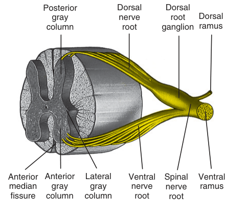
Ở gần hoặc trong lỗ liên đốt sống (intervertebral foramen), các rễ thần kinh bụng và rễ thần kinh lưng hợp lại tạo thành một rễ thần kinh tủy sống. (Các rễ thần kinh tủy sống thường được mô tả là “hỗn hợp”, nhấn mạnh điểm quan trọng rằng chúng chứa những tổ hợp khác nhau gồm cả sợi cảm giác lẫn sợi vận động.) Rễ thần kinh tủy sống dày lên do sự hợp nhất của các nơ-ron vận động và cảm giác cùng với sự hiện diện của hạch rễ lưng.
Cột sống chứa 31 cặp rễ thần kinh tủy sống: 8 cặp cổ, 12 cặp ngực, 5 cặp thắt lưng, 5 cặp cùng và 1 cặp cụt. Các chữ viết tắt C, T, L và S kèm chữ số phù hợp dùng để chỉ định từng rễ thần kinh tủy sống — ví dụ, C5 và T6. Vùng cổ có bảy đốt sống nhưng có tám rễ thần kinh cổ. Thần kinh dưới chẩm (C1) rời tủy sống ở giữa xương chẩm và cung sau của đốt đội (C1). Rễ thần kinh tủy sống C8 thoát ra khỏi tủy sống ở giữa đốt sống cổ thứ bảy và đốt sống ngực thứ nhất. Các rễ thần kinh tủy sống từ T1 trở xuống thoát ra khỏi tủy sống ngay phía dưới hoặc phía đuôi (caudal) so với thân đốt sống tương ứng.
Ngay khi thoát khỏi lỗ liên đốt sống của mình, rễ thần kinh tủy sống lập tức chia thành một nhánh bụng (ventral ramus) và một nhánh lưng (dorsal ramus) (từ Latin ramus nghĩa là “đường đi”) (xem Hình 10.1). Tùy theo vị trí, nhánh bụng tạo thành các thần kinh phân bố, nói chung, cho cơ, khớp và da của thân mình trước–bên và cổ, cũng như của các chi. Ngược lại, nhánh lưng tạo thành các thần kinh phân bố, nói chung, cho cơ, khớp và da của phần sau thân mình và cổ. Sự tổ chức giải phẫu này được mô tả một cách tổng quát bằng tranh minh họa trong Hình 10.2.
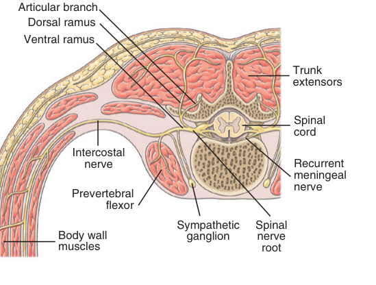
Mỗi rễ thần kinh tủy sống đều có một nhánh lưng tách ra, phân bố cho các cấu trúc ở phần sau thân mình, thường theo một kiểu phân đốt rất rõ. Trừ các nhánh lưng C1 và C2 — sẽ được bàn riêng — tất cả các nhánh lưng đều nhỏ hơn các nhánh bụng tương ứng (xem Hình 10.2). Nhìn chung, các nhánh lưng đi về phía sau (lưng) một quãng tương đối ngắn trước khi phân bố cho các cơ và mô liên kết kề cận được chọn lọc ở mặt lưng của thân mình (Hộp 10.1).
Nhánh lưng C1 (“thần kinh dưới chẩm”) chủ yếu là một thần kinh vận động, phân bố cho các cơ dưới chẩm. Nhánh lưng C2 là lớn nhất trong các nhánh lưng cổ, phân bố cho các cơ tại chỗ cũng như góp phần tạo nên thần kinh chẩm lớn (C2 và C3) — một thần kinh cảm giác cho vùng da đầu phía sau và phía trên.
HỘP 10.1 — Các Cấu Trúc Được Phân Bố Thần Kinh Từ Các Nhánh Lưng Của Rễ Thần Kinh Tủy Sống (C1–S5) (Structures Innervated by Dorsal Rami of Spinal Nerve Roots (C1–S5))
Các cơ
Da
Các khớp
Trên khắp cột sống, mỗi nhánh bụng của một rễ thần kinh tủy sống hoặc tạo thành một đám rối hoặc tiếp tục như một thần kinh riêng có tên.
Đám rối (plexus) là sự trộn lẫn của các nhánh bụng tạo thành các thần kinh ngoại vi, chẳng hạn thần kinh quay, thần kinh hoành hay thần kinh tọa. Bốn đám rối lớn, không kể đám rối cụt nhỏ, được tạo nên từ các nhánh bụng: đám rối cổ (C1–C4), đám rối cánh tay (C5–T1), đám rối thắt lưng (T12–L4) và đám rối cùng (L4–S4). Phần lớn các thần kinh đi ra từ đám rối cánh tay, đám rối thắt lưng và đám rối cùng phân bố cho các cấu trúc liên quan đến các chi, hay chính xác hơn, bộ xương phụ. Tuy nhiên, phần lớn các thần kinh đi ra từ đám rối cổ lại phân bố cho các cấu trúc thuộc bộ xương trục.
Nhiều nhánh bụng trong thân mình và vùng sọ–cổ không tham gia tạo nên một đám rối; thay vào đó, chúng giữ nguyên là các thần kinh riêng có tên. Mỗi thần kinh trong số này điển hình chỉ phân bố cho một phần hay một đoạn của một cơ hay một mô liên kết. Đó là lý do, chẳng hạn, nhiều cơ vượt qua một phần lớn bộ xương trục có nhiều mức phân bố thần kinh theo đốt. Hai nhóm thần kinh theo đốt riêng nổi tiếng nhất bắt nguồn từ các nhánh bụng là các thần kinh liên sườn (ngực) và các thần kinh màng não hồi (xem Hình 10.2).
Thần kinh liên sườn, T1 đến T12 (Intercostal Nerves, T1 to T12)
Mỗi trong 12 nhánh bụng của các rễ thần kinh tủy sống ngực tạo thành một thần kinh liên sườn, phân bố cho một vùng da liên sườn và nhóm cơ liên sườn dùng chung khoảng liên sườn đó. (Xem sơ đồ vùng da trong Phụ lục III, Phần B, Hình III.2.) Nhánh bụng T1 tạo thành thần kinh liên sườn thứ nhất và một phần thân dưới của đám rối cánh tay. Các nhánh bụng T7–T12 cũng phân bố cho các cơ của thân mình trước–bên (tức các cơ “bụng”). Nhánh bụng T12 tạo thành thần kinh liên sườn (dưới sườn) cuối cùng và một phần nhánh bụng L1 của đám rối thắt lưng.
Thần kinh màng não hồi (Recurrent Meningeal Nerves)
Một thần kinh màng não hồi (sinuvertebral) duy nhất tách ra từ phần gần đầu cực của mỗi nhánh bụng. Sau khi phân đôi, thần kinh màng não hồi đi ngược trở lại vào lỗ liên đốt sống (do đó có tên gọi “hồi” [xem Hình 10.2]). Như một nhóm, các thần kinh thường rất nhỏ này cung cấp phân bố thần kinh cảm giác và giao cảm cho các màng não bao quanh tủy sống, và cho các mô liên kết gắn với các khớp liên thân đốt. Đặc biệt đáng chú ý, thần kinh màng não hồi cung cấp cảm giác cho dây chằng dọc sau và các vùng kề cận của phần nông của vòng sợi. Các thần kinh cảm giác phân bố cho dây chằng dọc trước đến được tủy sống qua các nhánh nhỏ từ các nhánh bụng gần đó và các nối giao cảm kề cận.
Các cơ của bộ xương trục được tổ chức thành hai vùng rộng và một phần chồng lấn lên nhau: thân mình và vùng sọ–cổ. Các cơ trong mỗi vùng được tổ chức tiếp thành các nhóm, dựa cụ thể hơn trên vị trí của chúng.
Các cơ trong mỗi vùng của cơ thể được trình bày theo hai phần: phần thứ nhất trình bày giải phẫu và tác dụng riêng của từng cơ, phần thứ hai trình bày các ví dụ về tương tác chức năng giữa các cơ có liên quan. Xuyên suốt chương này, người đọc được khuyến khích tham khảo Chương 9 để ôn lại các kiến thức giải phẫu xương liên quan đến điểm bám của cơ. Phần C của Phụ lục III nên được tham khảo để có tóm tắt chi tiết hơn về giải phẫu cơ và phân bố thần kinh của các cơ trong bộ xương trục.
Trước khi bắt đầu mô tả các cơ của thân mình, những chủ đề nền tảng sau đây sẽ được ôn lại; nhiều chủ đề trong số đó đặc biệt liên quan đến vận động học của bộ xương trục.
Theo quy ước, “sức mạnh” của một tác động cơ trong bộ xương trục được biểu diễn bằng một mô men trong (internal torque), được định nghĩa cho các mặt phẳng đứng dọc, trán và ngang. Trong mỗi mặt phẳng, tiềm năng mô men bằng tích của (1) lực cơ sinh ra song song với một mặt phẳng cho trước và (2) chiều dài của cánh tay đòn trong sẵn có cho cơ (Hình 10.3).
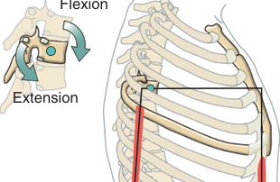
Hướng không gian của đường lực của một cơ quyết định hiệu quả của cơ đó trong việc sinh ra một mô men cho một tác động cụ thể. Hãy xét, ví dụ, cơ chéo bụng ngoài (obliquus externus abdominis) sinh ra một lực ngang qua phần bên của lồng ngực, với đường lực hướng khoảng 30 độ so với phương thẳng đứng (Hình 10.4). Vectơ lực tổng hợp của cơ có thể được phân tách theo lượng giác thành hai thành phần lực đứng dọc và ngang không bằng nhau. Thành phần lực đứng dọc — khoảng 86% lực cực đại của cơ — sẵn dùng để sinh ra các mô men nghiêng bên hay gập. Thành phần lực ngang — khoảng 50% lực cực đại của cơ — sẵn dùng để sinh ra một mô men xoay trục. (Ước tính này lần lượt dựa trên các giá trị cosine và sine của 30°.) Để bất kỳ cơ nào của bộ xương trục đóng góp toàn bộ tiềm năng lực của nó cho xoay trục, đường lực tổng thể của nó phải hướng hoàn toàn trong mặt phẳng ngang. Để một cơ đóng góp toàn bộ tiềm năng lực của nó cho nghiêng bên hay gập–duỗi, đường lực tổng thể của nó phải hướng thẳng đứng. (Tuy nhiên, cần nhận ra rằng một cơ hướng thẳng đứng không thể sinh ra bất kỳ xoay trục nào vì nó thiếu cánh tay đòn cần thiết để sinh ra một mô men trong mặt phẳng ngang. Như đã mô tả trong Chương 1, một lực cơ không thể sinh ra một mô men trong một mặt phẳng cho trước nếu nó song song với hoặc xuyên qua trục xoay tương ứng.)
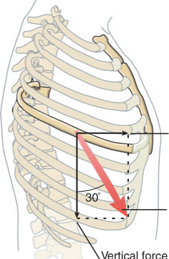
Đường lực của các cơ điều khiển vận động của bộ xương trục có hướng không gian biến thiên trên một phổ rộng, từ gần thẳng đứng đến gần nằm ngang. Thực tế này quan trọng đối với tiềm năng mô men của một cơ hay một nhóm cơ cho một tác động cho trước. Ví dụ, vì khối lượng cơ tổng thể của thân mình nghiêng về hướng thẳng đứng nhiều hơn hướng ngang, các nỗ lực cực đại thường tạo ra các mô men mặt phẳng trán và đứng dọc lớn hơn các mô men mặt phẳng ngang.
Muốn hiểu các tác động của các cơ nằm trong bộ xương trục, trước hết cần xét cơ trong cả hai dạng kích hoạt một bên và hai bên. Kích hoạt hai bên thường tạo ra gập hay duỗi thuần túy của bộ xương trục. Bất kỳ tiềm năng nào cho nghiêng bên hay xoay trục đều được trung hòa bởi các lực đối lập ở các cơ bên đối. Ngược lại, kích hoạt một bên có khuynh hướng tạo ra gập hay duỗi của bộ xương trục, kèm theo một tổ hợp nào đó của nghiêng bên và xoay trục bên đối hay cùng bên. (Thuật ngữ nghiêng bên của bộ xương trục ngụ ý nghiêng bên “cùng bên” và vì vậy không được ghi rõ như vậy xuyên suốt chương này.)
Tác động của một cơ trong bộ xương trục phụ thuộc, một phần, vào mức độ cố định, hay ổn định, tương đối của các chỗ bám của cơ. Lấy ví dụ hiệu quả của một sự co hai bên của một thành viên trong nhóm cơ dựng sống — một cơ bám vào cả lồng ngực lẫn khung chậu. Khi khung chậu được ổn định, cơ có thể duỗi lồng ngực; khi lồng ngực được ổn định, cơ có thể xoay (nghiêng) khung chậu về trước. (Cả hai vận động này xảy ra trong mặt phẳng đứng dọc.) Nếu lồng ngực và khung chậu đều được tự do di chuyển, cơ có thể đồng thời duỗi lồng ngực và nghiêng khung chậu về trước. Tuy nhiên, trừ khi có phát biểu khác, chương này giả định rằng đầu trên (sọ) của một cơ ít bị ràng buộc hơn và do đó tự do di chuyển hơn đầu dưới hay cùng của nó.
Tùy theo tư thế cơ thể, trọng lực có thể hỗ trợ hoặc cản trở các vận động của bộ xương trục. Ví dụ, việc gập đầu chậm từ tư thế giải phẫu (đứng) thường được kiểm soát bằng kích hoạt lệch tâm (eccentric activation) của các cơ duỗi cổ. Trong trường hợp này, trọng lực là “cơ gập” chính của đầu, còn các cơ duỗi kiểm soát tốc độ và mức độ của tác động. Tuy nhiên, gập đầu nhanh đòi hỏi một đợt kích hoạt đồng tâm (concentric activation) bùng phát từ các cơ gập cổ, vì tốc độ mong muốn của vận động có thể lớn hơn tốc độ do tác động của riêng trọng lực tạo ra. Trừ khi có phát biểu khác, người ta giả định rằng tác động của một cơ được thực hiện qua một sự co đồng tâm, xoay một đoạn cơ thể ngược trọng lực hay ngược một dạng kháng lực ngoài nào khác.
Phần sau đây tập trung chủ yếu vào mối quan hệ giữa giải phẫu và các tác động riêng của từng cơ thân mình. Hệ cơ được chia thành ba nhóm: (1) các cơ thân mình phía sau, (2) các cơ thân mình trước–bên và (3) các cơ bổ sung (Bảng 10.1).
| Vùng giải phẫu (Anatomic Region) | Nhóm (Set) | Các cơ (Muscles) |
|---|---|---|
| Các cơ thân mình (Muscles of the trunk) | Nhóm 1: Các cơ thân mình phía sau (cơ “lưng”) (Set 1: Muscles of the posterior trunk (“back” muscles)) | Lớp nông (Superficial Layer) Cơ thang, cơ lưng rộng, các cơ hình thoi, cơ nâng vai, cơ răng trước (Trapezius, latissimus dorsi, rhomboids, levator scapula, serratus anterior) Lớp trung gian† (Intermediate Layer) Cơ răng sau trên (Serratus posterior superior) Cơ răng sau dưới (Serratus posterior inferior) Lớp sâu (Deep Layer) Ba nhóm (Three groups): 1. Nhóm cơ dựng sống (cơ gai, cơ dài nhất, cơ chậu sườn) (Erector spinae group (spinalis, longissimus, iliocostalis)) 2. Nhóm cơ ngang–gai (các cơ bán gai, cơ nhiều đoạn, cơ xoay) (Transversospinal group (semispinalis muscles, multifidi, rotators)) 3. Nhóm phân đoạn ngắn (các cơ liên gai, các cơ liên mỏm ngang) (Short segmental group (interspinalis muscles, intertransversarius muscles)) |
| Nhóm 2: Các cơ thân mình trước–bên (cơ “bụng”) (Set 2: Muscles of the anterior-lateral trunk (“abdominal” muscles)) | Cơ thẳng bụng (Rectus abdominis) Cơ chéo bụng trong (Obliquus internus abdominis) Cơ chéo bụng ngoài (Obliquus externus abdominis) Cơ ngang bụng (Transversus abdominis) | |
| Nhóm 3: Các cơ bổ sung (Set 3: Additional muscles) | Cơ chậu–thắt lưng (Iliopsoas) Cơ vuông thắt lưng (Quadratus lumborum) | |
| Các cơ vùng sọ–cổ (Muscles of the craniocervical region) | Nhóm 1: Các cơ vùng sọ–cổ trước–bên (Set 1: Muscles of the anterior-lateral craniocervical region) | Cơ ức đòn chũm (Sternocleidomastoid) Cơ bậc thang trước (Scalenus anterior) Cơ bậc thang giữa (Scalenus medius) Cơ bậc thang sau (Scalenus posterior) Cơ dài cổ (Longus colli) Cơ dài đầu (Longus capitis) Cơ thẳng đầu trước (Rectus capitis anterior) Cơ thẳng đầu bên (Rectus capitis lateralis) |
| Nhóm 2: Các cơ vùng sọ–cổ phía sau (Set 2: Muscles of the posterior craniocervical region) | Nhóm nông (Superficial Group) Cơ tàn nhãn cổ (Splenius cervicis) Cơ tàn nhãn đầu (Splenius capitis) Nhóm sâu (các cơ “dưới chẩm”) (Deep Group (“Suboccipital” Muscles)) Cơ thẳng đầu sau lớn (Rectus capitis posterior major) Cơ thẳng đầu sau nhỏ (Rectus capitis posterior minor) Cơ chéo đầu trên (Obliquus capitis superior) Cơ chéo đầu dưới (Obliquus capitis inferior) |
*Một cơ được xếp vào “thân mình” hay “vùng sọ–cổ” dựa trên vị trí của phần lớn các chỗ bám của nó. (Chú thích gắn dấu * trong bảng.)
†Các cơ này được trình bày trong Chương 11. (Chú thích gắn dấu † trong bảng.)
Các cơ của thân mình phía sau được tổ chức thành ba lớp: nông, trung gian và sâu (xem Bảng 10.1).
Các cơ trong lớp nông và lớp trung gian của lưng (Muscles in the Superficial and Intermediate Layers of the Back)
Các cơ thuộc lớp nông của lưng đã được trình bày trong phần nghiên cứu về vai (xem Chương 5). Chúng gồm cơ thang, cơ lưng rộng, các cơ hình thoi, cơ nâng vai và cơ răng trước. Cơ thang và cơ lưng rộng là những cơ nông nhất, kế tiếp là các cơ hình thoi và cơ nâng vai nằm sâu hơn. Cơ răng trước nằm lệch hơn về bên trên lồng ngực.
Kích hoạt hai bên phần lớn các cơ của lớp nông duỗi vùng kế cận của bộ xương trục. Ngược lại, kích hoạt một bên nghiêng bên và, trong đa số trường hợp, xoay trục vùng đó. Ví dụ, cơ thang giữa phải hỗ trợ nghiêng bên phải và xoay trục sang trái của vùng ngực trên.
Các cơ thuộc lớp trung gian của lưng là cơ răng sau trên và cơ răng sau dưới. Chúng nằm ngay sâu dưới các cơ hình thoi và cơ lưng rộng. Cơ răng sau trên và cơ răng sau dưới là những cơ mỏng, đóng góp rất ít vào vận động hay sự ổn định của thân mình. Chức năng của chúng nhiều khả năng liên quan đến cơ chế thông khí và vì vậy chúng được mô tả trong Chương 11.
Các cơ trong lớp nông và lớp trung gian của lưng thường được gọi là “ngoại sinh” (extrinsic) vì, dưới góc nhìn phôi thai học, chúng vốn ban đầu gắn với các “chồi chi” (limb buds) phía trước và chỉ sau này trong quá trình phát triển mới di chuyển về phía lưng tới vị trí cuối cùng của chúng trên lưng. Dù các cơ như cơ nâng vai, cơ hình thoi và cơ răng trước nằm trong vùng lưng, về mặt kỹ thuật chúng thuộc nhóm cơ chi trên. Vì vậy, tất cả các cơ ngoại sinh của lưng đều được chi phối bởi các nhánh bụng của các thần kinh tủy (tức đám rối cánh tay hoặc các thần kinh liên sườn).
Các cơ trong lớp sâu của lưng (Muscles in the Deep Layer of the Back)
Các cơ trong lớp sâu của lưng là (1) nhóm cơ dựng sống, (2) nhóm cơ ngang–gai và (3) nhóm phân đoạn ngắn (Bảng 10.2). Tổ chức giải phẫu của nhóm cơ dựng sống và nhóm cơ ngang–gai được minh họa trong Hình 10.6.
Nhìn chung, từ nông đến sâu, các sợi của các cơ trong lớp sâu trở nên ngắn dần và chéo dần. Một cơ thuộc nhóm cơ dựng sống nông hơn có thể trải dài gần như toàn bộ chiều dài cột sống. Ngược lại, mỗi cơ thuộc nhóm phân đoạn ngắn nằm sâu hơn chỉ vượt qua một khớp liên đốt sống.
Tuy còn một vài ngoại lệ, các cơ trong lớp sâu của lưng được chi phối theo phân đoạn qua các nhánh lưng của các thần kinh tủy. Chẳng hạn, một cơ đặc biệt dài trong nhóm cơ dựng sống được chi phối bởi nhiều nhánh lưng dọc theo cột sống. Ngược lại, một cơ ngắn như một cơ nhiều đoạn được chi phối bởi một nhánh lưng duy nhất.
Về mặt phôi thai học, và khác với các cơ của chi và thân mình trước–bên, các cơ trong lớp sâu của lưng đã giữ nguyên vị trí ban đầu của chúng nằm phía lưng so với trục thần kinh (neuraxis).
TẬP TRUNG ĐẶC BIỆT 10.1 — Các cơ lớp nông của lưng: một ví dụ về các cơ “chia sẻ” tác động giữa bộ xương trục và bộ xương phụ (Muscles of the Superficial Layer of the Back: An Example of Muscles “Sharing” Actions between the Axial and Appendicular Skeletons)
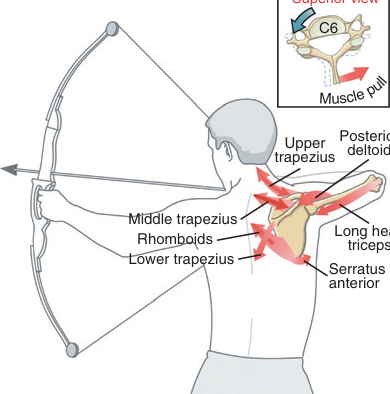
Chương 5 mô tả các tác động của các cơ lớp nông của lưng, dựa trên khả năng xoay bộ xương phụ (tức xương cánh tay, xương bả vai hay xương đòn) về phía một bộ xương trục được cố định (tức đầu, xương ức, cột sống hay các xương sườn). Tuy nhiên, chính những cơ này cũng hoàn toàn có thể thực hiện tác động “ngược” (tức xoay các đoạn của bộ xương trục về phía bộ xương phụ được cố định). Tác động cơ này được minh họa bằng việc làm nổi bật các chức năng của cơ thang khi sử dụng cung và tên. Như thể hiện trong Hình 10.5, một vài cơ sinh ra lực cần thiết để ổn định vị trí của xương bả vai và cánh tay đang dạng. Các lực sinh ra ở cơ thang trên và cơ thang dưới đồng thời xoay cột sống cổ và ngực trên sang trái, được chỉ bằng các mũi tên hai chiều. Hiệu ứng xoay trục “bên đối” này được thể hiện ở C6 trong hình chèn trong Hình 10.5. Khi cơ kéo mỏm gai của C6 sang phải, mặt trước của đốt sống được xoay sang trái. Cơ thang (và các cơ hình thoi) ổn định xương bả vai chống lại lực kéo của cơ delta sau, đầu dài cơ tam đầu cánh tay và cơ răng trước. Các tác động dùng chung của những cơ này chứng minh tính hiệu quả vốn có của hệ cơ xương. Trong ví dụ này, một vài cơ thực hiện nhiều tác động trên cả bộ xương trục lẫn bộ xương phụ.
Vì lý do này, các cơ ấy còn được gọi là những cơ “nội tại” (intrinsic) hay “bản địa” (native) của lưng. Theo nguyên tắc chung, phần lớn các cơ nội tại của lưng được chi phối bởi các nhánh lưng của các thần kinh tủy lân cận.
| Nhóm (và độ sâu tương đối) (Group and Relative Depth) | Các cơ riêng lẻ (Individual Muscles) | Hướng sợi chung (General Fiber Direction) | Ghi chú (Comments) |
|---|---|---|---|
| Cơ dựng sống (Erector spinae) (nông) | Cơ chậu sườn thắt lưng (Iliocostalis lumborum) | Về phía đầu và sang bên | Tay đòn hiệu quả nhất cho nghiêng bên |
| Cơ chậu sườn ngực (Iliocostalis thoracis) | Thẳng đứng | — | |
| Cơ chậu sườn cổ (Iliocostalis cervicis) | Về phía đầu và vào trong | — | |
| Cơ dài nhất ngực (Longissimus thoracis) | Thẳng đứng | Phát triển nhất trong nhóm cơ dựng sống | |
| Cơ dài nhất cổ (Longissimus cervicis) | Về phía đầu và vào trong | — | |
| Cơ dài nhất đầu (Longissimus capitis) | Về phía đầu và sang bên | — | |
| Cơ gai ngực (Spinalis thoracis) | Thẳng đứng | Khó xác định rõ; cơ gai đầu thường dính liền với cơ bán gai đầu | |
| Cơ gai cổ (Spinalis cervicis) | Thẳng đứng | — | |
| Cơ gai đầu (Spinalis capitis) | Thẳng đứng | — | |
| Nhóm ngang–gai (Transversospinal) (trung gian) | Cơ bán gai (Semispinalis) | — | — |
| Cơ bán gai ngực (Semispinalis thoracis) | Về phía đầu và vào trong | Bắt chéo sáu đến tám mối nối liên đốt; các sợi chạy chếch về phía đầu–vào trong, trừ phần nông lớn của cơ bán gai đầu, vốn chạy thẳng đứng | |
| Cơ bán gai cổ (Semispinalis cervicis) | Về phía đầu và vào trong | — | |
| Cơ bán gai đầu (Semispinalis capitis) | Gần như thẳng đứng về tổng thể | — | |
| Cơ nhiều khối (Multifidi) | Về phía đầu và vào trong | Bắt chéo hai đến bốn mối nối liên đốt | |
| Cơ xoay (Rotatores) | — | — | |
| Cơ xoay ngắn (Rotator brevis) | Nằm ngang | Cơ xoay ngắn bắt chéo chỉ một mối nối liên đốt; cơ xoay dài bắt chéo hai mối nối. Các cơ xoay phát triển nhất ở vùng ngực | |
| Cơ xoay dài (Rotator longus) | Về phía đầu và vào trong | — | |
| Nhóm đốt ngắn (Short segmental) (sâu) | Cơ liên gai (Interspinalis) | Thẳng đứng | Cả hai cơ bắt chéo một mối nối liên đốt và phát triển nhất ở vùng cổ. Các cơ liên gai đan lẫn với các dây chằng liên gai |
| Cơ liên mỏm ngang (Intertransversarius) | Thẳng đứng | — |
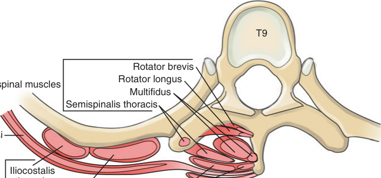
Nhóm cơ dựng sống (Erector Spinae Group)
Cơ dựng sống là một nhóm cơ rộng lớn và khó xác định rõ, chạy ở cả hai bên cột sống, cách các mỏm gai khoảng một bàn tay (Hình 10.7). Phần lớn các cơ nằm sâu hơn lớp sau của cân ngực–thắt lưng (xem Chương 9) và sâu hơn các cơ thuộc lớp trung gian và lớp nông của lưng. Cơ dựng sống gồm các cơ gai (spinalis), cơ dài nhất (longissimus) và cơ chậu sườn (iliocostalis). Mỗi cơ lại được chia nhỏ hơn về mặt tổ chức địa hình thành ba vùng, tạo ra tổng cộng chín cơ có tên gọi (xem Bảng 10.2).
Phần lớn các cơ dựng sống có chung một chỗ bám trên một gân chung (common tendon) rộng và dày, nằm ở vùng xương cùng (xem Hình 10.7). Gân chung này neo cơ dựng sống vào nhiều vị trí (Hộp 10.2). Từ chỗ gốc cùng, vững chắc này, ba cột cơ thẳng đứng ít có tổ chức phát triển lên: các cơ gai, cơ dài nhất và cơ chậu sườn. Các chỗ bám cơ nói chung được mô tả trong các mục sắp tới; các chỗ bám cụ thể hơn có thể tìm thấy trong Phụ lục III, Phần C.
Các cơ gai (Spinalis Muscles). Các cơ gai gồm cơ gai ngực (spinalis thoracis), cơ gai cổ (spinalis cervicis) và cơ gai đầu (spinalis capitis). Nhìn chung, cột cơ nhỏ này, thường khó phân biệt (hoặc vắng mặt), phát sinh từ phần trên của gân chung. Cơ đi lên bằng cách bám vào các mỏm gai lân cận của phần lớn các đốt sống ngực hoặc, ở vùng cổ, vào dây chằng gáy. Cơ gai đầu, nếu có, thường dính liền với phần trong của cơ bán gai đầu.
Các cơ dài nhất (Longissimus Muscles). Các cơ dài nhất gồm cơ dài nhất ngực (longissimus thoracis), cơ dài nhất cổ (longissimus cervicis) và cơ dài nhất đầu (longissimus capitis). Là một bộ, các cơ này tạo thành cột cơ lớn nhất và phát triển nhất của nhóm cơ dựng sống. Các sợi của các cơ dài nhất ngực xòe về phía đầu từ gân chung, bám chủ yếu vào đầu sau của phần lớn các xương sườn. Ở vùng cổ, cơ dài nhất cổ chếch nhẹ vào trong trước khi bám vào các củ sau của các mỏm ngang của các đốt sống cổ (xem Hình 10.7). Ngược lại, cơ dài nhất đầu chạy chếch nhẹ ra bên và bám vào bờ sau của mỏm chũm của xương thái dương. Hướng chếch nhẹ hơn của phần trên cơ dài nhất đầu và cơ dài nhất cổ gợi ý rằng các cơ này hỗ trợ xoay trục cùng bên của vùng sọ–cổ.
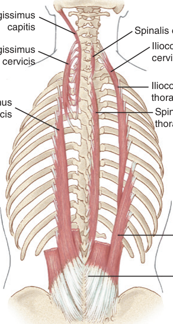
HỘP 10.2 — Các Chỗ Bám Do Gân Chung Của Cơ Dựng Sống Tạo Nên (Attachments Made by the Common Tendon of the Erector Spinae)
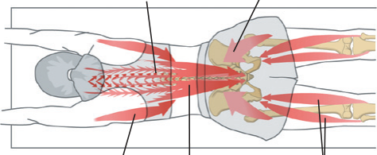
Các cơ chậu sườn (Iliocostalis Muscles). Các cơ chậu sườn gồm cơ chậu sườn thắt lưng (iliocostalis lumborum), cơ chậu sườn ngực (iliocostalis thoracis) và cơ chậu sườn cổ (iliocostalis cervicis). Nhóm này chiếm cột nằm ngoài cùng của cơ dựng sống. Cơ chậu sườn thắt lưng phát sinh từ gân chung và chạy lên trên và hơi ra ngoài để bám vào mặt ngoài góc của các xương sườn dưới. Cơ chậu sườn ngực tiếp tục theo hướng thẳng đứng để bám ngay mặt ngoài góc của các xương sườn giữa và trên. Từ điểm này, cơ chậu sườn cổ tiếp tục về phía đầu và hơi vào trong để bám vào các củ sau của các mỏm ngang của các đốt sống cổ giữa, cùng với cơ dài nhất cổ.
Tổng kết (Summary). Các cơ dựng sống bắt chéo một quãng đường đáng kể khắp bộ xương trục (xem Hình 10.7). Đặc điểm giải phẫu này gợi ý một thiết kế phù hợp hơn để kiểm soát các vận động thô trên một phần lớn của bộ xương trục (chẳng hạn duỗi thân khi đứng dậy khỏi một chiếc ghế thấp) hơn là các vận động tinh ở những mối nối liên đốt được chọn. Sự co song bên của cơ dựng sống như một nhóm sẽ duỗi thân, cổ hoặc đầu (Hình 10.8). Diện tích tiết diện ngang tương đối lớn của các cơ này cho phép chúng tạo ra mô men duỗi lớn dọc cột sống trục, phù hợp cho việc nhấc hoặc mang các vật nặng.
Bằng cách bám vào xương cùng và khung chậu, cơ dựng sống có thể nghiêng chậu về trước, qua đó làm đậm thêm độ ưỡn thắt lưng. (Nghiêng chậu [pelvic tilt] mô tả một sự xoay của khung chậu trên mặt phẳng đứng dọc quanh các khớp hang. Hướng nghiêng được chỉ bằng hướng xoay của các mào chậu.) Như được mô tả trong Hình 10.8A, sự nghiêng chậu về trước được làm đậm thêm bởi sức căng tăng lên trong các cơ gập khớp hang bị kéo giãn, chẳng hạn cơ chậu.
Khi co một bên, các cơ chậu sườn nằm nhiều hơn về phía ngoài là những cơ nghiêng bên hiệu quả nhất của nhóm cơ dựng sống. Các thành phần phía đầu hoặc thuộc vùng cổ của các cơ dài nhất và cơ chậu sườn hỗ trợ xoay trục cùng bên, nhất là khi đầu và cổ đã xoay hết tầm sang phía đối bên. Cơ chậu sườn thắt lưng hỗ trợ nhẹ cho xoay trục cùng bên.
Các cơ ngang–gai (Transversospinal Muscles)
Ngay sâu dưới các cơ dựng sống là nhóm cơ ngang–gai (transversospinal muscle group): các cơ bán gai (semispinalis), các cơ nhiều đoạn (multifidi) và các cơ xoay (rotatores) (Hình 10.9 và 10.10). Các cơ bán gai nằm nông; các cơ nhiều đoạn, ở mức trung gian; còn các cơ xoay, nằm sâu.
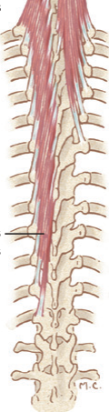
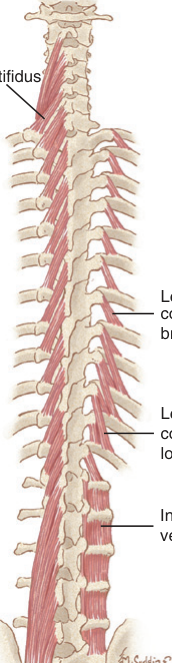
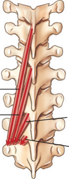
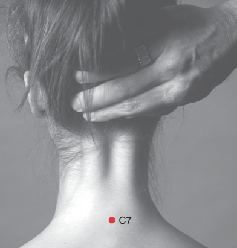
Tên “ngang–gai” (transversospinal) nói về các điểm bám chung của phần lớn các cơ trong nhóm này (tức từ mỏm ngang của một đốt sống đến mỏm gai của một đốt sống nằm cao hơn). Ngoại trừ một vài trường hợp, các điểm bám này hướng phần lớn các sợi cơ theo hướng lên trên và vào trong (hướng đầu và hướng trong). Nhiều cơ trong nhóm ngang–gai có hình thái tương tự nhau, khác nhau chủ yếu về chiều dài và số mối nối liên đốt sống (intervertebral junctions) mà mỗi cơ đi qua (Hình 10.11). Dù có phần đơn giản hóa, quan niệm này có thể hỗ trợ rất nhiều cho việc học giải phẫu tổng thể và các tác động của các cơ này.
Các cơ bán gai (Semispinalis Muscles). Các cơ bán gai gồm cơ bán gai ngực (semispinalis thoracis), cơ bán gai cổ (semispinalis cervicis) và cơ bán gai đầu (semispinalis capitis) (xem Hình 10.9). Nhìn chung, mỗi cơ, hoặc bộ sợi chính trong mỗi cơ, đi qua sáu đến tám mối nối liên đốt sống. Cơ bán gai ngực gồm nhiều bó cơ mỏng, nối kết với nhau bằng các gân dài. Các sợi cơ bám từ mỏm ngang của các đốt T6 đến T10 lên các mỏm gai của các đốt C6 đến T4. Cơ bán gai cổ, dày và phát triển hơn nhiều so với cơ bán gai ngực, bám từ các mỏm ngang của vùng ngực trên lên các mỏm gai của các đốt C2 đến C5. Các sợi cơ bám vào mỏm gai nổi bật của đốt trục (C2) phát triển đặc biệt tốt, đóng vai trò những chất ổn định quan trọng cho các cơ dưới chẩm (được mô tả sau).
Cơ bán gai đầu nằm sâu dưới cơ tàn nhãn (splenius) và cơ thang (trapezius). Cơ bắt đầu từ các đỉnh của mỏm ngang các đốt C7 đến T7. Phần sâu của cơ gồm các bó đi theo hướng lên trên và hơi vào trong để bám vào các mặt sau của mỏm khớp (articular processes) các đốt cổ giữa. Phần nông và dày hơn của cơ tiếp tục đi lên, bám vào một vùng tương đối rộng trên xương chẩm, lấp đầy phần lớn diện tích giữa các đường chẩm trên và dưới (superior and inferior nuchal lines) (xem Hình 9.3). (Lưu ý rằng các điểm bám cổ nằm sâu hơn của cơ này không thấy rõ ở Hình 10.9.)
Cơ bán gai cổ và cơ bán gai đầu là những cơ lớn nhất đi qua mặt sau của cổ. Kích thước lớn, chiều dài cánh tay đòn (moment arm) thuận lợi và hướng sợi thẳng đứng tổng thể mạnh mẽ giúp chúng tạo ra 35% đến 40% tổng mô men duỗi của vùng sọ–cổ. Các cơ bán gai đầu phải và trái dễ sờ nắn như những dải tròn dày ở hai bên đường giữa của cổ trên, đặc biệt thấy rõ ở trẻ sơ sinh và ở người trưởng thành gầy gò, nhiều cơ (Hình 10.12).
Các cơ nhiều đoạn (Multifidi). Các cơ nhiều đoạn (multifidi) nằm ngay sâu dưới các cơ bán gai. Danh từ số nhiều “multifidi” chỉ một tập hợp gồm nhiều bó sợi, chứ không phải một tập hợp các cơ riêng lẻ. Tất cả các cơ nhiều đoạn đều có hướng sợi và chiều dài tương tự nhau, kéo dài giữa mặt sau xương cùng và đốt trục (C2). Nhìn chung, các cơ nhiều đoạn bắt đầu từ mỏm ngang của một đốt sống và bám tận vào mỏm gai của một đốt sống nằm cao hơn hai đến bốn mối nối liên đốt sống (xem Hình 10.10A).
Các cơ nhiều đoạn dày và phát triển nhất ở vùng thắt lưng–cùng (xem các điểm bám đa dạng được liệt kê trong Hộp 10.3). Các sợi chồng lấp của các cơ nhiều đoạn lấp đầy phần lớn khoảng trống lõm tạo thành giữa mỏm gai và mỏm ngang. Các sợi bên trong các cơ này ngắn với diện tích cắt ngang tương đối lớn — một thiết kế cấu trúc mang lại sự vững chắc tuyệt vời cho phần nền của cột sống.
Các cơ xoay (Rotatores). Các cơ xoay (rotatores) là những cơ nằm sâu nhất trong nhóm cơ ngang–gai. Giống các cơ nhiều đoạn, các cơ xoay gồm một số lượng lớn các sợi cơ riêng lẻ. Dù tồn tại khắp toàn bộ cột sống, các cơ xoay phát triển tốt nhất ở vùng ngực (xem Hình 10.10B). Mỗi sợi bám giữa mỏm ngang của một đốt sống với mảnh cung (lamina) và chân mỏm gai của một đốt sống nằm cao hơn một hoặc hai mối nối liên đốt sống. Theo định nghĩa, cơ xoay ngắn (rotator brevis) bắc qua một mối nối liên đốt sống, và cơ xoay dài (rotator longus) bắc qua hai mối nối liên đốt sống.
Tóm tắt (Summary). Trung bình, các cơ ngang–gai đi qua ít mối nối liên đốt sống hơn nhóm cơ dựng sống (erector spinae). Đặc điểm này cho thấy, nhìn chung, các cơ ngang–gai được thiết kế thiên về tạo các vận động tinh được kiểm soát và các lực ổn định khắp bộ xương trục.
Khi co hai bên, các cơ ngang–gai duỗi bộ xương trục (xem Hình 10.8B). Mô men duỗi tăng lên làm nổi bật thêm ưỡn cổ và ưỡn thắt lưng, đồng thời làm giảm gù ngực. Kích thước và độ dày của các cơ ngang–gai lớn nhất ở hai đầu của bộ xương trục. Về phía đầu, cơ bán gai cổ và cơ bán gai đầu là những cơ duỗi phát triển rất tốt của vùng sọ–cổ; về phía đuôi, các cơ nhiều đoạn là những cơ duỗi phát triển rất tốt của vùng thắt lưng dưới, chiếm hai phần ba độ vững chắc dựa vào cơ ở vùng này.
Khi co một bên, các cơ ngang–gai làm nghiêng bên cột sống; tuy nhiên, đòn bẩy cho tác động này còn hạn chế do các cơ nằm sát cột sống. (Một ngoại lệ đáng chú ý là cơ bán gai đầu, vốn có đòn bẩy thuận lợi cho việc nghiêng bên của sọ và, gián tiếp, của toàn bộ vùng sọ–cổ.) Các cơ ngang–gai có hướng chéo hơn hỗ trợ xoay trục đối bên. Ví dụ, từ một mỏm ngang được giữ tương đối cố định, sự co của một cơ nhiều đoạn trái đơn lẻ hoặc một cơ xoay dài có thể làm xoay một mỏm gai nằm cao hơn về phía trái và, kết quả là, xoay mặt trước của đốt sống sang phải. Tuy nhiên, so với tất cả các cơ thân, các cơ ngang–gai chỉ là những cơ xoay trục thứ cấp. Đòn bẩy cho sự xoay này tương đối kém do các cơ nhìn chung nằm sát cột sống. (Hãy so sánh các cơ nhiều đoạn với cơ chéo bụng ngoài, ví dụ, ở Hình 10.3C.) Hơn nữa, đường hướng lực chi phối của phần lớn các sợi cơ ngang–gai định hướng theo chiều dọc nhiều hơn là chiều ngang, nhờ đó tạo tiềm năng lực cho duỗi lớn hơn là cho xoay trục.
Nhóm cơ phân đoạn ngắn gồm các cơ liên gai (interspinalis) và các cơ liên mỏm ngang (intertransversarius) (xem Hình 10.10). (Dạng số nhiều “interspinales và intertransversarii” thường được dùng để chỉ tất cả các thành viên trong toàn bộ tập hợp các cơ này.) Chúng nằm sâu dưới nhóm cơ ngang–gai. Tên “phân đoạn ngắn” nói về chiều dài cực ngắn và cách tổ chức phân đoạn cao của các cơ. Mỗi cơ liên gai hoặc cơ liên mỏm ngang riêng lẻ chỉ đi qua đúng một mối nối liên đốt sống. Các cơ này phát triển nhất ở vùng cổ, nơi sự điều khiển tinh tế đầu và cổ hết sức quan trọng.
Mỗi cặp cơ liên gai nằm ở cả hai bên của, và thường hòa vào, dây chằng liên gai (interspinous ligament) tương ứng. Các cơ liên gai có đòn bẩy tương đối thuận lợi và hướng sợi tối ưu để tạo mô men duỗi. Tuy nhiên, mức độ mô men này tương đối nhỏ nếu xét đến kích thước nhỏ của các cơ, và do đó tiềm năng lực thấp.
Mỗi cặp cơ liên mỏm ngang phải và trái nằm giữa các mỏm ngang kề nhau. Giải phẫu của các cơ liên mỏm ngang như một nhóm phức tạp hơn so với các cơ liên gai. Ví dụ, ở vùng cổ, mỗi cơ liên mỏm ngang được chia thành hai cơ nhỏ trước và sau, giữa đó đi qua các nhánh bụng (ventral rami) của các dây thần kinh sống.
Sự co một bên của các cơ liên mỏm ngang như một nhóm làm nghiêng bên cột sống. Dù mức độ mô men nghiêng bên tương đối nhỏ so với các nhóm cơ khác, mô men này nhiều khả năng là một nguồn quan trọng của sự vững chắc liên đốt.
Tóm tắt (Summary). Bản chất phân đoạn cao của các cơ liên gai và cơ liên mỏm ngang rất lý tưởng cho sự điều khiển vận động tinh của bộ xương trục. Vì các cơ đơn đoạn này có mật độ thoi cơ (muscle spindles) tương đối cao, nhiều khả năng chúng cung cấp cho hệ thần kinh (và do đó cho các cơ khác) một nguồn phản hồi cảm giác phong phú, đặc biệt ở vùng sọ–cổ.
Các cơ của thân trước–bên gồm cơ thẳng bụng (rectus abdominis), cơ chéo bụng ngoài (obliquus externus abdominis), cơ chéo bụng trong (obliquus internus abdominis) và cơ ngang bụng (transversus abdominis) (Hình 10.13). Là một nhóm, các cơ này thường được gọi chung là các “cơ bụng” (abdominal muscles). Cơ thẳng bụng là một cơ dạng dải dài nằm ở hai bên đường giữa của cơ thể. Cơ chéo bụng ngoài, cơ chéo bụng trong và cơ ngang bụng — các cơ bụng bên (lateral abdominals) — rộng và dẹt, xếp lớp từ nông đến sâu, phủ qua các mặt trước–bên của bụng.
Các cơ bụng có nhiều chức năng sinh lý quan trọng, gồm nâng đỡ và bảo vệ tạng trong ổ bụng, và làm tăng áp lực trong lồng ngực (intrathoracic pressures) và áp lực trong ổ bụng (intra-abdominal pressures). Như sẽ được mô tả thêm trong Chương 11, việc làm tăng áp lực trong các khoang này hỗ trợ các chức năng như thở ra gắng sức đẩy không khí khỏi phổi, ho, đại tiện và sinh nở. Chương này tập trung nhiều hơn vào các chức năng động học của các cơ bụng, khi chúng vận động và ổn định thân.
HỘP 10.3 — Các Điểm Bám Đa Dạng của Các Cơ Nhiều Khối Khắp Vùng Thắt Lưng–Cùng (Multiple Attachments of the Multifidi throughout the Lumbosacral Region)
CÁC ĐIỂM BÁM DƯỚI (INFERIOR ATTACHMENTS)
CÁC ĐIỂM BÁM TRÊN (SUPERIOR ATTACHMENTS)
Các cơ chéo bụng ngoài, cơ chéo bụng trong và cơ ngang bụng của hai bên cơ thể hòa vào nhau tại đường giữa của bụng qua sự pha trộn của các mô liên kết. Mỗi cơ góp một tấm mô liên kết mỏng gồm hai lớp, về sau tạo thành bọc cơ thẳng bụng trước và bọc cơ thẳng bụng sau (anterior and posterior rectus sheaths). Như thể hiện trong Hình 10.14, bọc cơ thẳng bụng trước được tạo thành từ các mô liên kết của cơ chéo bụng ngoài và cơ chéo bụng trong. Bọc cơ thẳng bụng sau được tạo thành từ các mô liên kết của cơ chéo bụng trong và cơ ngang bụng. Cả hai bọc đều bao quanh cơ thẳng bụng định hướng thẳng đứng và tiếp tục đi vào trong để hòa với các mô liên kết tương ứng từ phía bên kia của bụng. Các mô liên kết dày lên và bắt chéo nhau khi đi ngang qua đường giữa, tạo thành đường trắng (linea alba) (trong tiếng Latinh, linea nghĩa là “đường”, và albus nghĩa là “trắng”). Đường trắng chạy dọc theo chiều dài, giữa mỏm kiếm (xiphoid process) với khớp liên xương mu (pubic symphysis) và mào xương mu (pubic crest).
Cách sắp xếp bắt chéo của các sợi trong đường trắng làm tăng sức bền cho thành bụng, giống như cấu trúc ghép lớp của gỗ dán. Đường trắng còn liên kết các cơ bụng bên phải và trái về mặt cơ học, tạo ra một cách hữu hiệu để truyền lực cơ qua đường giữa của cơ thể.
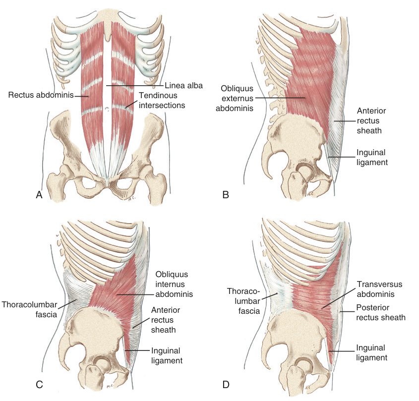
Cơ thẳng bụng gồm hai nửa phải và trái, ngăn cách bởi đường trắng (Hình 10.13A). Mỗi nửa cơ chạy dọc theo chiều dài, rộng dần khi đi lên trong một ống hở tạo thành giữa bọc cơ thẳng bụng trước và sau. Trong tất cả các cơ bụng, cơ thẳng bụng có chiều dài bó cơ (fascicle) dài nhất nhưng diện tích cắt ngang sinh lý (physiologic cross-sectional area) nhỏ nhất. Cơ dạng dải này bị cắt ngang và gia cố bởi ba dải sợi xơ ngang hoặc chéo, gọi là các lằn gân (tendinous intersections). Các dải này hòa vào bọc cơ thẳng bụng trước.* Cơ thẳng bụng bám phía trên vào mỏm kiếm và các sụn sườn của sườn thứ năm đến thứ bảy.
*Chức năng cụ thể của các lằn gân hiện chưa được biết rõ. Dù chỉ là suy đoán, mô liên kết này có thể phân chia cơ thành những đoạn nhỏ hơn, nhờ đó giảm lượng rút ngắn tương đối mà từng sợi cơ riêng lẻ phải thực hiện để chủ động gập thân. Một khả năng khác là các lằn gân là những vách mô liên kết phân định đại khái một số khoanh cơ (myotomes) của cơ. (Chú thích gắn dấu * trong bản in, trang 402.)
…với phần bám gần của cơ khép dài (adductor longus). Do cả hai cấu trúc cùng chia sẻ các điểm bám này, lực quá mức truyền qua các cơ có thể làm tổn thương các điểm bám mô liên kết vào xương, có khả năng dẫn đến một tình trạng đau gọi là đau mu thể thao (athletic pubalgia) hay thoát vị thể thao (sports hernia).
Cách tổ chức giải phẫu của các cơ chéo bụng ngoài (obliquus externus abdominis), cơ chéo bụng trong (obliquus internus abdominis) và cơ ngang bụng (transversus abdominis) khác với cơ thẳng bụng. Như một nhóm, các cơ nằm ở vị trí hơn về phía bên này xuất phát từ phía bên hoặc phía sau–bên của thân và chạy theo một hướng khác về phía đường giữa, cuối cùng hòa vào linea alba và các bao cơ thẳng bụng bên đối bên (Bảng 10.3).
Cơ chéo bụng ngoài (obliquus externus abdominis, thường được gọi không chính thức là “cơ chéo bụng ngoài” [external oblique]) là cơ nông nhất trong số các cơ bụng bên. Cơ chéo bụng ngoài đi theo hướng xuống dưới và vào trong, tương tự như hướng của hai bàn tay đặt chéo trong hai túi trước của quần (Hình 10.13B).
Cơ chéo bụng trong (obliquus internus abdominis, hay ít chính thức hơn là “cơ chéo bụng trong” [internal oblique]) nằm ngay sâu dưới cơ chéo bụng ngoài, tạo thành lớp thứ hai của các cơ bụng bên. Cơ chéo bụng trong có diện tích tiết diện ngang sinh lý (physiologic cross-sectional area) lớn nhất trong tất cả các cơ bụng, và vì thế có lẽ có thể tạo ra lực đẳng trưởng (isometric force) lớn nhất. Các sợi cơ xuất phát từ mào chậu (iliac crest) và, ở các mức độ khác nhau, hòa vào cân ngực–thắt lưng (thoracolumbar fascia) lân cận. Từ điểm bám bên này, các sợi cơ chạy theo hướng lên trên và vào trong về phía linea alba và các xương sườn dưới. Như thể hiện rõ trong Hình 10.13C, các điểm bám dưới của cơ chéo bụng trong kéo dài đến dây chằng háng (inguinal ligament). Hướng trung bình của các sợi cơ chéo bụng trong gần như vuông góc với hướng trung bình của các sợi cơ chéo bụng ngoài nằm phủ bên trên.
Cơ ngang bụng (transversus abdominis) là cơ sâu nhất trong các cơ bụng (Hình 10.13D). Về mặt giải phẫu, cơ này còn được gọi là “cơ nịt” (corset muscle), phản ánh vai trò của nó trong việc nén ổ bụng cũng như ổn định vùng thắt lưng dưới thông qua các điểm bám vào cân ngực–thắt lưng. Trong tất cả các cơ bụng, cơ ngang bụng có các điểm bám vào cân ngực–thắt lưng rộng nhất và ổn định nhất, theo sau sát nút bởi cơ chéo bụng trong.
| Cơ (Muscle) | Điểm bám ở phía bên (Lateral Attachments) | Điểm bám ở đường giữa (Midline Attachments) | Vận động trên thân (Actions on the Trunk) |
|---|---|---|---|
| Cơ chéo bụng ngoài (Obliquus externus abdominis) | Mặt bên của các xương sườn 4–12 | Mào chậu, linea alba, và các bao cơ thẳng bụng bên đối bên | Hai bên: gập thân và làm khung chậu ngả về sau (posterior tilt of the pelvis) Một bên: nghiêng bên và xoay trục đối bên của thân |
| Cơ chéo bụng trong (Obliquus internus abdominis) | Mào chậu, dây chằng háng, và cân ngực–thắt lưng | Các xương sườn 9–12, linea alba, và các bao cơ thẳng bụng bên đối bên | Hai bên: như trên, cộng thêm làm tăng sức căng trong cân ngực–thắt lưng Một bên: nghiêng bên và xoay trục cùng bên của thân |
| Cơ ngang bụng (Transversus abdominis) | Mào chậu, cân ngực–thắt lưng, mặt trong của các sụn sườn 6–12, và dây chằng háng | Linea alba và các bao cơ thẳng bụng bên đối bên | Hai bên: ổn định các điểm bám cho các cơ bụng khác; nén khoang bụng; làm tăng sức căng trong cân ngực–thắt lưng |
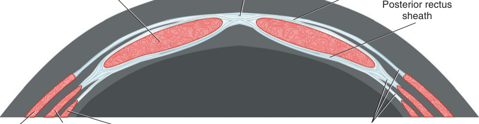
Hoạt động hai bên của cơ thẳng bụng và các cơ bụng chéo làm giảm khoảng cách giữa mỏm kiếm (xiphoid process) và khớp xương mu (pubic symphysis). Tùy vào phân đoạn cơ thể nào ổn định nhất, sự co cơ hai bên của các cơ bụng này có thể gập lồng ngực và cột sống thắt lưng trên, làm khung chậu ngả về sau, hoặc cả hai. Hình 10.15 minh họa động tác ngồi dậy chéo (diagonal sit-up) mà đặt một nhu cầu tương đối lớn lên các cơ bụng chéo. Tuy nhiên, trong động tác ngồi dậy chuẩn trên mặt phẳng đứng dọc, các xu hướng xoay trục và nghiêng bên ngược chiều nhau của nhiều cơ bụng khác nhau được trung hòa bởi các cơ phải và trái đối kháng nhau.
Như đã mô tả trong Chương 9, các trục quay cho mọi vận động của cột sống nằm trong vùng của các khớp liên thân đốt (interbody joints). Vị trí tương đối phía sau của các trục so với thân trang bị cho các cơ bụng, nổi bật nhất là cơ thẳng bụng, một đòn bẩy (leverage) rất thuận lợi để tạo ra mô men gập thân (Hình 10.16). Lưu ý trong Hình 10.16 rằng, ngoại trừ cơ thắt lưng lớn (psoas major), tất cả các cơ đều có một cánh tay đòn (moment arm) để tạo ra mô men ở cả mặt phẳng đứng dọc và mặt phẳng trán.
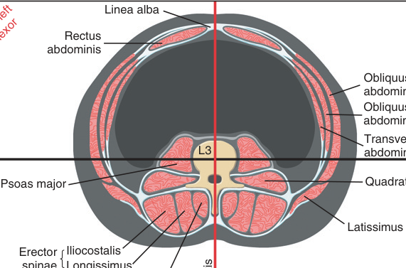
Co một bên, các cơ bụng làm thân nghiêng về một bên (lateral flexion). Các cơ chéo bụng ngoài và trong đặc biệt hiệu quả trong vận động này nhờ đòn bẩy tương đối thuận lợi của chúng (tức là cánh tay đòn dài) (xem Hình 10.16) và, tính theo một cặp, diện tích tiết diện ngang tương đối lớn. Diện tích tiết diện ngang kết hợp của cơ chéo bụng ngoài và trong tại mức khớp nối L4–L5 gần bằng hai lần diện tích của cơ thẳng bụng.
Nghiêng bên của thân thường đòi hỏi sự hoạt hóa của cả cơ gập và cơ duỗi thân. Chẳng hạn, nghiêng bên kháng lực về phía bên phải đòi hỏi sự co của cơ chéo bụng ngoài và trong bên phải, cơ dựng sống (erector spinae) bên phải, và các cơ ngang–gai (transversospinal muscles) bên phải. Sự đồng hoạt (coactivation) này khuếch đại tổng mô men trên mặt phẳng trán đồng thời ổn định thân trong mặt phẳng đứng dọc.
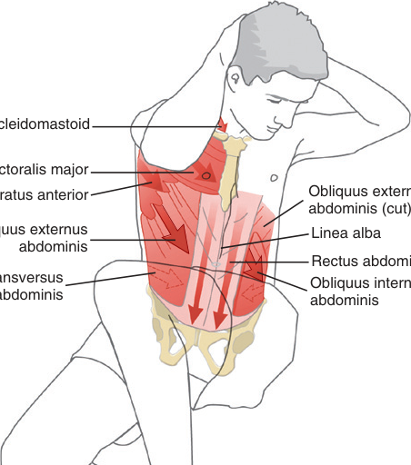
Xa hơn hết, các cơ chéo bụng trong và ngoài là những cơ xoay trục thân hiệu quả nhất. Cơ chéo bụng ngoài là cơ xoay đối bên (contralateral rotator), và cơ chéo bụng trong là cơ xoay cùng bên (ipsilateral rotator). Tiềm năng xoay trục mạnh mẽ của các cơ này phản ánh diện tích tiết diện ngang tương đối lớn và đòn bẩy thuận lợi của chúng (xem Hình 10.3C về chiều dài cánh tay đòn dài của cơ chéo bụng ngoài). Trong lúc xoay trục chủ động theo một hướng nhất định, cơ chéo bụng ngoài ở một bên hoạt động đồng sức với cơ chéo bụng trong ở bên kia. Sự đồng sức chức năng này tạo ra một đường lực chéo cắt qua đường giữa thông qua điểm bám chung của hai cơ vào linea alba (xem các cơ được tô đậm trong Hình 10.15). Do đó, sự co của hai cơ này làm giảm khoảng cách giữa một vai và mào chậu bên đối bên.
Nhiều nghiên cứu điện cơ đồ (electromyographic, EMG) dùng điện cực trong cơ (dây mảnh [fine-wire]) chứng minh mức độ hoạt hóa hai bên nhất định của cơ ngang bụng trong lúc xoay trục. Hơn nữa, đã được chỉ ra rằng trong lúc xoay trục, các sợi giữa và dưới của cơ ngang bụng đồng hoạt vào những thời điểm hơi khác so với các sợi trên. Mặc dù vai trò chính xác của cơ ngang bụng trong xoay trục còn chưa chắc chắn, cơ này dường như hoạt động nhiều hơn như một chất ổn định cho các cơ bụng chéo hơn là một máy tạo mô men xoay trục. Sự hoạt hóa hai bên của cơ ngang bụng có thể ổn định các xương sườn, linea alba, và cân ngực–thắt lưng — những vùng đóng vai trò điểm bám cho các cơ chéo bụng trong hoặc ngoài.
Nói chung, các yêu cầu mô men đặt lên các cơ xoay trục của thân biến thiên đáng kể tùy theo bản chất của hoạt động và vị trí của cơ thể. Yêu cầu mô men tương đối lớn trong các xoay trục công suất cao, chẳng hạn chạy nước rút, đấu vật, và ném đĩa hay ném giáo. Tuy nhiên, yêu cầu có thể rất thấp trong các hoạt động đòi hỏi sự vặn xoắn thân chậm, tương đối không kháng lực khi ở tư thế đứng thẳng, chẳng hạn trong lúc đi trên mặt phẳng bằng. Xoay trục được thực hiện chủ yếu trong mặt phẳng ngang đặt rất ít hoặc không có mô men ngoại sinh do trọng lực gây lên các cơ xoay. Sức cản chính của các cơ, trong trường hợp này, là do quán tính của thân và sức căng thụ động tạo ra bởi việc kéo giãn các cơ đối kháng.
Ở người trưởng thành khỏe mạnh, về trung bình, độ lớn của mô men gập thân cực đại thường nhỏ hơn mô men duỗi thân cực đại. Mặc dù số liệu biến thiên dựa trên giới tính, tuổi, tiền sử đau lưng, và vận tốc góc của thiết bị đo, các tỷ số mô men gập–duỗi xác định theo phương pháp đẳng trưởng cho vùng thân và vùng sọ–cổ nằm trong khoảng từ 0,45 đến 0,77. Mặc dù các cơ gập thân thường sở hữu đòn bẩy lớn hơn cho mô men trên mặt phẳng đứng dọc (xem Hình 10.16), các cơ duỗi thân sở hữu khối lượng lớn hơn và, quan trọng không kém, hướng đứng dọc tổng thể của các sợi cơ lớn hơn. Tiềm năng mô men thường lớn hơn của các cơ duỗi thân phản ánh vai trò chủ đạo của các cơ này trong việc chống lại trọng lực, hoặc là để duy trì tư thế đứng thẳng hoặc là để mang vật trước cơ thể.
TẬP TRUNG ĐẶC BIỆT 10.2 — Vai trò của các cơ duỗi thân với tư cách là các “cộng sự xoay” của các cơ bụng chéo (Role of Trunk Extensors as “Rotational Synergists” to the Oblique Abdominal Muscles)
Các cơ chéo bụng ngoài và trong là những cơ xoay trục thân chính. Các cơ xoay trục thứ cấp gồm cơ lưng rộng (latissimus dorsi) cùng bên, các thành phần chéo hơn của cơ chậu sườn thắt lưng (iliocostalis lumborum) cùng bên, và các cơ ngang–gai bên đối bên. Những cơ xoay trục thứ cấp này cũng là những cơ duỗi thân hiệu quả. Trong một vận động xoay trục mạnh, các cơ duỗi này có thể triệt tiêu hoặc trung hòa tiềm năng gập thân mạnh mẽ của các cơ bụng chéo. Nếu thiếu hành động trung hòa này, một vận động xoay trục dữ dội sẽ tự động kết hợp với gập thân. Các cơ duỗi nói trên cản trở xu hướng gập của các cơ bụng chéo, nhưng đồng thời cũng góp phần vào mô men xoay trục.
Các cơ nhiều đoạn (multifidi) cung cấp một yếu tố đặc biệt quan trọng của sự ổn định duỗi cho vùng thắt lưng trong lúc xoay trục. Bệnh lý liên quan đến các khớp mỏm khớp hoặc các đĩa đệm ở vùng thắt lưng có thể đi kèm với sự yếu, mệt mỏi, hoặc ức chế phản xạ của các cơ này. Nếu thiếu sự hoạt hóa đầy đủ từ cơ nhiều đoạn trong lúc xoay trục, các cơ chéo chỉ phần nào bị chống lại có thể tạo ra một xu hướng gập tinh vi và không mong muốn ở chân cột sống.
Mặc dù cơ chậu–thắt lưng (iliopsoas) và cơ vuông thắt lưng (quadratus lumborum) về mặt giải phẫu không được coi là các cơ của thân, chúng có mối liên hệ chặt chẽ với động học của vùng này.
Cơ chậu–thắt lưng là một cơ lớn gồm hai phần: cơ chậu (iliacus) và cơ thắt lưng lớn (psoas major) (xem Hình 12.27). Giống như hầu hết các cơ gập háng, cơ chậu–thắt lưng được chi phối bởi thần kinh đùi (femoral nerve), một nhánh lớn của đám rối thắt lưng (lumbar plexus). Cơ chậu có điểm bám gần tại hố chậu (iliac fossa) và mặt bên của xương cùng, ngay trước và trên khớp cùng–chậu (sacroiliac joint). Cơ thắt lưng lớn bám gần vào các mỏm ngang của T12 đến L5, gồm cả các đĩa đệm liên đốt sống. Hai cơ hòa nhập với nhau ở xa dưới dây chằng háng để tạo thành một hoặc nhiều gân bám vào mỏm bé (lesser trochanter) và các vùng lân cận của xương đùi.
Cơ chậu–thắt lưng là một cơ dài, tác dụng một ảnh hưởng động lực học mạnh mẽ băng qua thân, cột sống thắt lưng, khớp nối thắt lưng–cùng, và các khớp háng. Đi ngang phía trước khớp háng, cơ này là một cơ gập chủ đạo, kéo xương đùi về phía khung chậu hoặc kéo khung chậu về phía xương đùi. Trong vận động sau, cơ chậu–thắt lưng có thể làm khung chậu ngả về trước, một vận động làm tăng độ ưỡn (lordosis) của vùng thắt lưng (xem lại Hình 9.63A). Với sự hỗ trợ cơ từ các cơ bụng, một sự co hai bên mạnh của cơ chậu–thắt lưng cũng có thể xoay khung chậu và thân nằm phía trên qua các xương đùi cố định. Dựa trên khả năng này, cơ chậu–thắt lưng là một cơ gập thân đáng nể không kém cơ gập háng. Thảo luận này sẽ được tiếp tục ở phần sau của chương và một lần nữa trong Chương 12.
Ở tư thế giải phẫu, cơ thắt lưng lớn thể hiện đòn bẩy cho nghiêng bên của cột sống thắt lưng (xem Hình 10.16). Hầu như không có — nếu có — đòn bẩy cho xoay trục. Do đó, như dự kiến, cơ này hoạt động rất tích cực trong lúc nghiêng bên kháng lực của thân.
Các tác động của cơ chậu–thắt lưng (Actions of the Iliopsoas)
Cơ chậu (Iliacus)
Cơ thắt lưng lớn (Psoas major)
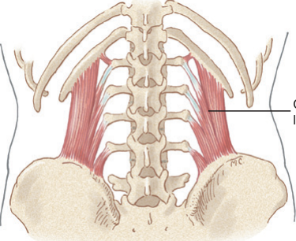
Các tác động của cơ vuông thắt lưng (Actions of the Quadratus Lumborum)
Co thắt đồng thời hai bên (Acting bilaterally)
Co thắt một bên (Acting unilaterally)
Khả năng gập và duỗi của cơ thắt lưng lớn (psoas major) khác nhau tùy theo từng vị trí dọc vùng thắt lưng–cùng. Qua mối nối L5–S1, cơ thắt lưng lớn có một đòn bẩy gập (moment arm for flexion) xấp xỉ 2 cm (Hình 10.17). Vì vậy, cơ thắt lưng lớn là một cơ gập hiệu quả của phần dưới cột sống thắt lưng so với xương cùng. Tuy nhiên, khi đi dần lên phía trên về phía L1, đường lực của cơ thắt lưng lớn chuyển dịch dần về phía sau một chút, nằm xuyên qua hoặc ngay sau các trục xoay trong–ngang (medial-lateral axes of rotation) (xem mặt cắt tại L3 trong Hình 10.16). Vị trí của cơ làm giảm hoặc triệt tiêu khả năng gập hay duỗi của nó. Do đó, cơ thắt lưng lớn không phải là một cơ gập chủ đạo cũng không phải cơ duỗi của vùng thắt lưng, mà là một bộ ổn định theo phương thẳng đứng (vertical stabilizer) quan trọng của vùng này. (Thuật ngữ “bộ ổn định theo phương thẳng đứng” mô tả một chức năng cơ học gồm việc ổn định một vùng của bộ xương trục theo hướng gần thẳng đứng, hay dọc theo trục dài, đồng thời vẫn giữ đường cong sinh lý tự nhiên của vùng ấy.) Do thiếu đòn bẩy hợp lực (net leverage) hiệu quả trên toàn vùng thắt lưng, cơ thắt lưng lớn (tính như một tổng thể) có lẽ chỉ đóng vai trò vừa phải trong việc ảnh hưởng trực tiếp đến mức độ ưỡn thắt lưng, ít nhất là khi đứng thẳng với tư thế lý tưởng. Tuy vậy, cơ chậu–thắt lưng (cũng như mọi cơ gập hái) có thể một cách gián tiếp làm tăng tư thế ưỡn của cột sống thắt lưng bằng cách nghiêng khung chậu về trước qua các khớp hái.
Về mặt giải phẫu, cơ vuông thắt lưng được coi là một cơ thuộc thành bụng sau (posterior abdominal wall). Cơ bám về phía dưới vào dây chằng chậu–thắt lưng (iliolumbar ligament) và mào chậu, và về phía trên vào xương sườn thứ 12 cùng các đầu mỏm ngang chắc nịch của các đốt L1 đến L4 (Hình 10.18). Độ dày tương đối của cơ và vị trí tương đối của nó so với các thân đốt thắt lưng có thể thấy rõ khi quan sát Hình 10.16. Cơ vuông thắt lưng được chi phối bởi các nhánh bụng (ventral rami) của các dây thần kinh sống T12–L3.
Khi co thắt hai bên, cơ vuông thắt lưng là một cơ duỗi của vùng thắt lưng. Khi co thắt một bên, cơ vuông thắt lưng nghiêng bên vùng thắt lưng. Tuy nhiên, tiềm năng xoay trục của cơ vuông thắt lưng có lẽ là cực kỳ ít ỏi.
Trên lâm sàng, khi mô tả vai trò của cơ vuông thắt lưng trong việc đi lại — nhất là ở những người bị liệt hai chi dưới (paraplegia) tại hoặc dưới mức thần kinh L1 — cơ này thường được gọi là “hip hiker” (kẻ nâng hông). Bằng cách nâng (hiking) một bên khung chậu lên, cơ vuông thắt lưng nhấc chi dưới để bàn chân được nhấc khỏi mặt đất trong pha vung chân của việc đi bộ hỗ trợ bằng nẹp (brace-assisted ambulation).
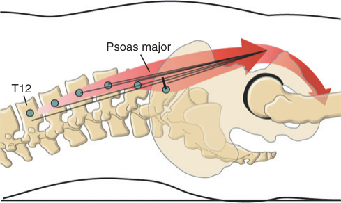
Cơ thắt lưng lớn và cơ vuông thắt lưng chạy gần như thẳng đứng ở hai bên các đốt thắt lưng (xem Hình 10.16). Một cơn co thắt mạnh đồng thời hai bên của các cơ này mang lại sự ổn định thẳng đứng rất tốt cho toàn bộ cột sống thắt lưng, gồm cả mối nối L5–S1. Về mặt lý thuyết, những bài tập làm tăng khả năng kiểm soát chủ ý và thể trạng của các cơ này có thể có ích cho một người bị đau liên quan đến sự mất ổn định của vùng thắt lưng.
Như vậy, cho tới phần này của chương, cuộc trình bày về các cơ thân mình chủ yếu tập trung vào giải phẫu của chúng và, phần lớn, vào các tác động riêng lẻ của từng cơ (Bảng 10.4). Cuộc trình bày sắp tới sẽ chú ý nhiều hơn đến các tương tác chức năng giữa các cơ hoặc giữa các nhóm cơ. Hai chủ đề được khai thác: (1) sự ổn định thân mình dựa trên cơ (muscular-based stability of the trunk), và (2) động học cơ của việc thực hiện một động tác gập bụng (sit-up) tiêu chuẩn.
| Cơ (Muscle) | Gập (Flexion) | Duỗi (Extension) | Nghiêng bên (Lateral Flexion) | Xoay trục† (Axial Rotation†) |
|---|---|---|---|---|
| Cơ thang (Trapezius) | — | XX | XX | XX (CL) |
| Các cơ gai, tính như một nhóm (Spinalis muscles, as a group) | — | XX | X | — |
| Cơ dài nhất ngực (Longissimus thoracis) | — | XXX | XX | — |
| Cơ dài nhất cổ (Longissimus cervicis) | — | XXX | XX | XX (IL) |
| Cơ dài nhất đầu (Longissimus capitis) | — | XXX | XX | XX (IL) |
| Cơ chậu sườn thắt lưng (Iliocostalis lumborum) | — | XXX | XXX | X (IL) |
| Cơ chậu sườn ngực (Iliocostalis thoracis) | — | XXX | XXX | — |
| Cơ chậu sườn cổ (Iliocostalis cervicis) | — | XXX | XXX | XX (IL) |
| Cơ bán gai ngực (Semispinalis thoracis) | — | XXX | X | X (CL) |
| Cơ bán gai cổ (Semispinalis cervicis) | — | XXX | X | X (CL) |
| Cơ bán gai đầu (Semispinalis capitis) | — | XXX | XX | X (CL); chỉ cột sống cổ |
| Các cơ nhiều đoạn (Multifidi) | — | XXX | X | XX (CL) |
| Các cơ xoay (Rotatores) | — | XX | X | XX (CL) |
| Các cơ liên gai (Interspinalis muscles) | — | XX | — | — |
| Các cơ liên mỏm ngang (Intertransversarius muscles) | — | X | XX | — |
| Cơ thẳng bụng (Rectus abdominis) | XXX | — | XX | — |
| Cơ chéo bụng ngoài (Obliquus externus abdominis) | XXX | — | XXX | XXX (CL) |
| Cơ chéo bụng trong (Obliquus internus abdominis) | XXX | — | XXX | XXX (IL) |
| Cơ ngang bụng‡ (Transversus abdominis‡) | — | — | — | — |
| Cơ thắt lưng lớn (Psoas major) | X | X | XX | — |
| Cơ vuông thắt lưng (Quadratus lumborum) | — | XX | XX | — |
*Trừ khi có tuyên bố khác, các tác động mô tả vận động của mặt trên hoặc mặt bên của cơ so với mặt dưới hoặc mặt trong được giữ cố định của chính nó. Các tác động được giả định xảy ra từ tư thế giải phẫu, chống lại một lực kháng bên ngoài. Tiềm năng tương đối của một cơ trong việc vận động hoặc ổn định một vùng được quy ước là X (tối thiểu), XX (vừa phải) hoặc XXX (tối đa), dựa trên đòn bẩy (moment arm), diện tích cắt ngang và hướng sợi cơ; dấu — chỉ tác động không hiệu quả hoặc không có kết luận rõ ràng.
Lực co cơ chủ động cung cấp một cơ chế thiết yếu để ổn định bộ xương trục, gồm cả thân mình. Mặc dù các dây chằng và các mô liên kết khác là một nguồn ổn định quan trọng, chỉ có cơ mới có thể điều chỉnh đồng thời cả độ lớn lẫn thời điểm phát lực. Vai trò căn bản của các cơ thân mình như những bộ ổn định cấu trúc của vùng này trở nên hiển nhiên ngay lập tức khi các cơ ấy bị liệt một phần hoặc hoàn toàn, hoặc hầu như mất hoàn toàn khả năng kiểm soát vận động. Một khiếm khuyết vận động sâu sắc như vậy có thể gặp ở những người bị chấn thương tủy sống thể nặng, loạn dưỡng cơ (muscular dystrophy) hoặc bại não. Trong những trường hợp cực đoan, sự vắng bóng gần như hoàn toàn của sự nâng đỡ cơ có thể, theo thời gian, làm cho cột sống thực sự sụp đổ dưới trọng lượng của thân mình. Sự sụp đổ tư thế (postural collapse) này có thể dẫn tới những dị dạng rất nặng, cản trở thông khí hoặc cản trở việc ngồi thẳng.
Trái với những khiếm khuyết vận động cực đoan của các cơ thân mình nêu trên, những người có hệ thần kinh–cơ hoàn toàn nguyên vẹn vẫn có thể thiếu sức mạnh hoặc khả năng kiểm soát cần thiết ở các cơ thân mình. Tình trạng này, có lẽ liên quan đến tình trạng ít sử dụng hoặc thứ phát sau một tình trạng đau đang hiện hữu hoặc từng có trước đó, có thể gây ra một sự mất ổn định liên đốt sống cô lập và khó nhận thấy. Theo thời gian, sự mất ổn định này (cùng các vi vận động liên đốt sống không mong muốn đi kèm) có thể tạo ứng suất quá mức lên cột sống và các thành tố thần kinh. Mặc dù kịch bản lâm sàng này thường bớt dữ dội hơn rõ ràng so với các ví dụ đã nêu ở trên, sự mất ổn định liên đốt sống có thể gây ra cơn đau cản trở đáng kể các hoạt động hằng ngày. Ví dụ này cùng các ví dụ đã nêu cho thấy sự nâng đỡ hoặc kiểm soát không đầy đủ của các cơ thân mình có thể hiện diện trên một phổ bệnh lý rất rộng, dẫn tới một phổ biểu hiện lâm sàng của sự yếu cơ cũng rộng như vậy.
Sự ổn định thân mình dựa trên cơ thường được gọi là sự ổn định “lõi” (“core” stability). Sự ổn định như vậy bảo đảm một tư thế gần như tĩnh của thân mình ngay cả dưới tác động của các lực ngoài gây mất ổn định. Hãy nghĩ, chẳng hạn, đến làn sóng hoạt hóa cơ trải khắp thân mình khi một người cố đứng hoặc ngồi thẳng trên một chiếc xe buýt hay tàu hỏa đang tăng tốc. Bình thường, các cơ thân mình có thể một cách vô thức ổn định vị trí của thân mình so với môi trường xung quanh và, quan trọng không kém, ổn định từng đoạn sống riêng lẻ trong bộ xương trục. Trong điều kiện lý tưởng, một “lõi” cơ ổn định mang lại tính toàn vẹn cấu trúc cho thân mình, tối ưu hóa sự thẳng hàng tư thế, và hạn chế các vi vận động quá mức — vốn có tiềm năng gây tổn hại — giữa các mối nối liên đốt sống. Cuối cùng, sự ổn định của thân mình còn thiết lập một nền tảng vững chắc để các cơ vận động các chi.
Chương này phân chia các bộ ổn định cơ của thân mình thành hai nhóm giải phẫu. Các bộ ổn định cơ nội tại (intrinsic muscular stabilizers) gồm những cơ tương đối ngắn, nằm sâu và phân khúc, bám chủ yếu trong phạm vi vùng cột sống. Ngược lại, các bộ ổn định cơ ngoại lai (extrinsic muscular stabilizers) gồm những cơ tương đối dài, bám một phần hoặc toàn bộ vào các cấu trúc nằm ngoài vùng cột sống, như sọ, khung chậu, xương sườn và chi dưới.
Các bộ ổn định cơ nội tại của thân mình (Intrinsic Muscular Stabilizers of the Trunk)
Các bộ ổn định cơ nội tại của thân mình gồm nhóm cơ ngang–gai (transversospinal group) và nhóm cơ khối đoạn ngắn (short segmental group). Những cơ nằm sâu và tương đối ngắn này được vẽ một cách rất sơ đồ hóa trong Hình 10.19A. Nhìn chung, các cơ này ổn định cột sống bằng cách kiểm soát sự thẳng hàng chính xác và độ cứng giữa một số lượng tương đối ít các mối nối liên đốt sống trong mỗi thời điểm. Mật độ tương đối cao của các thoi cơ (muscle spindles) cư ngụ trong nhiều cơ phân khúc này làm tăng khả năng tinh chỉnh của chúng.
Các bộ ổn định cơ nội tại của thân mình (Intrinsic Muscular Stabilizers of the Trunk)
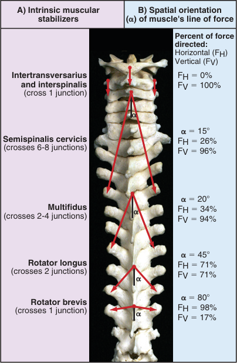
Như chỉ ra trong Hình 10.19B, hướng không gian của đường lực của mỗi cơ (được vẽ bằng góc α) tạo ra một hiệu ứng ổn định đặc thù lên cột sống. Các cơ liên gai và cơ liên mỏm ngang chạy thẳng đứng sinh ra 100% lực của chúng theo hướng thẳng đứng (FV). Ngược lại, cơ xoay ngắn có hướng gần như nằm ngang sinh ra gần 100% lực của nó theo hướng ngang (FH). Tất cả các cơ còn lại sinh ra các lực hướng chéo, ở một góc nào đó giữa 0 và 90 độ. Các cơ này hoạt động như một dãy dây căng giằng ghép cặp hai bên, được định hướng đặc thù để nén ép cũng như kiểm soát lực cắt giữa các mối nối liên đốt sống. Ngoài việc bảo đảm hiệu quả cả sự ổn định thẳng đứng lẫn ngang, một cách tập thể các cơ này còn sinh ra các mô men duỗi, nghiêng bên và xoay trục dọc toàn bộ cột sống. Thiếu sự kiểm soát cơ tinh vi như vậy, cột sống đa đoạn trở nên rất dễ tổn thương trước các đường cong cột sống quá mức, tính di động liên gai quá độ, và, trong một số trường hợp, sự mất ổn định gây đau.
Các bộ ổn định cơ ngoại lai của thân mình (Extrinsic Muscular Stabilizers of the Trunk)
Các bộ ổn định cơ ngoại lai chủ yếu của thân mình gồm các cơ bụng, cơ dựng sống (erector spinae), cơ vuông thắt lưng, cơ thắt lưng lớn và các cơ hái (bằng cách nối vùng thắt lưng–chậu với chi dưới). Những cơ tương đối dài và thường dày này ổn định thân mình bằng cách tạo ra một mối liên kết mạnh và bán cứng giữa sọ, cột sống, khung chậu và chi dưới. Vì nhiều cơ trong số này bắt qua một vùng rộng của cơ thể hoặc thân mình, chúng có lẽ mang lại khả năng kiểm soát tương đối thô đối với sự ổn định thân mình. Thêm vào đó, vì nhiều cơ trong số này sở hữu diện tích cắt ngang và đòn bẩy đáng kể, một cách tập thể chúng cũng là những bộ sinh mô men quan trọng cho thân mình và các khớp hái kề cận.
Các lực ngoài tác động vào phần trên của thân mình (và các chi trên) có thể tạo ra một đòn bẩy phá ổn định đáng kể chống lại các vùng phía đuôi hoặc phía dưới hơn của bộ xương trục. Vì vậy, chức năng ổn định của các cơ ngoại lai đặc biệt quan trọng ở phần dưới của thân mình. Sự mất ổn định mạn tính tại chân cột sống có thể dẫn tới lệch trục tư thế khắp toàn bộ cột sống, cũng như tạo thuận cho các khiếm khuyết khu trú như trượt đốt sống (spondylolisthesis) hoặc thoái hóa các khớp mỏm khớp, khớp liên thân đốt và khớp cùng–chậu thắt lưng.
Các bộ ổn định cơ ngoại lai của thân mình (Extrinsic Muscular Stabilizers of the Trunk)
Để minh họa thêm về vai trò tiềm năng của các bộ ổn định ngoại lai, Hình 10.20 cho thấy một người đang hoạt hóa các bộ ổn định cơ ngoại lai của mình để đáp ứng với một sự xáo trộn ngoài sắp ập tới. Hãy để ý sự tập trung của hoạt động cơ ở vùng dưới của thân mình.
†CL, xoay về phía đối bên (contralateral rotation); IL, xoay về phía cùng bên (ipsilateral rotation).
‡Hoạt động chủ yếu để tăng áp lực trong ổ bụng (intra-abdominal pressure) và, qua các chỗ bám vào cân ngực–thắt lưng, để ổn định vùng thắt lưng. Cũng ổn định các chỗ bám của các cơ bụng bên khác.
Sự hoạt động của cơ thắt lưng lớn (psoas major), cơ vuông thắt lưng (quadratus lumborum), cơ dựng sống (erector spinae) và các cơ bụng đem lại sự vững chắc đáng kể cho vùng thắt lưng–chậu, ở cả ba mặt phẳng. Sự hoạt động mạnh của các cơ bụng còn giúp tăng áp lực trong ổ bụng — một cơ chế được cho là tạo tác dụng vững chắc cho toàn bộ vùng thắt lưng. Đặc biệt, cơ ngang bụng (transversus abdominis) nằm theo hướng ngang tạo hiệu ứng nẹp vòng quanh cho toàn vùng thắt lưng dưới, bao gồm cả các khớp cùng–chậu (sacroiliac joints).
Sự hoạt động của các cơ bụng cũng giúp giữ vững khung chậu trước sức kéo của các cơ duỗi như cơ dựng sống, cơ vuông thắt lưng và cơ mông lớn (gluteus maximus). Khi khung chậu và phần cuối phía đuôi của cột sống được giữ vững chắc, các lực tác động lên thân mình được truyền hiệu quả qua các khớp cùng–chậu, qua các khớp háng, và cuối cùng qua các chi dưới. Những bài tập nhằm tăng tính vững chắc cơ cho vùng thắt lưng dưới và thân dưới về lý tưởng nên gồm các hoạt động đặt thử thách cho cả các cơ thân mình lẫn cơ háng, ở cả ba mặt phẳng vận động.
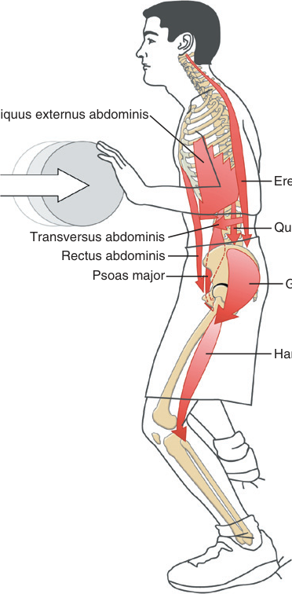
Để khép lại, cần chỉ ra rằng dù các bộ ổn định cơ ngoại lai và nội tại đã được trình bày riêng lẻ, trên thực tế chức năng của chúng có sự chồng lấn và dư thừa rất lớn. Điều này có thể cảm nhận được bằng cách liên tưởng chồng ghép các mũi cơ được vẽ trong cả Hình 10.19 và Hình 10.20. Ở trạng thái khỏe mạnh lý tưởng, tất cả các cơ của thân mình đều góp phần giữ vững thân mình, cả trong điều kiện tĩnh lẫn động. Tuy nhiên, chiến lược cụ thể mà mỗi cơ sử dụng lại khác nhau, tùy thuộc vào các yếu tố như độ sâu, diện tích mặt cắt ngang, hình thái học, hướng không gian và chỗ bám xương hoặc mô liên kết của cơ đó.
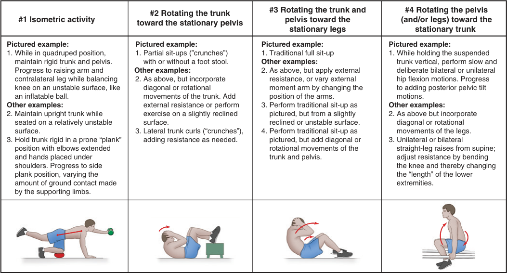
Hầu hết các hoạt động chức năng toàn thân đòi hỏi sự hoạt hóa đồng thời của cả các cơ thân mình lẫn cơ háng. Ví dụ, hãy nghĩ đến các vận động kết hợp của thân mình và háng khi một người vung gậy bóng chày, với tay chạm sàn, hoặc xúc tuyết hay đất. Để giới thiệu mối quan hệ hiệp đồng quan trọng này, đoạn thảo luận sau đây tập trung vào các tác động cơ khi thực hiện một vận động gập bụng toàn phần chuẩn.
Ngoài việc là một hoạt động chức năng rất quan trọng, các thành phần của động tác gập bụng toàn phần thường được thực hiện như một cách để tăng cường các cơ bụng. Mục tiêu chung của bài tập kháng lực là tăng sức mạnh và khả năng kiểm soát của các cơ này, thường như một cách để cải thiện tính vững chắc tổng thể của thân mình. Theo nghĩa rất rộng, các chiến lược dùng để tăng cường cơ bụng thường rơi vào một trong bốn nhóm (Hình 10.21). Ở cột 1 của Hình 10.21, các cơ bụng co để tạo lực gần như đẳng tễ nhằm duy trì khoảng cách tương đối không đổi giữa mũi ức (xiphoid process) và khung chậu trước. Ở các cột 2 đến 4, các cơ bụng co để thu ngắn khoảng cách giữa mũi ức và khung chậu trước. (Bằng cách co kiểu lệch tâm (eccentrically), chính các cơ này cũng có thể được đặt thử thách để kháng chậm lại sự gia tăng khoảng cách giữa hai vùng cơ thể này.)
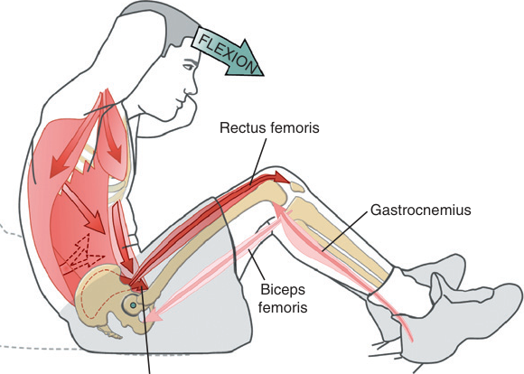
Một động tác gập bụng toàn phần thực hiện ở tư thế gập gối có thể được chia thành hai giai đoạn. Giai đoạn gập thân mình kết thúc khi cả hai xương bả vai được nhấc khỏi thảm (Hình 10.22A). Giai đoạn gập háng sau đó bao gồm thêm 70 đến 90 độ gập thắt lưng kết hợp với gập háng kiểu khung chậu trên xương đùi (pelvic-on-femoral (hip) flexion) (xem Hình 10.22B).
Như được thể hiện trong Hình 10.22A, giai đoạn gập thân mình được thúc đẩy chủ yếu bằng sự co của các cơ bụng, nổi bật nhất là cơ thẳng bụng (rectus abdominis). Sự co của các cơ này gập thân mình quanh một trục xoay trong–ngoài được ước lượng nằm gần chỗ nối ngực–thắt lưng (thoracolumbar junction). Sự gập thân mình thường đi kèm một xoay (ngửa) khung chậu về sau, nhờ đó làm phẳng cột sống thắt lưng. Trong giai đoạn này, mức điện cơ đồ (EMG) của các cơ gập háng tương đối thấp, bất kể vị trí của háng và gối. Việc gập háng một phần trước khi thực hiện bài tập giải phóng sức căng thụ động trong các cơ gập háng, đồng thời làm tăng sức căng thụ động trong cơ mông lớn. Các tác động kết hợp này có thể hỗ trợ các cơ bụng trong việc duy trì khung chậu đã xoay về sau.
Cuối cùng, như minh họa trong Hình 10.22A, cơ lưng rộng (latissimus dorsi), do đi ngang phía trước cột sống ngực trên, có thể hỗ trợ gập vùng lồng ngực này. Ngoài ra, đầu ức của cơ ngực lớn (pectoralis major) có thể hỗ trợ đưa các chi trên tiến về phía khung chậu.
Trong giai đoạn gập háng của động tác gập bụng, khung chậu và thân mình xoay về phía các xương đùi tương đối cố định. Giai đoạn gập háng được đánh dấu bằng sự co chủ động mạnh hơn của các cơ gập háng, theo hướng từ gốc đến ngọn. Mặc dù bất kỳ cơ gập háng nào cũng có thể hỗ trợ vận động này, Hình 10.22B cho thấy cơ chậu (iliacus) và cơ thẳng đùi (rectus femoris) là những thành phần hoạt động. Mức điện cơ đồ tương đối của cơ chậu, cơ may (sartorius) và cơ thẳng đùi tăng lên đáng kể khi các chân được giữ chủ động cố định vào mặt nền chống đỡ. Gót giày được thể hiện đang bị kéo ấn vào mặt nền chống đỡ như một cách để cố định các chi dưới so với khung chậu và thân mình. Tác động giữ vững này tạo ra sự hoạt hóa tương đối khiêm tốn ở cơ nhị đầu đùi (biceps femoris) — một cơ khoeo tiêu biểu, và sự hoạt hóa vừa phải ở cơ bụng chân (gastrocnemius). Điều thú vị là sự hoạt hóa của bất kỳ cơ khoeo hai khớp nào cũng phải thuộc kiểu lệch tâm, bởi khung chậu đồng thời đang xoay theo hướng gập háng.
TẬP TRUNG ĐẶC BIỆT 10.3 — So sánh bài tập “curl-up” bụng với gập bụng toàn phần chuẩn (Comparing the Abdominal “Curl-up” Exercise with the Standard Full Sit-up)
Giai đoạn gập thân mình diễn ra sớm của động tác gập bụng toàn phần (được thể hiện trong Hình 10.22A) có nhiều điểm tương đồng với bài tập “curl-up” hay “crunch” phổ biến, và thường được khuyến nghị, nhằm tăng cường các cơ bụng. Cả bài curl-up lẫn gập bụng toàn phần đều đặt những yêu cầu đáng kể và đầy thách thức trên lâm sàng cho toàn bộ các cơ bụng. Tuy nhiên, có những khác biệt: bài curl-up đặt yêu cầu tương đối lớn hơn lên cơ thẳng bụng, trong khi gập bụng toàn phần đặt yêu cầu tương đối lớn hơn lên hệ cơ chéo. Hơn nữa, khi so sánh với động tác gập bụng toàn phần (gập gối), bài tập curl-up (như được thể hiện trong Hình 10.22A) chỉ đặt những yêu cầu rất ít lên các cơ gập háng. Có lẽ khác biệt đáng chú ý nhất về mặt lâm sàng giữa hai bài tập là việc bài tập curl-up chỉ gồm sự gập thắt lưng khiêm tốn, có lẽ dưới khoảng 5 độ. Mức này thấp hơn nhiều so với mức gập thắt lưng đi kèm một động tác gập bụng toàn phần (gập gối). Sự gập thắt lưng trong lúc thực hiện gập bụng toàn phần có thể tạo áp lực lớn hơn lên các đĩa đệm (xem Chương 9). Do đó, bài tập curl-up có thể phù hợp hơn gập bụng toàn phần ở những người có tiền sử bệnh lý đĩa đệm. Biện pháp phòng ngừa này có vẻ thận trọng đúng đắn, đặc biệt khi xét rằng bài tập curl-up vẫn đặt những yêu cầu đáng kể lên các cơ bụng.
Trục xoay trong giai đoạn gập háng của động tác gập bụng toàn phần cuối cùng chuyển dịch đến các khớp háng. Tùy theo chiến lược vận động cụ thể, các cơ bụng có thể tiếp tục co mạnh hoặc gần như hoạt động đẳng tễ cho đến khi hoàn tất động tác gập bụng. Tuy nhiên, sự hoạt hóa của chúng không góp phần vào gập háng (kiểu khung chậu trên xương đùi); ngược lại, các cơ này giữ vùng ngực–thắt lưng đang gập bám chặt vào khung chậu đang xoay về trước.
Người có các cơ bụng suy yếu vừa phải thường thể hiện một tư thế đặc trưng khi cố thực hiện động tác gập bụng toàn phần. Trong suốt lần thử, các cơ gập háng chiếm ưu thế trong hoạt động. Hệ quả là mức gập ngực–thắt lưng tối thiểu và gập háng kiểu khung chậu trên xương đùi quá mức và diễn ra “sớm”. Sự co chiếm ưu thế của các cơ gập háng làm trầm trọng thêm độ ưỡn thắt lưng (lumbar lordosis), đặc biệt trong lúc khởi động động tác.
Các phần sau mô tả giải phẫu và các tác động riêng của những cơ chỉ hoạt động trong vùng sọ–cổ. Hệ cơ được chia thành hai bộ: (1) các cơ của vùng sọ–cổ trước–bên và (2) các cơ của vùng sọ–cổ sau (được tổng quan trong Bảng 10.1).
Hình 10.23 đóng vai trò giới thiệu về các tác động tiềm năng của nhiều cơ trong vùng sọ–cổ. Bản minh họa mô tả các cơ được chọn dưới dạng cơ gập hoặc duỗi, hoặc cơ nghiêng bên phải hoặc trái, tùy theo chỗ bám của chúng so với các trục xoay đi qua các khớp chẩm–đốt đội. Mặc dù Hình 10.23 chỉ mô tả các tác động cơ tại khớp chẩm–đốt đội, vị trí tương đối của các cơ cung cấp một hướng dẫn hữu ích để hiểu các tác động tại các khớp khác trong vùng sọ–cổ. Hình này được nhắc đến xuyên suốt các phần sắp tới.
Các cơ của vùng sọ–cổ trước–bên được liệt kê trong Hộp 10.4. Ngoại trừ cơ ức đòn chũm (sternocleidomastoid), được chi phối chủ yếu bởi dây thần kinh phụ (spinal accessory nerve, dây não XI), các cơ trong vùng này được chi phối bởi các dây thần kinh nhỏ không có tên, phân nhánh từ các nhánh bụng của đám rối cổ.
Số liệu cánh tay đòn (moment arm) của nhiều cơ trong vùng sọ–cổ được liệt kê như một tài liệu tham khảo trong Phụ lục III, Phần D, Hình III.3.
HỘP 10.4 — Các cơ vùng trước–bên của vùng sọ–cổ (Muscles of the Anterior-Lateral Craniocervical Region)
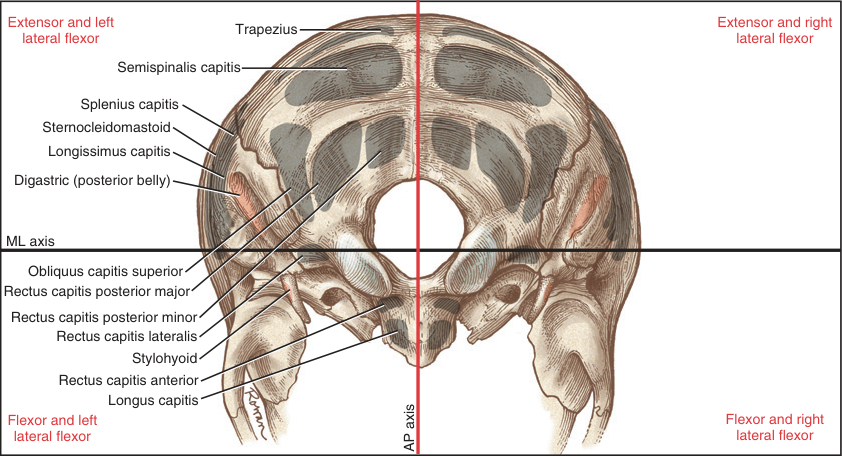
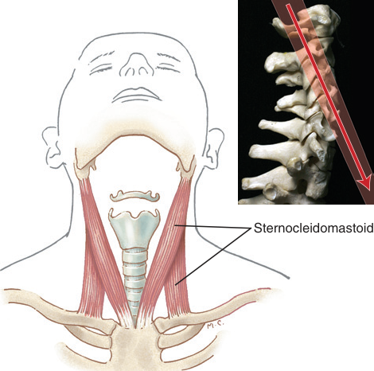
Cơ ức đòn chũm (Sternocleidomastoid)
Cơ ức đòn chũm là một cơ thường nổi bật, nằm nông ở mặt trước của cổ. Phía dưới, cơ bám bằng hai đầu: đầu trong (đầu ức) và đầu ngoài (đầu đòn) (Hình 10.24). Từ chỗ bám này, cơ đi chéo lên qua cổ để bám vào sọ, cụ thể là giữa mỏm chũm của xương thái dương và nửa ngoài của đường gai trên (superior nuchal line).
Co đơn bên, cơ ức đòn chũm là một cơ nghiêng bên chi phối và một cơ xoay trục đối bên chủ đạo của vùng sọ–cổ. Khi co hai bên, một cặp cơ ức đòn chũm có thể gập hoặc duỗi vùng sọ–cổ tùy theo vùng cụ thể. Nhận thấy rõ từ hình chiếu bên của cột sống cổ ở tư thế trung tính, đường lực của cơ ức đòn chũm phải đi chéo ngang qua cổ (xem Hình 10.24, hình chèn). Phía dưới khoảng mức C3, cơ ức đòn chũm băng qua cách xa về phía trước của các trục quay trong–ngoài; ngược lại, phía trên C3, cơ ức đòn chũm băng qua ngay phía sau các trục quay trong–ngoài. Khi co cùng nhau, các cơ ức đòn chũm cung cấp một mô men gập mạnh cho cột sống cổ giữa và cổ dưới, và một mô men duỗi tối thiểu cho cột sống cổ trên, gồm cả khớp đội–trục và khớp chẩm–đốt đội. Đáng lưu ý rằng hoạt động kết hợp trên mặt phẳng đứng dọc này thuận lợi cho tư thế đầu về trước (đưa sọ ra trước) (xem lại Chương 9 và Hình 9.47A).
Mô hình hóa trên máy tính chỉ ra rằng tiềm năng mô men trên mặt phẳng đứng dọc của các vùng khác nhau của cơ ức đòn chũm chịu ảnh hưởng mạnh từ tư thế ban đầu của vùng sọ–cổ. Chủ yếu do những thay đổi của cánh tay đòn, chẳng hạn, tư thế gập của cột sống cổ giữa và cổ dưới làm gần như gấp đôi tiềm năng mô men gập của cơ ở vùng này. Điều này trở nên đặc biệt đáng lưu ý ở những người đã có tư thế đầu về trước rõ rệt. Vì tư thế này tạo ra mức gập lớn hơn ở vùng cổ giữa và cổ dưới, nó có thể duy trì kéo dài những cơ chế sinh học gây ra tư thế đầu về trước.
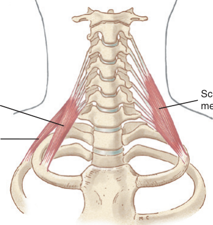
Các Cơ Bậc Thang (Scalenes)
Các cơ bậc thang bám giữa các củ của các mỏm ngang của các đốt sống cổ giữa đến cổ dưới và hai xương sườn đầu tiên (Hình 10.25). (Nói thêm, gốc Latin hoặc Hy Lạp của từ scalene chỉ một tam giác có ba cạnh không bằng nhau.) Chỗ bám cụ thể của các cơ này được liệt kê trong Phụ lục III, Phần C. Đám rối cánh tay (brachial plexus) đi ngang giữa cơ bậc thang trước và cơ bậc thang giữa. Phì đại, co thắt hoặc độ cứng quá mức của các cơ này có thể chèn ép đám rối cánh tay và gây nên các rối loạn vận động và cảm giác ở chi trên.
Chức năng của các cơ bậc thang phụ thuộc vào chỗ bám xương nào được cố định nhiều nhất. Khi cột sống cổ được ổn định tốt, các cơ bậc thang nâng các xương sườn để hỗ trợ hít vào trong lúc thở. Ngược lại, khi hai xương sườn đầu tiên được ổn định tốt, sự co của các cơ bậc thang làm di chuyển cột sống cổ.
Co đơn bên, các cơ bậc thang nghiêng bên cột sống cổ. Cơ bậc thang trước, xuất phát từ vùng trước–ngoài của xương sườn thứ nhất, có cánh tay đòn lớn nhất trong tất cả các cơ bậc thang cho hoạt động này, chỉ đứng sau các sợi hướng sọ của cơ ức đòn chũm. Tiềm năng xoay trục bị hạn chế ở tất cả các cơ bậc thang vì đường lực trung bình của chúng gần như xuyên qua trục quay đứng dọc. Số ít ấn phẩm hiện có về chủ đề này cho rằng, nhìn chung, các cơ bậc thang có một chức năng xoay trục cùng bên rất nhẹ và tầm ngắn khi được hoạt hóa từ tư thế giải phẫu. Tuy nhiên, tiềm năng xoay trục toàn phần của các cơ này có lẽ phụ thuộc vào tư thế tổng thể của vùng và, quan trọng hơn nữa, vào tư thế xuất phát mà từ đó các cơ co. Có vẻ như một chức năng quan trọng của các cơ bậc thang là khả năng đưa vùng sọ–cổ trở về vị trí gần trung tính từ một vị trí đã xoay trước đó. Chức năng toàn cục hơn này, và có lẽ là chức năng chủ yếu, có thể bị bỏ qua khi tư thế trung tính (giải phẫu) được dùng làm điểm xuất phát để phân tích hoạt động của các cơ.
Khi co hai bên, các cơ bậc thang trước có cánh tay đòn hạn chế để gập cột sống cổ. Hoạt động hai bên của các cơ này nhiều khả năng liên quan đến thông khí (như đã mô tả trước đó) và việc cung cấp sự ổn định cho vùng cổ. Chỗ bám cổ của cả ba cơ bậc thang tách thành nhiều bó cơ riêng lẻ (xem Hình 10.25). Giống như một hệ dây giăng giữ ổn định một ăng-ten lớn, các cơ bậc thang cung cấp sự ổn định hai bên và theo chiều đứng tuyệt vời cho cột sống cổ giữa và cổ dưới. Việc kiểm soát tinh của vùng sọ–cổ trên phần lớn là trách nhiệm của những cơ ngắn hơn, chuyên biệt hơn, như cơ thẳng đầu trước và các cơ dưới chẩm (được thảo luận phía sau).
Cơ Dài Cổ và Cơ Dài Đầu (Longus Colli and Longus Capitis)
Cơ dài cổ và cơ dài đầu nằm sâu dưới các tạng cổ (khí quản và thực quản), ở hai bên trụ cột sống cổ (Hình 10.26). Các cơ này hoạt động như một dây chằng dọc trước động, cung cấp một yếu tố chủ động cho sự ổn định dọc của vùng.
Cơ dài cổ gồm nhiều bó cơ bám sát vào các mặt trước của ba đốt sống ngực trên và toàn bộ các đốt sống cổ. Cơ phân đốt này đi lên dọc vùng cổ qua nhiều chỗ bám giữa các thân đốt sống, các củ trước của các mỏm ngang và cung trước của đốt đội. Cơ dài cổ là cơ duy nhất bám hoàn toàn vào mặt trước của trụ cột sống. So với các cơ bậc thang và cơ ức đòn chũm, cơ dài cổ là một cơ tương đối mỏng. Các sợi trước hơn của cơ dài cổ gập vùng cổ, làm giảm độ ưỡn cổ. Các sợi ngoài hơn hoạt động phối hợp với các cơ bậc thang để ổn định dọc cho vùng.
Cơ dài đầu xuất phát từ các củ trước của các mỏm ngang của các đốt sống cổ giữa đến cổ dưới và bám vào phần nền của xương chẩm (xem Hình 10.23). Hoạt động chính của cơ dài đầu là gập và ổn định vùng sọ–cổ trên. Nghiêng bên là hoạt động thứ cấp.
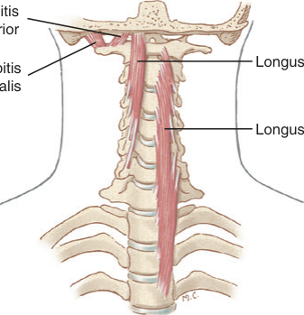
HỘP 10.5 — Các Cơ Vùng Sọ–Cổ Sau (Muscles of the Posterior Craniocervical Region)
Cơ Thẳng Đầu Trước và Cơ Thẳng Đầu Bên (Rectus Capitis Anterior and Rectus Capitis Lateralis)
Cơ thẳng đầu trước và cơ thẳng đầu bên là hai cơ ngắn, nằm sâu, xuất phát từ các mỏm ngang thuôn dài của đốt đội (C1) và bám vào mặt dưới của xương chẩm (xem Hình 10.26). Cơ thẳng đầu bên bám vào phía ngoài của lồi cầu chẩm; còn cơ thẳng đầu trước, nhỏ hơn trong hai cơ thẳng đầu, bám ngay phía trước lồi cầu chẩm (xem Hình 10.23).
Các hoạt động của cơ thẳng đầu trước và cơ thẳng đầu bên bị giới hạn ở khớp chẩm–đốt đội; mỗi cơ kiểm soát một trong hai bậc tự do của khớp (xem Chương 9). Cơ thẳng đầu trước là một cơ gập, và cơ thẳng đầu bên là một cơ nghiêng bên.
Các cơ của vùng sọ–cổ sau được liệt kê trong Hộp 10.5. Chúng được thần kinh hóa bởi các nhánh lưng (dorsi rami) của các dây thần kinh sống cổ.
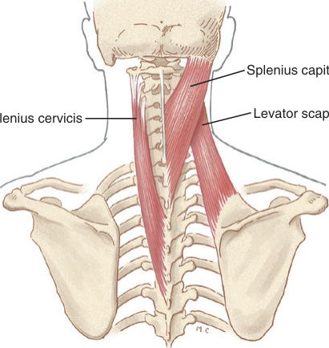
Cơ Tàn Nhãn Cổ và Cơ Tàn Nhãn Đầu (Splenius Cervicis and Capitis)
Cơ tàn nhãn cổ và cơ tàn nhãn đầu là một cặp cơ dài và mỏng, được đặt tên theo sự giống với một miếng băng (từ tiếng Hy Lạp splenion, nghĩa là băng đắp) (Hình 10.27). Theo cặp, các cơ tàn nhãn xuất phát từ nửa dưới của dây chằng gáy và các mỏm gai của C7 đến T6, ngay sâu dưới các cơ thang. Cơ tàn nhãn đầu bám vào xương chẩm, ngay dưới cơ ức đòn chũm (xem Hình 10.23). Cơ tàn nhãn cổ bám vào các củ sau của các mỏm ngang của C1 đến C3. Phần lớn chỗ bám cổ này được dùng chung với các chỗ bám của cơ nâng vai.
Co đơn bên, các cơ tàn nhãn thực hiện nghiêng bên và xoay trục cùng bên của đầu và cột sống cổ. Dựa trên diện tích mặt cắt ngang lớn hơn và hướng sợi chéo hơn, cơ tàn nhãn đầu, vượt trội hơn hẳn, là cơ xoay trục chi phối. Co hai bên, các cơ tàn nhãn duỗi vùng sọ–cổ trên.
Các Cơ Dưới Chẩm (Suboccipital Muscles)
Các cơ dưới chẩm gồm bốn cặp cơ nằm rất sâu trong cổ, ngay nông so với các khớp chẩm–đốt đội và khớp đội–trục (Hình 10.28). Những cơ tương đối ngắn nhưng dày này bám giữa đốt đội, đốt trục và xương chẩm. (Chỗ bám cơ cụ thể của chúng được liệt kê trong Phụ lục III, Phần C.)
Các cơ dưới chẩm không dễ sờ nắm được. Chúng nằm sâu dưới cơ thang trên, nhóm cơ tàn nhãn và cơ bán gai đầu (xem Hình 10.23). Phối hợp với cơ thẳng đầu trước và cơ thẳng đầu bên, các cơ dưới chẩm chuyên trách việc cung cấp sự kiểm soát chính xác đối với các khớp chẩm–đốt đội và khớp đội–trục. Mức kiểm soát này thiết yếu cho việc định vị tối ưu của nhiều giác quan đặc biệt liên quan đến vùng sọ–cổ. Mật độ tương đối lớn của các thoi cơ bên trong các cơ này cũng gợi ý một vai trò quan trọng trong việc cung cấp tín hiệu thần kinh về vị trí và tốc độ vận động của đầu, qua đó góp phần gián tiếp vào thăng bằng, sự cân bằng và phối hợp mắt–đầu.
Thú vị là, như được chỉ ra trong Hình 10.29, mỗi cơ dưới chẩm (cộng với mỗi cơ thẳng đầu ngắn) có một mức kiểm soát và sự chi phối riêng đối với các khớp của vùng sọ–cổ trên.
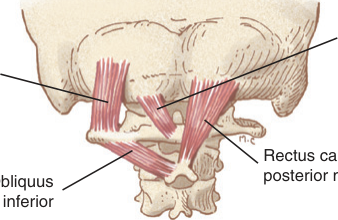
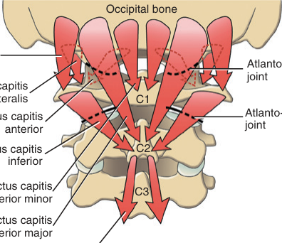
Gần 30 cặp cơ xuyên qua vùng sọ–cổ. Trong số này có những cơ chỉ tác động trong riêng vùng sọ–cổ (Hình 10.29 và Bảng 10.5), cộng với những cơ được xếp vào nhóm cơ thân mình phía sau nhưng cũng xuyên qua vùng sọ–cổ (ví dụ, cơ thang và cơ dài nhất đầu).
Phần này nêu bật những tương tác chức năng giữa các cơ xuyên qua vùng sọ–cổ trong hai hoạt động: (1) ổn định vùng sọ–cổ và (2) sản sinh các vận động của đầu và cổ nhằm tối ưu hóa chức năng của các hệ thị giác, thính giác và khứu giác. Dù các cơ này còn có nhiều tương tác chức năng khác, hai hoạt động này cung cấp một khuôn khổ để mô tả những nguyên lý động tác học then chốt liên quan đến vùng quan trọng này của cơ thể.
Các cơ xuyên qua vùng sọ–cổ chiếm phần lớn khối cơ của cổ, nhất là ở những vùng bên và phía sau so với các đốt sống cổ. Khi được kích hoạt mạnh, khối cơ này có tác dụng bảo vệ tạng cổ và mạch máu, các đĩa đệm liên đốt, các khớp mỏm khớp và các mô thần kinh.
Các bài tập kháng lực hay còn gọi là bài tập “ổn định” thường được các vận động viên tham gia các môn thể thao đối kháng thực hiện như một biện pháp làm phì đại khối cơ này. Tuy nhiên, riêng sự phì đại chưa chắc đã ngăn ngừa được chấn thương cổ. Ví dụ, số liệu về cơ sinh học của chấn thương roi vọt cho thấy thời gian cần thiết để phản ứng với một chấn thương sắp xảy đến và sinh ra một lực ổn định đáng kể có thể vượt quá thời gian của chính sự kiện roi vọt. Vì lý do này, vận động viên cần lường trước tình huống có khả năng gây hại và cho khối cơ cổ co lại trước lúc va chạm. Thời điểm co cơ dường như quan trọng không kém độ lớn của lực cơ đối với việc bảo vệ cổ.
Ngoài việc bảo vệ cổ, các lực do cơ sinh ra còn là nguồn chủ yếu của sự ổn định thẳng đứng cho vùng sọ–cổ. “Tải trọng tới hạn” của cột sống cổ (tức tải trọng nén tối đa mà cổ, khi không được các cơ nâng đỡ, có thể chịu đựng trước khi bị oằn) nằm trong khoảng từ 10,5 đến 40 N (từ 2,4 đến 9 pound). Đáng kinh ngạc là con số này còn thấp hơn cả trọng lượng thực của đầu. Sự tương tác phối hợp của các cơ vùng sọ–cổ sinh ra những lực mà, tính trung bình, hầu như đi xuyên qua trục xoay tức thời tại mỗi mối nối liên đốt sống. Bằng cách đi qua hoặc sát những trục đa điểm này, các lực đó nén ép các đoạn đốt sống lại với nhau, nhờ đó ổn định chúng mà không gây oằn. Độ lớn của các lực nén sinh ra dọc vùng sọ–cổ là khá cao — gần gấp ba lần trọng lượng đầu trong lúc kích hoạt cơ ở mức thấp, chỉ đủ để giữ thăng bằng cho đầu khi đứng thẳng, và tới 23 lần trọng lượng đầu (hay 1,7 lần trọng lượng cơ thể) khi kích hoạt cơ hết mức.
TẬP TRUNG ĐẶC BIỆT 10.4 — Các cơ chuyên biệt kiểm soát khớp đội–trục và khớp chẩm–đốt đội: một ví dụ về việc hiệu chỉnh tinh sự kết cặp cột sống cổ (Specialized Muscles That Control the Atlanto-axial and Atlanto-occipital Joints: An Example of Fine-Tuning of Cervical Spinal Coupling)
Các cơ chuyên biệt hóa cao được liệt kê trong Hình 10.29 thực hiện sự kiểm soát tinh đối với các vận động của vùng sọ–cổ trên. Một lợi ích của sự kiểm soát này liên quan đến kiểu kết cặp cột sống thường được biểu hiện trong vùng cổ. Như đã mô tả trong Chương 9, một kiểu kết cặp cột sống cùng bên tồn tại ở vùng cổ giữa và cổ dưới, giữa các vận động xoay trục và nghiêng bên. Xoay trục, vốn phát sinh chủ yếu từ hướng của các mặt khớp trong các khớp mỏm khớp, có liên quan về mặt cơ học với mức nghiêng bên cùng bên nhẹ, và ngược lại. Tuy vậy, sự biểu hiện của kiểu kết cặp này có thể bị che lấp bởi tác động của các cơ chuyên biệt kiểm soát khớp chẩm–đốt đội và khớp đội–trục. Ví dụ, hãy xét trường hợp xoay trục sang phải của vùng sọ–cổ. Để mắt vẫn nhìn ngang bằng suốt quá trình xoay trục, chẳng hạn, cơ thẳng đầu bên trái sinh ra một mô men nghiêng bên trái nhẹ tác động lên đầu. Tác động cơ này bù đắp khuynh hướng của đầu nghiêng về bên phải cùng với phần còn lại của vùng cổ trong lúc xoay trục sang phải. Tương tự, việc nghiêng bên sang phải của vùng cổ giữa đến dưới (vốn kết cặp với mức xoay trục phải nhẹ) có thể đi kèm một mô men xoay trục trái nhẹ để bù trừ, do cơ chéo đầu dưới tác động lên đầu. Trong cả hai ví dụ, các tác động cơ cho phép đầu và mắt quan sát, cố định thị giác vào một vật chính xác hơn.
Phần lớn sự ổn định bằng cơ của vùng sọ–cổ được thực hiện bởi các cơ phân đoạn tương đối ngắn, chẳng hạn các cơ nhiều đoạn cổ (cervical multifidi) tương đối dày. Các cơ xoay, cơ dài cổ và cơ dài đầu, cùng các cơ liên gai cung cấp thêm sự ổn định. Nhìn chung, các sợi cơ tương đối ngắn và nhiều chỗ bám xương của nhóm cơ này tạo ra một sự kiểm soát tinh vi và phối hợp đối với độ ổn định trong vùng. Sự ổn định này được củng cố thêm bởi những cơ khác dài hơn và điển hình dày hơn nhiều, gồm các cơ bậc thang, cơ ức đòn chũm, cơ nâng vai, cơ bán gai đầu và cơ bán gai cổ, và cơ thang. Khi cần, các cơ này tạo thành một hệ dây căng giằng (guy-wire system) rộng khắp và chắc khỏe bảo đảm sự ổn định thẳng đứng, nổi bật nhất trên các mặt phẳng trán và mặt phẳng đứng dọc. Hình 10.30A làm nổi bật một nhóm cơ mẫu hoạt động như những dây căng giằng nhằm duy trì sự thẳng hàng trước–sau lý tưởng xuyên suốt vùng sọ–cổ. Trong điều kiện lý tưởng, sự đồng co của các cơ gập và cơ duỗi tạo ra sự đối trọng, và theo đó ổn định thẳng đứng, cho vùng. Lưu ý rằng các cơ được vẽ trong Hình 10.30A được neo phía dưới vào nhiều cấu trúc khác nhau: xương ức, xương đòn, các xương sườn, xương bả vai và cột sống. Chính những cấu trúc xương này lại phải được ổn định bởi các cơ khác, chẳng hạn cơ thang dưới và cơ dưới đòn, để giữ cố định, tương ứng, xương bả vai và xương đòn.
| Cơ (Muscle) | Gập (Flexion) | Duỗi (Extension) | Nghiêng bên (Lateral Flexion) | Xoay trục† (Axial Rotation†) |
|---|---|---|---|---|
| Cơ ức đòn chũm (Sternocleidomastoid) | XXX | X‡ | XXX | XXX (CL) |
| Cơ bậc thang trước (Scalenus anterior) | X | — | XXX | X (IL) |
| Cơ bậc thang giữa (Scalenus medius) | — | — | XX | X (IL) |
| Cơ bậc thang sau (Scalenus posterior) | — | — | XX | X (IL) |
| Cơ dài cổ (Longus colli) | XX | — | X | — |
| Cơ dài đầu (Longus capitis) | XX | — | X | — |
| Cơ tàn nhãn đầu (Splenius capitis) | — | XXX | XX | XXX (IL) |
| Cơ tàn nhãn cổ (Splenius cervicis) | — | XXX | XX | XX (IL) |
*Các tác động được giả định diễn ra từ tư thế giải phẫu (trung tính), chống lại một lực cản bên ngoài. Tiềm năng tương đối của một cơ trong việc vận động hay ổn định một vùng được chấm điểm X (tối thiểu), XX (trung bình) hoặc XXX (tối đa) dựa trên cánh tay đòn (đòn bẩy), diện tích mặt cắt ngang và hướng sợi cơ; dấu — chỉ không có tác động hiệu quả hoặc kết luận được. (Chú thích gắn dấu * trong bảng.)
†CL, xoay trục bên đối bên (contralateral rotation); IL, xoay trục cùng bên (ipsilateral rotation). ‡Các phần trên của cơ ức đòn chũm duỗi vùng cổ trên, khớp đội–trục và khớp chẩm–đốt đội. (Các chú thích gắn dấu † và ‡ trong bảng.)
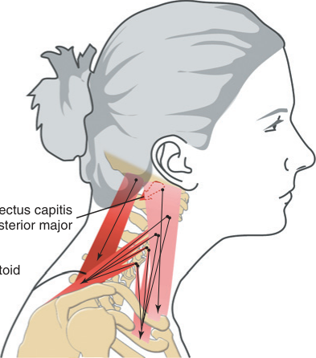
TẬP TRUNG ĐẶC BIỆT 10.5 — Mất cân bằng cơ liên quan đến tư thế đầu về trước mạn tính (Muscular Imbalance Associated with Chronic Forward Head Posture)
Tư thế lý tưởng được thể hiện trong Hình 10.30A mô tả một hệ “dây căng giằng” vùng sọ–cổ được cân bằng tối ưu. Tuy nhiên, sức căng cơ quá mức ở bất kỳ cơ nào cũng có thể phá vỡ sự ổn định thẳng đứng của vùng. Một sự phá vỡ như thế là tư thế đầu về trước (đẩy ra trước) mạn tính (xem Hình 10.30B). Tư thế đầu về trước do thói quen có thể do nhiều kịch bản cơ chế bệnh học, thường liên quan với nhau, gây ra. Hãy xét ba khả năng sau đây. Thứ nhất, một vận động duỗi quá mức quá đà hoặc dữ dội của vùng sọ–cổ có thể làm căng giãn các cơ như cơ ức đòn chũm, cơ dài cổ và cơ bậc thang trước. Hệ quả là co cứng mạn tính hoặc sự giữ thế bảo vệ trong các cơ bị căng giãn có thể đẩy vùng cổ dưới đến giữa về tư thế gập, từ đó khởi động cơ học của tư thế đẩy ra trước (hay đầu về trước) (ôn lại Chương 9). Một dấu hiệu lâm sàng thường đi kèm tư thế đầu về trước là sự sắp xếp lại vị trí của cơ ức đòn chũm trên mặt phẳng đứng dọc. Đầu phía sọ của cơ, vốn thẳng hàng phía sau khớp ức đòn, dịch về trước theo đầu tới một vị trí ngay phía trên khớp ức đòn (so sánh Hình 10.30A với Hình 10.30B).
Kịch bản cơ chế bệnh học thứ hai có thể gây ra hoặc tạo tiền đề cho tư thế đầu về trước liên quan đến sự ức chế, đau, yếu hay tính dễ mỏi của các cơ gập vùng sọ–cổ nằm sâu hơn, cụ thể là cơ dài cổ và cơ dài đầu. Vì sao những cơ đặc thù này dễ bị mất kích hoạt tương đối hơn thì chưa hoàn toàn rõ ràng. Dù vậy, và có lẽ như một sự bù trừ, cơ ức đòn chũm hoặc cơ bậc thang trước nằm nông hơn có thể trở thành ảnh hưởng động lực chi phối trong vùng. Cơ sinh học và sự kiểm soát thần kinh–cơ của các cơ gập vùng sọ–cổ sâu và nông là phức tạp và chưa được hiểu đầy đủ, và đã là một đề tài nghiên cứu vật lý trị liệu về đau cổ cùng đau đầu hoặc đau khớp thái dương–hàm (temporomandibular joint) đi kèm. Một số hướng điều trị cho khiếm khuyết này tập trung vào các bài tập làm tăng mức kích hoạt của cơ dài cổ và cơ dài đầu trong khi giảm thiểu mức kích hoạt của cơ ức đòn chũm chi phối. Một bài tập như thế được thực hiện bằng phản hồi sinh học điện cơ (EMG biofeedback), yêu cầu người nằm ngửa thực hiện một vận động gập vùng sọ–cổ (gật đầu) (một tác động của cơ dài đầu) đồng thời làm san phẳng độ ưỡn cổ ép vào một đồng hồ đo áp lực (một tác động của cơ dài cổ). Vận động được xem là thành công nếu tác động có thể thực hiện được (và được đồng hồ áp lực xác nhận) với mức kích hoạt tối thiểu của cơ ức đòn chũm. Người ta tin rằng mức kích hoạt tương đối lớn hơn của cơ dài cổ và cơ dài đầu trong các vận động đầu và cổ mang lại sự ổn định thẳng đứng nội tại tốt hơn mà không tạo hiệu ứng dịch chuyển về trước mạnh lên vùng sọ–cổ — đặc trưng của sự kích hoạt hai bên chi phối của cơ ức đòn chũm.
Cuối cùng, tư thế đầu về trước mạn tính có thể liên quan đến công thái học (ergonomics). Một kịch bản như thế là chủ đích đẩy toàn bộ vùng sọ–cổ ra trước để cải thiện giao tiếp thị giác với những vật đặt ở phía trước cơ thể, chẳng hạn khi xem màn hình máy tính hoặc tivi. Tư thế đầu về trước, nếu được duy trì trong thời gian dài, có thể làm thay đổi chiều dài nghỉ chức năng của các cơ vùng sọ–cổ, dần dần biến tư thế về trước này thành tư thế “tự nhiên” của cá nhân.
Có khả năng cơ chế bệnh học của tư thế đầu về trước thường là kết quả của sự kết hợp các kịch bản đã mô tả ở trên chứ không phải của riêng một nguyên nhân cụ thể nào. Bất kể các yếu tố tạo tiền đề là gì, tư thế đầu về trước mạn tính gây ứng suất lên các cơ duỗi, chẳng hạn cơ nâng vai và cơ bán gai đầu (xem Hình 10.30B). Một cơ dưới chẩm, chẳng hạn cơ thẳng đầu sau lớn, có thể trở nên mỏi do hoạt động duỗi kéo dài cần thiết để “san bằng” đầu và mắt (ôn lại Hình 9.47A). Theo thời gian, ứng suất cơ tăng lên xuyên suốt toàn bộ vùng sọ–cổ có thể dẫn tới các co cơ khu trú và đau, hay “điểm kích thích cơ” (trigger points), thường gặp ở cơ nâng vai và các cơ dưới chẩm. Tình trạng này thường đi kèm đau đầu và đau lan lên da đầu và vào các khớp thái dương–hàm. Chìa khóa của phần lớn điều trị tư thế đầu về trước mạn tính là khôi phục tư thế sọ–cổ tối ưu, có thể gồm cải thiện ý thức tư thế, kích hoạt cơ chọn lọc, thiết kế nơi làm việc theo công thái học và các kỹ thuật trị liệu tay cụ thể.
TẬP TRUNG ĐẶC BIỆT 10.6 — Chấn thương mô mềm do chấn thương roi vọt (Soft-Tissue Whiplash Injury)
Các mô mềm của cột sống cổ đặc biệt dễ bị tổn thương do chấn thương trong một sự kiện roi vọt (whiplash) liên quan đến tai nạn ô tô. Roi vọt đi kèm với quá duỗi cổ nói chung tạo ra mức kéo giãn mô mềm lớn hơn so với roi vọt đi kèm với quá gập cổ. Quá duỗi xảy ra trên một tầm vận động tương đối lớn, do đó có thể gây kéo giãn nặng nề các cơ gập vùng sọ–cổ, tạng vùng cổ (cervical viscera) và các mô liên kết nằm phía trước, đồng thời nén quá mức các khớp mỏm khớp, các đĩa đệm và các phần tử sau của cột sống cổ (Hình 10.31A). Ngược lại, phạm vi tối đa của gập bị chặn một phần do cằm đập vào ngực (xem Hình 10.31B). Ở mức lý tưởng, các tựa đầu trang bị trong hầu hết các ô tô giúp hạn chế mức quá duỗi và giảm chấn thương do va chạm.
Các chấn thương quá duỗi thường xảy ra nhiều hơn trong các va chạm ô tô bị tác động từ phía sau. Các phép đo cẩn thận trên các mô hình người nhân tạo và trên vật liệu tử thi cho thấy ngay khi tiếp xúc, vùng sọ–cổ rút thẳng lùi một cách đột ngột, tiếp theo là một giai đoạn quá duỗi kéo dài hơn. Giai đoạn rút lùi ngắn này thường hoàn tất trước khi sọ chạm vào tựa đầu. Dây chằng dọc trước ở vùng cổ giữa và cổ dưới đặc biệt dễ bị tổn thương trong giai đoạn không được bảo vệ này của sự kiện roi vọt.
Các dây chằng cánh dễ bị tổn thương trong giai đoạn quá duỗi kéo dài của một va chạm từ phía sau, nhất là khi đầu đang xoay vào thời điểm va chạm. Sự xoay của đầu kéo giãn các dây chằng cánh, đưa chúng đến gần điểm hỏng cơ học hơn.
Ngoài ra, nghiên cứu đã chỉ ra rằng tình trạng quá duỗi nặng nề đi kèm roi vọt đặt một sức căng quá mức lên các cơ gập, đặc biệt là các cơ nằm sâu hơn là cơ dài cổ và cơ dài đầu. Trong một nghiên cứu, mức kéo giãn (dài ra) 56% đã được đo ở cơ dài cổ — một mức có thể gây tổn thương mô. Người bị chấn thương quá duỗi thường cho thấy một kiểu tương ứng là nhức buối rõ rệt và co cứng bảo vệ ở vùng cơ dài cổ. Co cứng của cơ dài cổ có xu hướng tạo ra một cột sống cổ tương đối thẳng, thậm chí hơi gập, thiếu độ ưỡn cổ bình thường. Người có cơ dài cổ căng giãn và đau có thể khó nhún vai — một động tác chủ yếu do cơ thang trên tạo ra. Khi cơ dài cổ và các cơ gập khác đau quá mức không thể co mạnh, cơ thang trên mất một phần chỗ bám cổ vững chắc của nó, và do đó kém hiệu quả hơn với vai trò là cơ chủ động nâng đai vai. Kịch bản lâm sàng này là một ví dụ điển hình về sự phụ thuộc lẫn nhau của chức năng cơ, trong đó tác động của một cơ phụ thuộc vào lực ổn định do cơ kia tạo ra.
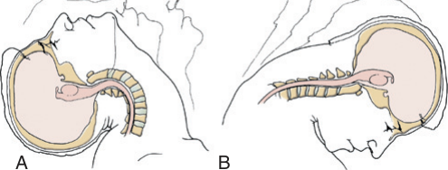
Vùng sọ–cổ cho phép tính cơ động ba mặt phẳng lớn nhất trong tất cả các vùng của bộ xương trục. Vận động dồi dào là điều thiết yếu để đặt mắt, tai và mũi vào định hướng không gian tối ưu. Tuy mọi mặt phẳng vận động đều quan trọng như nhau về mặt này, phần sau đây làm nổi bật vận động trong mặt phẳng ngang.
Hình 10.32 minh họa một vận động toàn thân thể hiện một mẫu các tương tác cơ được dùng để tối đa hóa mức xoay trục sang phải của vùng sọ–cổ. Hãy lưu ý rằng xoay trục hết cỡ của vùng sọ–cổ cung cấp cho mắt phạm vi quét thị giác nhiều hơn nhiều so với 180 độ. Như được mô tả, xoay sang phải được dẫn động bằng sự kích hoạt đồng thời của cơ ức đòn chũm trái và cơ thang trái (xem Hình 10.32A); cơ tàn nhãn đầu và cổ phải; cơ dựng sống vùng trên bên phải, như cơ dài nhất đầu; và các cơ ngang–gai trái, như cơ nhiều đoạn (xem Hình 10.32B). Tuy không được mô tả, một số cơ dưới chẩm (cụ thể là cơ thẳng đầu sau lớn phải và cơ chéo đầu dưới phải) đang chủ động điều khiển sự xoay của phức hợp khớp đội–trục.
Sự kích hoạt các cơ được liệt kê cung cấp sức xoay và khả năng điều khiển cần thiết cho đầu và cổ, đồng thời ổn định vùng sọ–cổ trong cả mặt phẳng trán lẫn mặt phẳng đứng dọc. Ví dụ, tiềm năng duỗi do cơ tàn nhãn đầu và cổ, cơ thang và cơ dựng sống vùng trên cung cấp được cân bằng bởi tiềm năng gập của cơ ức đòn chũm. Hơn nữa, tiềm năng nghiêng bên trái của cơ ức đòn chũm trái và cơ thang trái được cân bằng bởi tiềm năng nghiêng bên phải của cơ tàn nhãn đầu và cổ phải.
Xoay trục hết cỡ của vùng sọ–cổ đòi hỏi những tương tác cơ kéo dài vào thân mình và chi dưới. Cân nhắc, ví dụ, sự kích hoạt của các cơ bụng chéo phải và trái cũng như cơ ngang bụng (xem Hình 10.32A). Các cơ này cung cấp phần lớn mô men cần thiết để xoay và để truyền lực một cách năng động khắp toàn bộ cơ thể — cuối cùng là từ chi dưới đến vùng sọ–cổ. Hơn nữa, như Hình 10.32B gợi ý, các cơ dựng sống và cơ ngang–gai hoạt động khắp thân mình phía sau để đối trọng với xu hướng gập thân mình mạnh mẽ của các cơ bụng chéo. Cơ lưng rộng là một cơ xoay thân mình cùng bên, với điều kiện khớp cánh tay–bụng (glenohumeral joint) được các cơ khác ổn định tốt. Cơ mông lớn trái được thể hiện đang chủ động xoay khung chậu cùng với vùng thắt lưng–cùng gắn liền với nó sang phía phải, so với xương đùi trái cố định. Hơn nữa, cơ khép dài phải cũng được thể hiện đang hỗ trợ sự xoay khung chậu trên mặt phẳng ngang so với xương đùi phải cố định. Hãy lưu ý đường lực gần như liên tục được chia sẻ giữa cơ thẳng bụng và cơ khép dài. Tương tác động lực học này cho thấy một ví dụ đẹp về các cơ thuộc các vùng khác nhau cùng phối hợp đồng sức để truyền lực giữa thân mình, xuyên qua khung chậu, và đến chi dưới.
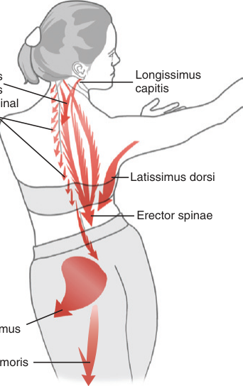
Nhấc nâng các vật nặng có thể tạo ra các lực nén, lực căng và lực xé lớn khắp cơ thể, nổi bật nhất là qua các vùng thắt lưng–chậu. Ở một mức tới hạn nào đó, các lực tác động lên một vùng có thể vượt quá khả năng chịu đựng cấu trúc của các cơ, dây chằng và bao khớp tại chỗ, cũng như của các khớp mỏm khớp và các khớp liên thân đốt. Chấn thương tiếp theo có thể ở mức đại thể hoặc vi thể, gây giải phóng các cytokine gây viêm dẫn đến đau thắt lưng cấp hoặc có khả năng trở thành mạn tính. Nhấc nâng là một yếu tố nguy cơ chính liên quan đến sự phát triển của đau thắt lưng, đặc biệt thứ phát sau việc nhấc nâng thường xuyên và lặp đi lặp lại mà nhiều nghề nghiệp đòi hỏi.
Hơn nữa, sức mạnh không đầy đủ và kỹ thuật nhấc nâng kém có thể làm cho người lao động dễ bị đau thắt lưng: ước tính 30% lực lượng lao động ở Hoa Kỳ thường xuyên xử lý vật liệu theo cách có khả năng gây hại, gồm cả các công việc liên quan đến nhấc nâng.
Chủ đề về sinh cơ học của nhấc nâng này mô tả (1) tại sao vùng thắt lưng về mặt sinh cơ học dễ bị tổn thương bởi chấn thương liên quan đến nhấc nâng, và (2) làm thế nào các lực trong vùng thắt lưng có thể được giảm thiểu để giảm cơ hội xảy ra chấn thương. Tuy chương này tập trung vào cơ học của nhấc nâng như một yếu tố nguy cơ phát triển đau thắt lưng, nó không mô tả các yếu tố khác có thể liên quan đến tình trạng này. Nguyên nhân của đau thắt lưng rất phức tạp và đa yếu tố, và cũng có thể liên quan đến các biến số gồm sức mạnh thể chất, tuổi, thói quen hút thuốc, căng thẳng tinh thần, tiền sử đau thắt lưng trước đó và mức độ hài lòng với công việc.
Các lực do các cơ duỗi của thân mình phía sau tạo ra khi nhấc nâng được truyền trực tiếp hoặc gián tiếp đến các khớp và mô liên kết (gân, dây chằng, cân mạc và đĩa đệm) trong vùng thắt lưng. Vì thế các phần sau tập trung vào vai trò của các cơ khi nhấc nâng, và vào cách các lực do cơ tạo ra có thể được điều chỉnh để giảm ứng suất lên các cấu trúc trong vùng thắt lưng.
Đã có nhiều nghiên cứu đáng kể nhằm lượng hóa các yêu cầu tương đối đặt lên các cấu trúc khác nhau trong vùng thắt lưng khi nhấc nâng hay khi thực hiện các hoạt động gắng sức khác. Các nghiên cứu này giúp các nhà lâm sàng và các cơ quan chính phủ xây dựng các hướng dẫn và giới hạn an toàn về nhấc nâng, nhất là ở nơi làm việc. Đặc biệt được quan tâm đối với chấn thương do nhấc nâng là các biến số gồm lực đỉnh (hay mô men) do các cơ tạo ra; sức căng hình thành trong các dây chằng bị kéo giãn; và các lực nén và lực xé hình thành chống lại các đĩa đệm liên đốt sống và các khớp mỏm khớp. Tuy các đo đạc trực tiếp trên cơ thể sống của các biến số này đã được báo cáo, chúng thường được ước lượng gián tiếp qua các mô hình dùng video hoặc dựa trên máy tính. Một phương pháp đơn giản nhưng kém chính xác hơn để ước lượng các lực đặt lên thắt lưng là dùng các phép tính dựa trên giả định cân bằng tĩnh (static equilibrium).
Phần sau đây trình bày các bước dùng để thực hiện một ước lượng dựa trên trạng thái tĩnh về lực nén tác động lên đốt sống L2 khi một vật được nhấc lên trong mặt phẳng đứng dọc. Tuy ví dụ này chỉ cung cấp một lượng thông tin hạn chế về một sự kiện sinh cơ học khá phức tạp, nó vẫn mang lại cái nhìn quý giá về mối quan hệ giữa lực do cơ tạo ra và lực nén đặt lên một cấu trúc đại diện trong vùng thắt lưng.
Hình 10.33 (hộp trên cùng) cho thấy các dữ liệu cần thiết để thực hiện một ước lượng xấp xỉ lực nén chống lại đốt sống L2 khi nhấc nâng. Đối tượng được mô tả ở giữa chừng một cú nhấc thẳng đứng một vật tương đối nặng, nặng bằng 25% trọng lượng cơ thể anh ta. Trục quay cho vận động mặt phẳng đứng dọc được định hướng theo hướng trong–ngoài, đặt tùy ý tại L2 (xem Hình 10.33, vòng tròn mở). Việc ước lượng lực nén là một quy trình gồm hai bước; mỗi bước giả định một điều kiện cân bằng tĩnh cả về xoay lẫn tịnh tiến.
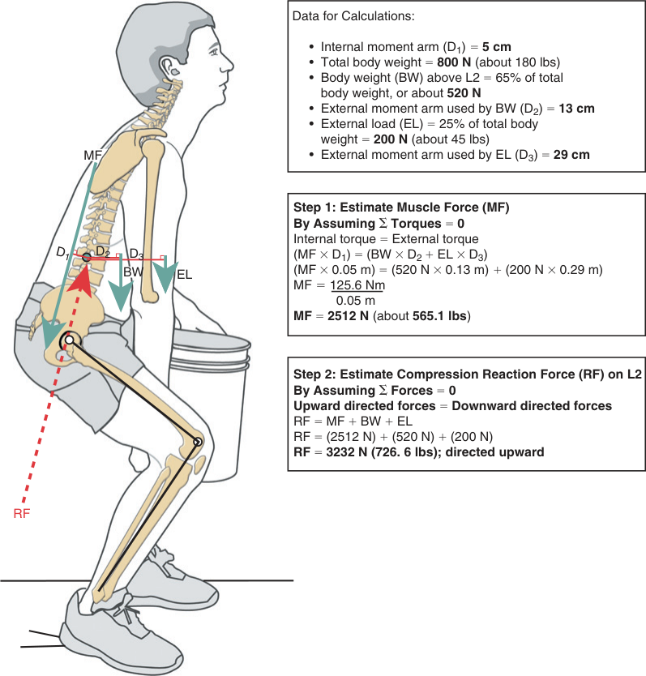
Bước 1 giải tìm lực cơ bằng cách giả định tổng các mô men trong và ngoài trong mặt phẳng đứng dọc bằng không (Σ Mô-men = 0). Cần lưu ý rằng có hai mô men ngoài được mô tả: một do tải trọng ngoài (EL) sinh ra và một do trọng lượng cơ thể (BW) của đối tượng nằm phía trên L2 sinh ra. Lực cơ duỗi (MF) được định nghĩa là MF sinh ra ở phía sau (phía duỗi) của trục quay. Nếu các cơ duỗi lưng được giả định có cánh tay đòn trong trung bình 5 cm, các cơ duỗi phải sinh ra ít nhất 2512 N (565,1 lb) lực để nhấc được tải trọng.
Bước 2 ước tính lực phản ứng nén (RF) tác động lên đốt sống L2 trong lúc nâng. (Lực phản ứng này hàm ý rằng đốt sống L2 phải “đẩy” ngược lại chống lại các lực hướng xuống khác.) Một ước tính thô của lực này có thể thực hiện được bằng cách giả định cân bằng tuyến tính tĩnh. (Vì mục đích đơn giản hóa, các phép tính giả định rằng lực cơ [MF] tác động hoàn toàn theo phương thẳng đứng và do đó song song với trọng lượng cơ thể và lực của tải trọng ngoài.) Vectơ RF (xem Hình 10.33) cũng được giả định có độ lớn bằng nhưng ngược hướng với tổng của MF, BW và EL.
Lời giải của ví dụ này cho thấy một lực nén xấp xỉ 3232 N (hơn 725 lb) được tác dụng lên L2 trong khi một tải trọng ngoài nặng 200 N (khoảng 45 lb) được nhấc lên. Để đặt độ lớn lực này vào góc nhìn thực tiễn, hãy xét hai điểm sau đây. Thứ nhất, Cơ quan An toàn và Sức khỏe Nghề nghiệp Quốc gia (National Institute of Occupational Safety and Health, NIOSH) đã đặt ra các hướng dẫn nhằm bảo vệ người lao động khỏi những tải trọng quá mức lên vùng thắt lưng do việc nâng và xếp dỡ vật liệu gây ra. NIOSH đã khuyến nghị một giới hạn trên an toàn là 3400 N (764 lb) lực nén tại mối nối L5–S1. Thứ hai, khả năng chịu tải tối đa của cột sống thắt lưng được ước tính là 6400 N (1439 lb), gần gấp đôi lực tối đa an toàn được NIOSH khuyến nghị. Giới hạn 6400 N này áp dụng cho một người đàn ông 40 tuổi; giới hạn này giảm 1000 N sau mỗi thập kỷ tiếp theo. Các giá trị lực này chỉ là những hướng dẫn rất chung, về điển hình không áp dụng cho mọi người trong mọi tình huống nâng.
Mô hình tĩnh nhiều khả năng đánh giá thấp lực nén thực tế lên đốt sống L2 tới 20%. Hai yếu tố có thể giải thích phần lớn mức đánh giá thấp này. Thứ nhất, mô hình chỉ tính đến lực cơ do các cơ duỗi lưng sinh ra. Các cơ khác, nhất là những cơ có hướng sợi gần thẳng đứng như cơ thẳng bụng (rectus abdominis) và cơ thắt lưng lớn (psoas major), chắc chắn góp phần vào lực nén gốc cơ lên cột sống thắt lưng. Thứ hai, mô hình giả định cân bằng tĩnh, qua đó bỏ qua các lực bổ sung cần thiết để gia tốc cơ thể và tải trọng hướng lên trên. Một cú nâng nhanh đòi hỏi lực cơ lớn hơn và gây lên các khớp cùng mô liên kết ở vùng thắt lưng mức nén và xén (shear) lớn hơn. Vì lý do này, thông thường người ta khuyến nghị nâng tải trọng một cách chậm rãi và êm ái — một điều kiện không phải lúc nào cũng khả thi trong mọi hoàn cảnh.
Các phép tính thực hiện ở Bước 2 của Hình 10.33 cho thấy lực cơ (MF) là, vượt trội hơn hẳn, biến số có ảnh hưởng nhất trong việc quyết định độ lớn của lực nén (phản ứng) lên cột sống thắt lưng. Do đó, những mức giảm theo tỷ lệ của lực cơ có tác động lớn nhất đến việc giảm lực nén tổng thể lên các cấu trúc ở vùng thắt lưng.
Một yếu tố quan trọng gây ra các lực lớn trong các cơ vùng thắt lưng trong khi nâng là sự chênh lệch về chiều dài của các cánh tay đòn trong và ngoài tương ứng. Cánh tay đòn trong (D1) được thể hiện trong Hình 10.33 được giả định là 5 cm. Do đó các cơ duỗi đứng ở một bất lợi cơ học đáng kể và phải sinh ra một lực lớn gấp nhiều lần trọng lượng của tải đang nâng. Như đã được chứng minh trước đó, nâng một tải trọng ngoài nặng bằng 25% trọng lượng cơ thể tạo ra một lực nén lên L2 gấp bốn lần trọng lượng cơ thể!
Các chương trình trị liệu và giáo dục thường được thiết kế nhằm giảm khả năng chấn thương lưng bằng cách giảm thiểu nhu cầu các lực cơ duỗi rất lớn trong khi nâng. Về lý thuyết, điều này có thể đạt được bằng bốn cách. Thứ nhất, giảm tốc độ nâng. Như đã nêu trước đó, giảm vận tốc nâng sẽ giảm một cách tương ứng lượng lực của cơ duỗi lưng.
Thứ hai, giảm trọng lượng của tải trọng ngoài. Dù điểm này hiển nhiên, nó không phải lúc nào cũng khả thi.
Thứ ba, giảm chiều dài của cánh tay đòn ngoài của tải trọng ngoài. Đây nhiều khả năng là phương pháp hiệu quả và thực tiễn nhất để giảm các lực phản ứng nén lên vùng thắt lưng. Như được chứng minh trong Hình 10.33, về lý tưởng, tải nên được nhấc từ giữa hai đầu gối, nhờ đó giảm thiểu khoảng cách giữa tải và vùng thắt lưng. Dựa trên các phép tính, phương pháp nâng lý tưởng này tạo ra một lực nén lên vùng thắt lưng vẫn còn gần với giới hạn trên an toàn do NIOSH đề xuất. Nâng cùng tải trọng đó với một cánh tay đòn ngoài dài hơn có thể tạo ra các lực nén rất lớn và tiềm ẩn nguy hiểm lên vùng thắt lưng. Hình 10.34 cho thấy một đồ thị các lực nén (phản ứng) dự đoán lên đĩa đệm L5–S1 theo hàm của cả kích thước tải lẫn khoảng cách giữa tải và mặt trước ngực. Dù có lẽ là một ví dụ cực đoan và phi thực tế, đồ thị dự đoán rằng giữ một tải trọng ngoài nặng 200 N (45 lb) cách cơ thể 50 cm về phía trước tạo ra khoảng 4500 N lực nén, vượt xa giới hạn trên an toàn 3400 N.
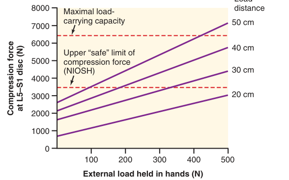
Trong đời sống hằng ngày, nhấc một vật từ giữa hai đầu gối hoặc theo cách tương tự không phải lúc nào cũng khả thi. Hãy xét hành động kéo một bệnh nhân lớn xác về phía đầu giường bệnh. Việc không thể giảm khoảng cách giữa trọng tâm (center of mass) của bệnh nhân (nằm phía trước S2) và người nâng có thể làm tổn hại nghiêm trọng đến sự an toàn của người nâng.
Thứ tư, tăng cánh tay đòn trong sẵn có cho các cơ duỗi lưng. Một cánh tay đòn trong lớn hơn cho việc duỗi cho phép một mô men duỗi cho trước được sinh ra với ít lực cơ hơn. Như đã nêu, ít lực cơ hơn thường tương đương với ít lực hơn lên các thành phần đốt sống. Độ ưỡn thắt lưng tăng lên quả thực làm tăng cánh tay đòn trong sẵn có cho các cơ dựng sống thắt lưng (lumbar erector spinae). Tuy nhiên, việc nâng với độ ưỡn thắt lưng khuếch đại không phải lúc nào cũng khả thi hay mong muốn. Chẳng hạn, nhấc một tải rất nặng khỏi sàn thường đòi hỏi cột sống thắt lưng ở tư thế gập, điều này làm giảm cánh tay đòn của các cơ duỗi. (Về mặt cơ sinh học, tình huống này sẽ đòi hỏi lực cơ lớn hơn cho mỗi mô men duỗi cho trước.) Dù có thể thực hiện được, việc duy trì một độ ưỡn thắt lưng quá mức có thể có hậu quả tiêu cực là tạo ra các tải nén quá lớn lên các khớp mỏm khớp và các thành phần khác phía sau của cột sống.
Bốn Cách Giảm Lượng Lực Đòi Hỏi Của Các Cơ Duỗi Lưng Trong Khi Nâng (Four Ways to Reduce the Amount of Force Required of the Back Extensor Muscles during Lifting)
Các hoạt động có liên quan đến nâng, nhất là các tải trọng tương đối nặng, thường đi kèm với việc thực hiện thao tác Valsalva (Valsalva maneuver). Thao tác Valsalva mô tả hành động chủ ý tăng áp lực trong ổ bụng (intra-abdominal pressure) bằng sự co mạnh của các cơ bụng chống lại một thanh môn (glottis) đóng kín. Thao tác Valsalva tạo ra một cột áp suất cao cứng cáp bên trong ổ bụng, đẩy hướng lên chống lại cơ hoành, hướng trước chống lại các cơ bụng sâu (cơ ngang bụng [transversus abdominis] và cơ chéo bụng trong [internal oblique]), hướng sau chống lại cột sống thắt lưng và thành bụng sau, và hướng xuống chống lại các cơ sàn chậu (cơ nâng hậu môn [levator ani] và cơ cụt [coccygeus]). Như Bartelink đã mô tả từ nhiều năm trước, cột khí nén cứng cáp này hoạt động như một “bóng hơi trong ổ bụng” (intra-abdominal balloon) được bơm phồng, tạo ra một mô men duỗi khiêm tốn lên cột sống thắt lưng, nhờ đó giảm các yêu cầu đặt lên các cơ duỗi thắt lưng và cuối cùng hạ thấp các lực nén gốc cơ lên cột sống thắt lưng.
Các nghiên cứu ủng hộ ý tưởng rằng việc tạo ra thao tác Valsalva trong khi nâng quả thực giúp giải tải một phần cho các mối nối liên đốt thắt lưng cũng như tăng độ cứng cơ và sự ổn định của vùng thắt lưng. Tuy nhiên, mức độ mà thao tác Valsalva thực sự giải tải cho cột sống thắt lưng vẫn chưa được hiểu trọn vẹn hay giải quyết trọn vẹn. Có một số yếu tố cơ sinh học có khả năng triệt tiêu lẫn nhau đang cùng tác động. Dù thao tác Valsalva giảm yêu cầu lực đối với các cơ duỗi thắt lưng (và do đó đối với cột sống thắt lưng) trong khi nâng, sự hoạt hóa mạnh đồng thời của các cơ bụng cần thiết để tăng áp lực trong ổ bụng lại làm tăng lực nén lên cột sống thắt lưng. Vì tất cả các cơ bụng (trừ có lẽ cơ ngang bụng) đều là các cơ gập trội của thân và cột sống thắt lưng, sự hoạt hóa mạnh của chúng đòi hỏi các lực cân bằng ngược lại bổ sung từ các cơ duỗi. Sự hoạt hóa tăng cao kết quả của hầu như tất cả các cơ thân mình (cơ gập lẫn cơ duỗi) có thể triệt tiêu một phần tác dụng giải tải đạt được nhờ áp lực bụng tăng lên. Điều này đặc biệt đúng với các cơ chạy theo hướng gần thẳng đứng hơn, vốn đóng góp một phần trăm lớn hơn vào các lực nén xuyên qua cột sống thắt lưng. Tuy nhiên, nhìn chung người ta nhất trí rằng việc thực hiện thao tác Valsalva trong khi nâng có lợi về mặt cơ học, vì nó đạt được một mức giảm ròng lực nén thắt lưng — dù lượng chính xác cũng như cơ sinh học cơ của nó vẫn chưa chắc chắn.
Ngoài việc tăng áp lực trong ổ bụng, một sự co mạnh của các cơ bụng trong khi nâng còn cung cấp một tác dụng chống đỡ (bracing effect) quanh vùng thắt lưng–chậu, giúp kháng lại các vặn xoắn không mong muốn do việc nâng các tải trọng ngoài theo kiểu bất đối xứng tạo ra. Hơn nữa, các lực do cơ ngang bụng sinh ra có thể đặc biệt hiệu quả trong việc ổn định vùng thắt lưng–chậu vì ít nhất hai lý do. Thứ nhất, cơ ngang bụng có các chỗ bám rộng theo hướng nằm ngang vào cân ngực–thắt lưng (thoracolumbar fascia). Do đó các lực do sự hoạt hóa cơ này sinh ra tạo ra một hiệu ứng nịt eo quanh chu vi (circumferential corset effect) quanh toàn bộ vùng thắt lưng. Thứ hai, bằng cách tác động chủ yếu theo phương ngang, cơ ngang bụng có thể tăng áp lực trong ổ bụng mà không tạo ra đồng thời một mô men gập hay một mức tăng lực nén thẳng đứng lên cột sống thắt lưng. Các sợi nằm ngang hơn của cơ chéo bụng trong có thể hỗ trợ cơ ngang bụng trong các chức năng nêu trên.
Cuối cùng, không nên xem nhẹ vai trò của cơ hoành trong việc tạo ra sự ổn định cơ ở vùng thắt lưng–cùng. Trong lúc hít vào, sự co của cơ hoành kéo vòm của cơ này hướng xuống dưới — sâu hơn vào ổ bụng, điều này làm tăng áp lực trong ổ bụng và tạo ra một độ cứng khí nén cục bộ (local pneumatic stiffness) ở vùng thắt lưng. Để có hiệu quả trọn vẹn, nỗ lực cơ này đòi hỏi sự hoạt hóa đồng thời với các cơ bụng và các cơ sàn chậu. Nỗ lực đa cơ này củng cố vùng thắt lưng không chỉ cho việc nâng mà còn cho các hoạt động có kháng lực ngoài tác dụng lên các chi. Các nghiên cứu cho thấy một số người bị đau thắt lưng không huy động cơ hoành của họ một cách đầy đủ trong khi nâng hoặc trong các vận động thân kháng lực, có thể để vùng thắt lưng dễ bị tổn thương. Liệu sự hoạt hóa hay kiểm soát giảm của cơ hoành trực tiếp hay gián tiếp gây đau thắt lưng, hay chỉ đơn giản là hậu quả của sự co cứng phòng vệ (muscular guarding) do đau lưng, thì vẫn chưa được biết. Vai trò thiết yếu của cơ hoành trong thông khí sẽ được mô tả trong Chương 11.
Khả năng sinh lực tối đa của các cơ duỗi vùng thắt lưng ở một người trưởng thành trẻ điển hình được ước tính xấp xỉ 4000 N (900 lb). Nếu giả định một cánh tay đòn trong trung bình 5 cm, nhóm cơ này được kỳ vọng sinh ra khoảng 200 Nm mô men duỗi thân (tức 4000 N × 0,05 m). Điều gây bối rối, tuy nhiên, là thực tế việc nâng với mức lực tối đa nhiều khả năng đòi hỏi các mô men duỗi có thể vượt xa 200 Nm. Chẳng hạn, người được thể hiện đang nâng tải trong Hình 10.33 đã vượt quá giới hạn sức mạnh lý thuyết 200 Nm nếu tải trọng ngoài được tăng lên khoảng 80% trọng lượng cơ thể của anh ta. Dù đây là một mức trọng lượng đáng kể, việc một người nâng thành công những tải lớn hơn nhiều thì không phải hiếm, chẳng hạn những tải thường gặp đối với công nhân lao động nặng và các vận động viên cử tạ sức (“power lifters”). Trong nỗ lực giải thích sự chênh lệch biểu kiến này, hai nguồn mô men duỗi phụ được đề xuất: (1) sức căng thụ động sinh ra từ việc kéo giãn hệ dây chằng sau (posterior ligamentous system), và (2) sức căng do cơ sinh ra được truyền qua cân ngực–thắt lưng.
Sự Sinh Ra Sức Căng Thụ Động Từ Việc Kéo Giãn Hệ Dây Chằng Sau (Passive Tension Generation from Stretching the Posterior Ligamentous System)
Khi bị kéo giãn, các dây chằng và cân khỏe mạnh thể hiện một mức độ đàn hồi tự nhiên nào đó. Đặc điểm này cho phép mô liên kết tạm thời tích trữ một phần lực ban đầu gây ra sự kéo dài. Việc cúi người về trước để chuẩn bị nâng tiến triển kéo dài một số mô liên kết ở vùng thắt lưng, và về nguyên tắc, sức căng thụ động phát triển trong các mô này có thể hỗ trợ một mô men duỗi. Các mô liên kết này, được gọi chung là hệ dây chằng sau (posterior ligamentous system), gồm dây chằng dọc sau (posterior longitudinal ligament), dây chằng vàng (ligamentum flavum), bao khớp mỏm khớp, dây chằng liên gai (interspinous ligament) và cân ngực–thắt lưng.
Về lý thuyết, khoảng 72 Nm tổng mô men duỗi thụ động được sinh ra khi kéo giãn tối đa hệ dây chằng sau (Bảng 10.6). Cộng mô men thụ động này vào 200 Nm mô men chủ động giả thuyết cho ta tổng cộng 272 Nm mô men duỗi sẵn dùng khi nâng. Do đó một hệ dây chằng sau được huy động hoàn toàn (bị kéo giãn) có thể sinh ra khoảng 25% tổng mô men duỗi dùng khi nâng. Tuy nhiên, cần lưu ý rằng khoảng dự trữ mô men thụ động 25% này chỉ sẵn có sau khi cột sống thắt lưng đã được gập tối đa — điều trong thực tế hiếm khi xảy ra trong lúc nâng. Ngay cả một số vận động viên cử tạ sức cạnh tranh, những người có vẻ nâng với lưng dưới cong tròn hoàn toàn, vẫn tránh các mức gập cực đoan. Nhiều nhà nghiên cứu nghiên cứu chủ đề này nhìn chung tin rằng nên tránh gập tối đa hoặc gần tối đa cột sống thắt lưng trong khi nâng. Vùng thắt lưng nên được giữ ở một vị trí gần trung tính. Tư thế này ưu ái một diện tích tiếp xúc gần tối đa bên trong các khớp mỏm khớp, có thể giúp giảm ứng suất khớp. Hơn nữa, việc duy trì vị trí trung tính trong khi nâng có thể định hướng các cơ duỗi tại chỗ sao cho chúng hiệu quả nhất trong việc kháng lại lực xén trước (anterior shear).
Dù vị trí trung tính của cột sống thắt lưng trong khi nâng có thể giảm khả năng chấn thương vùng thắt lưng, nó chỉ huy động một phần nhỏ trong tổng khoảng dự trữ mô men thụ động sẵn có để hỗ trợ việc duỗi. Do đó phần lớn mô men duỗi phải được sinh ra bằng sự co cơ chủ động. Vì vậy, điều quan trọng là các cơ duỗi phải đủ mạnh để đáp ứng các yêu cầu tiềm tàng lớn đặt lên vùng thắt lưng bởi việc nâng tải nặng. Sức mạnh đầy đủ của các cơ nhiều đoạn thắt lưng (lumbar multifidi) là đặc biệt quan trọng về mặt này. Nếu thiếu sức mạnh đầy đủ của các cơ này, cột sống thắt lưng có thể bị kéo vào gập quá mức bởi mô men ngoài do tải lớn tạo ra. Gập quá mức ở vùng thắt lưng trong khi nâng tải nhìn chung không được coi là một kỹ thuật nâng an toàn.
Sức Căng Do Cơ Sinh Ra Được Truyền Qua Cân Ngực–Thắt Lưng (Muscular-Generated Tension Transferred through the Thoracolumbar Fascia)
Cân ngực–thắt lưng dày nhất và phát triển rộng nhất ở vùng thắt lưng. Như đã lưu ý trong Hình 9.72, cân được sắp xếp thành các lớp trước, giữa và sau. Phần lớn mô bám vào cột sống thắt lưng, xương cùng và khớp chậu ở một vị trí nằm sau đáng kể so với trục quay tại vùng thắt lưng. Về lý thuyết, do đó, sức căng thụ động bên trong cân ngực–thắt lưng bị kéo giãn có thể sinh ra một mô men duỗi ở vùng thắt lưng và nhờ vậy khuếch đại mô men do các cơ vùng thắt lưng tạo ra.
Để cân ngực–thắt lưng sinh ra sức căng hữu dụng, trước hết nó phải bị kéo giãn và trở nên căng ra. Điều này có thể xảy ra theo hai cách. Thứ nhất, cân bị kéo giãn đơn giản khi một người cúi về trước và gập cột sống thắt lưng để chuẩn bị nâng. Thứ hai, và quan trọng hơn, cân bị kéo giãn bởi sự co chủ động của các cơ bám trực tiếp vào lớp giữa và lớp sau của cân ngực–thắt lưng, tức cơ ngang bụng, cơ chéo bụng trong và cơ lưng rộng (latissimus dorsi). Tuy nhiên, hướng sợi nằm ngang phổ biến của phần lớn cân ngực–thắt lưng hạn chế lượng mô men duỗi có thể được sinh ra ở cột sống thắt lưng. Về lý thuyết, sự hoạt hóa tối đa của ba cơ nêu trên có thể kéo vào cân ngực–thắt lưng với một lực đủ sinh ra tới 10 Nm mô men duỗi xuyên qua cột sống thắt lưng dưới. Dù độ lớn mô men duỗi thắt lưng này là tương đối nhỏ (so với mức tối đa lý thuyết 200 Nm sinh ra theo ý muốn), nó vẫn cung cấp thêm sự ổn định cho vùng này.
| Mô liên kết (Connective Tissue) | Sức căng tối đa trung bình (N)* (Average Maximum Tension (N)) | Cánh tay đòn duỗi (m)† (Extensor Moment Arm (m)) | Mô-men duỗi thụ động tối đa (Nm)‡ (Maximal Passive Extensor Torque (Nm)) |
|---|---|---|---|
| Dây chằng dọc sau (Posterior longitudinal ligament) | 90 | 0,02 | 1,8 |
| Dây chằng vàng (Ligamenta flava) | 244 | 0,03 | 7,3 |
| Bao khớp của các khớp mỏm khớp (Capsule of apophyseal joints) | 680 | 0,04 | 27,2 |
| Dây chằng liên gai (Interspinous ligament) | 107 | 0,05 | 5,4 |
| Lớp sau của cân ngực–thắt lưng, gồm dây chằng trên gai và mạc (aponeurosis) phủ các cơ dựng sống (erector spinae) (Posterior layer of thoracolumbar fascia, including supraspinous ligaments and the aponeurosis covering the erector spinae muscles) | 500 | 0,06 | 30,0 |
| TỔNG CỘNG (TOTAL) | 71,7 |
Dữ liệu từ Bogduk N: Clinical and radiological anatomy of the lumbar spine, ấn bản 5, New York, 2012, Churchill Livingstone.
*Sức căng tối đa trung bình là sức căng (lực) trong mỗi mô bị kéo giãn tại điểm đứt gãy. (Chú thích gắn dấu * trong bảng.)
†Cánh tay đòn duỗi là khoảng cách vuông góc giữa các chỗ bám của dây chằng và trục quay trong–ngoài bên trong một đốt sống thắt lưng đại diện. (Chú thích gắn dấu † trong bảng.)
‡Mô-men duỗi thụ động tối đa được ước tính bằng tích của sức căng (lực) tối đa và cánh tay đòn của cơ duỗi. (Chú thích gắn dấu ‡ trong bảng.)
| Cân nhắc (Consideration) | Cơ sở lý luận (Rationale) | Nhận xét (Comment) |
|---|---|---|
| Tải trọng được nâng nên nhẹ nhất có thể và được giữ càng gần cơ thể càng tốt. | Giảm thiểu mô men ngoài của tải trọng, nhờ đó giảm thiểu yêu cầu lực đặt lên các cơ lưng. | Nâng một tải trọng ngoài từ giữa hai đầu gối là cách hiệu quả để giảm cánh tay đòn ngoài của tải trọng, dù không phải lúc nào cũng khả thi khi thực hiện. |
| Nâng với cột sống thắt lưng càng gần vị trí trung tính (ưỡn) của nó càng tốt (tức tránh các mức gập và duỗi cực đoan). | Sự co mạnh của các cơ duỗi lưng khi cột sống thắt lưng gập tối đa có thể làm tổn thương các đĩa đệm liên đốt. Ngược lại, sự co mạnh của các cơ duỗi lưng khi cột sống thắt lưng duỗi tối đa có thể làm tổn thương các khớp mỏm khớp. | Nâng với mức gập hoặc duỗi hạn chế ở cột sống thắt lưng có thể chấp nhận được đối với một số người, tùy vào tình trạng sức khỏe và kinh nghiệm của người nâng. Các mức gập hoặc duỗi khác nhau đều có những ưu thế cơ sinh học riêng. • Nâng với cột sống thắt lưng ở mức gập từ tối thiểu đến trung bình làm tăng sức căng thụ động do hệ dây chằng sau sinh ra, có khả năng giảm yêu cầu lực đối với các cơ duỗi. • Nâng với cột sống thắt lưng gần duỗi hoàn toàn có thể làm tăng cánh tay đòn của một số cơ duỗi trong khi các khớp mỏm khớp vẫn ở trong hoặc gần vị trí khép kín (close-packed position) của chúng. |
| Khi nâng, hãy hoạt hóa các cơ duỗi hông và duỗi gối để giảm thiểu yêu cầu lực đặt lên các cơ lưng. | Các lực lớn do các cơ duỗi lưng sinh ra có thể làm tổn thương đĩa đệm, mâm đốt sống, khớp mỏm khớp hoặc bản thân các cơ. | Một người bị viêm khớp hông hoặc gối có thể không thể sử dụng hiệu quả các cơ ở chân để hỗ trợ các cơ lưng. |
| Giảm thiểu khoảng cách theo phương thẳng đứng và phương ngang mà tải trọng phải được nâng trong suốt một khoảng thời gian làm việc nhất định. | Giảm thiểu tổng khoảng cách mà tải được di chuyển làm giảm tổng công do nâng lặp lại gây ra, nhờ đó giảm mệt mỏi; giảm thiểu khoảng cách tải được di chuyển làm giảm các mức vận động cực đoan ở vùng thắt lưng. | Sử dụng quai cầm hoặc mặt nâng có chiều cao điều chỉnh được có thể hữu ích. |
| Giảm thiểu trọng lượng của các tải trọng được nâng theo cách bất đối xứng. | Các tải trọng bất đối xứng (ví dụ, tải đơn bên được giữ đưa ra xa và ra khỏi cơ thể) có thể tập trung các lực lớn vào một số lượng tương đối ít các cơ hoặc mô liên kết. | Nâng các tải trọng bất đối xứng còn có thể làm mất ổn định thăng bằng của người nâng. |
| Tránh vặn xoắn khi nâng. | Các lực xoắn tác dụng lên các đốt sống có thể làm người nâng dễ bị tổn thương đĩa đệm liên đốt. | Một môi trường làm việc được thiết kế đúng cách có thể giảm nhu cầu vặn xoắn khi nâng. |
| Nâng chậm và êm nhất theo điều kiện cho phép. | Một cú nâng chậm và êm làm giảm lực đỉnh sinh ra trong các cơ và mô liên kết. | |
| Nâng với một diện tích chống đỡ (base of support) do hai chân tạo nên khá rộng và hơi lệch trước–sau. | Diện tích chống đỡ tương đối rộng mang lại sự ổn định tổng thể lớn hơn cho cơ thể, nhờ đó giảm khả năng ngã hoặc trượt chân. | |
| Sử dụng sự hỗ trợ của một thiết bị cơ khí hoặc của thêm người khác để nhấc một vật gì đó. | Dùng sự hỗ trợ khi nâng có thể giảm yêu cầu đặt lên lưng của người nâng chính. | Dùng một cần nâng cơ khí (xe nâng kiểu Hoyer [Hoyer lift]) hoặc sự chuyển chỗ “hai người” (two-person transfer) có thể là lựa chọn thận trọng trong nhiều hoàn cảnh. |
Cơ mông lớn (gluteus maximus) và cơ lưng rộng (latissimus dorsi) gián tiếp góp phần vào một mô men duỗi thắt lưng qua các chỗ bám rộng của chúng vào cân ngực–thắt lưng. Cả hai đều hoạt động trong khi nâng, nhưng vì những lý do khác nhau. Cơ mông lớn kiểm soát các khớp hông đồng thời ổn định các khớp chậu–cùng (sacroiliac joints). Cơ lưng rộng giúp truyền tải trọng ngoài đang được nâng từ hai cánh tay đến thân. Ngoài chỗ bám vào lớp sau của cân ngực–thắt lưng, cơ lưng rộng còn bám vào mặt sau của khớp chậu, xương cùng và cột sống. Dựa trên các chỗ bám này và các cánh tay đòn tương đối của chúng cho việc sinh ra duỗi thắt lưng (xem Hình 10.16), cơ lưng rộng hội đủ mọi thuộc tính của một cơ duỗi vùng thắt lưng đáng nể. Hướng sợi chéo của cơ khi nó leo lên thân cũng có thể cung cấp sự ổn định xoắn cho bộ xương trục, nhất là khi hoạt động hai bên. Sự ổn định này có thể đặc biệt hữu ích khi các tải lớn được xử lý theo kiểu bất đối xứng.
Tổng Kết Các Yếu Tố Nhiều Khả Năng Góp Phần Tạo Nên Nâng An Toàn (Summary of Factors That Likely Contribute to Safe Lifting)
Kỹ thuật nâng được dùng trong Hình 10.33 minh họa hai đặc điểm cơ bản nhiều khả năng góp phần tạo nên kỹ thuật nâng an toàn: (1) cột sống thắt lưng được giữ ở một vị trí ưỡn trung tính, và (2) tải được nhấc từ giữa hai đầu gối. Cơ sở lý luận cho những yếu tố này cùng các yếu tố khác được coi là góp phần tạo nên nâng an toàn được liệt kê trong Bảng 10.7.
Các cân nhắc chung hơn khác bao gồm (1) biết rõ giới hạn thể chất của bản thân, (2) suy nghĩ kỹ về động tác nhấc trước khi thực hiện, và (3) trong giới hạn thực tế và sức khỏe cho phép, duy trì tình trạng thể chất và tim mạch ở mức tối ưu.
Kiểu nhấc cúi lưng (stoop lift) và kiểu nhấc ngồi xổm (squat lift) đại diện cho hai thái cực cơ sinh học trong một phổ rộng các chiến lược nhấc vật có thể thực hiện (Hình 10.35). Việc hiểu một số khác biệt về cơ sinh học và sinh lý giữa hai phương pháp nhấc này có thể giúp hiểu được ưu điểm hay nhược điểm của những chiến lược nhấc khác, phổ biến hơn.
Kiểu nhấc cúi lưng được thực hiện chủ yếu bằng cách duỗi các khớp háng và vùng thắt lưng trong khi các đầu gối vẫn giữ hơi gập (xem Hình 10.35A). Chiến lược nhấc này gắn với mức gập lớn hơn của vùng lưng dưới, đặc biệt ngay khi khởi đầu động tác nhấc. Một cách tất yếu, kiểu nhấc cúi lưng tạo ra một cánh tay đòn ngoại dài giữa thân (và tải vật) với vùng lưng dưới. Mô-men ngoại lớn hơn đòi hỏi các cơ duỗi lưng dưới và thân phải sinh ra lực duỗi lớn hơn. Kết hợp với cột sống thắt lưng gập rõ rệt, kiểu nhấc cúi lưng có thể tạo ra các lực nén và lực cắt lớn, có khả năng gây tổn thương, lên các đĩa đệm.
Kiểu nhấc ngồi xổm, ngược lại, thường bắt đầu với các đầu gối gập gần hết tầm (xem Hình 10.35B). Các đầu gối và khớp háng duỗi ra trong lúc nhấc, nhờ sức mạnh của cơ tứ đầu đùi (quadriceps) và các cơ duỗi háng. Tùy theo đặc điểm vật lý của tải vật và độ sâu ban đầu của tư thế ngồi xổm, vùng thắt lưng có thể giữ duỗi, ở tư thế trung tính, hoặc gập một phần trong suốt động tác nhấc. Có lẽ ưu điểm lớn nhất của kiểu nhấc ngồi xổm là nó thường cho phép nâng tải vật một cách tự nhiên hơn từ giữa hai đầu gối. Về mặt lý thuyết, kiểu nhấc ngồi xổm có thể làm giảm cánh tay đòn ngoại của tải vật và thân và, do đó, giảm yêu cầu mô men duỗi đặt lên các cơ lưng.
Kiểu nhấc ngồi xổm thường được ủng hộ là an toàn hơn trong hai kỹ thuật này, xét về việc tạo ít áp lực hơn lên vùng lưng dưới và do đó phòng ngừa chấn thương lưng. Tuy nhiên, gần như không tìm thấy bằng chứng trực tiếp áp đảo nào để củng cố niềm tin lâm sàng được nắm giữ mạnh mẽ này. Như với nhiều nguyên tắc lâm sàng được đề xướng, ưu điểm của một quan niệm hay kỹ thuật cụ thể thường bị bù trừ, ít nhất một phần, bởi một nhược điểm. Điều này đúng với ưu điểm bề ngoài của kiểu nhấc ngồi xổm so với kiểu nhấc cúi lưng. Mặc dù kiểu nhấc ngồi xổm có thể giảm yêu cầu lên các cơ duỗi và các mô khác ở vùng lưng dưới, nó thường tạo ra yêu cầu lớn hơn lên các đầu gối. Mức gập đầu gối ban đầu rất lớn gắn với tư thế ngồi xổm hoàn toàn đặt yêu cầu lực cao lên các cơ tứ đầu đùi để duỗi các đầu gối. Các lực này tạo ra áp lực rất lớn trên các khớp chày–đùi (tibiofemoral) và bánh chè–đùi (patellofemoral). Người khỏe mạnh có thể chịu được áp lực cao tại các khớp này mà không có hậu quả tiêu cực; tuy nhiên, người có đầu gối đau hoặc viêm khớp có thể không chịu được. Do đó, châm ngôn rằng nhấc vật bằng chân “giữ gìn lưng nhưng hỏng đầu gối” quả thực có một phần cơ sở.
Một yếu tố khác cần cân nhắc khi so sánh lợi ích của kiểu nhấc ngồi xổm so với kiểu nhấc cúi lưng là tổng lượng công cần thiết để nhấc tải vật. Công cơ học thực hiện trong lúc nhấc bằng trọng lượng của cơ thể và tải vật nhân với dịch chuyển thẳng đứng của cơ thể và tải vật. Kiểu nhấc cúi lưng “hiệu quả” hơn về mặt chuyển hóa từ 23% đến 34% so với kiểu nhấc ngồi xổm, xét theo công thực hiện trên mỗi mức tiêu thụ oxy. Kiểu nhấc ngồi xổm đòi hỏi nhiều công hơn vì một tỉ lệ lớn hơn tổng khối lượng cơ thể phải được di chuyển qua không gian.
Thay vì thực hiện kiểu nhấc ngồi xổm hay kiểu nhấc cúi lưng, trong thực tế hầu hết mọi người chọn một kỹ thuật nhấc cá nhân hóa hay tự do (freestyle). Kỹ thuật tự do cho phép người nhấc kết hợp một số lợi ích của kiểu nhấc ngồi xổm với kiểu nhấc cúi lưng hiệu quả hơn về mặt chuyển hóa. Công nhân đã báo cáo giới hạn an toàn tối đa tự cảm nhận cao hơn khi được phép nhấc bằng kỹ thuật tự do thay vì một kỹ thuật cố định.
TẬP TRUNG ĐẶC BIỆT 10.7 — Hai kỹ thuật nhấc vật tương phản: kiểu cúi lưng so với kiểu ngồi xổm (Two Contrasting Lifting Techniques: The Stoop versus the Squat Lift)
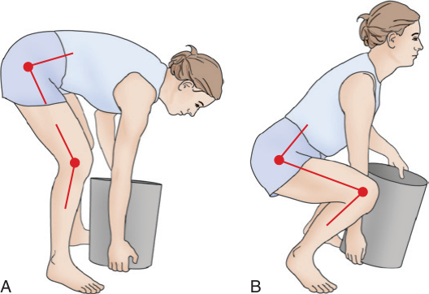
Nhìn một cách tổng thể, các cơ của vùng thân và vùng sọ–cổ có ít nhất ba chức năng liên quan mật thiết với nhau: vận động và ổn định cơ thể, và hỗ trợ hay tối ưu hóa các hoạt động như thị giác và thăng bằng, thông khí, nhai và nuốt, đi tiêu, và sinh nở. Chương này tập trung chủ yếu vào vận động và ổn định.
Cuối cùng, các cơ kiểm soát vận động của vùng thân và vùng sọ–cổ thực hiện điều đó hoặc bằng cách co cơ, hoặc bằng cách chống lại sự bị kéo giãn bởi một lực trội hơn. Tính đặc thù của sự kiểm soát như vậy có thể được tăng cường đáng kể nhờ những đặc điểm giải phẫu độc đáo của các cơ, chẳng hạn hình dạng, kích thước, hướng sợi cơ và sự chi phối thần kinh. Hãy xem xét, ví dụ, cơ thẳng đầu bên (rectus capitis lateralis) rất ngắn và định hướng thẳng đứng ở vùng sọ–cổ trên. Sự co của cơ này được thiết kế để thực hiện những điều chỉnh nhỏ và chính xác tại khớp chẩm–đốt đội, có lẽ nhằm giúp theo dõi một vật khi nó đi qua trường thị giác. Hành động như vậy về bản chất chủ yếu là phản xạ và gắn liền với các trung tâm thần kinh giúp phối hợp thị giác cùng các phản ứng lập lại tư thế (righting) và phản ứng tư thế của đầu và cổ. Hệ thần kinh có khả năng cung cấp sẵn nhiều kết nối thần kinh giữa cơ thẳng đầu bên và nhiều cấu trúc khác, bao gồm các cơ sọ–cổ khác, các khớp mỏm khớp, và bộ tiền đình–mắt (vestibular-and-ocular apparatus). Chấn thương đối với các cơ nhỏ và sâu của vùng sọ–cổ có khả năng làm gián đoạn dòng tín hiệu thần kinh này. Trong những trường hợp giảm cảm giác thân thể (proprioception) vùng sọ–cổ, các vận động có thể trở nên hơi mất phối hợp và do đó đặt lên các khớp tại chỗ một mức căng thẳng cao hơn bình thường. Căng thẳng này có thể kéo dài hoặc làm trầm trọng thêm cơn đau sau chấn thương, như thường thấy trong chấn thương vùng cổ kiểu roi da (whiplash).
Ngược lại với các cơ nhỏ, chẳng hạn cơ thẳng đầu bên, hãy xem xét cơ chéo bụng trong (internal oblique) lớn hơn nhiều, chạy chéo qua phần giữa và dưới của bụng. Cơ này kéo dài từ đường trắng (linea alba) ở phía trước đến cân ngực–thắt lưng (thoracolumbar fascia) ở phía sau. Ví dụ, trong lúc chạy nước rút 100 mét, cơ này được kích hoạt mạnh một cách lặp đi lặp lại khi nó gia tốc và giảm tốc sự xoay trục của thân. Sự chi phối thần kinh phân đoạn cao của cơ này có thể cho phép một sự kích hoạt theo trình tự hơn trên toàn bộ cơ, có lẽ tạo điều kiện cho một “sóng” lực co được truyền khắp vùng bụng và lưng dưới. Trong lúc các cơ bụng co mạnh khi chạy nước rút, cơ hoành phải co và hạ xuống chống lại một áp lực trong ổ bụng rất cao. Chủ đề này sẽ được bàn sâu hơn trong chương tiếp theo.
Ngoài việc sinh ra các lực cần thiết cho vận động, các cơ của vùng thân và vùng sọ–cổ còn có trách nhiệm chính là ổn định cột sống. Sự ổn định này phải diễn ra trong ba chiều không gian, qua nhiều phân đoạn, và cho một số lượng vô hạn các tình huống môi trường vừa được dự đoán trước vừa bất ngờ. Hãy xem xét, ví dụ, nhu cầu ổn định thân trước khi tiếp đất sau một cú nhảy hay khi cố đứng thẳng trên một chiếc thuyền bị lắc lư. Một lợi ích chính của sự ổn định này là bảo vệ các khớp, đĩa đệm và dây chằng trong bộ xương trục và, có lẽ quan trọng hơn, là bảo vệ tủy sống mỏng manh cùng các rễ thần kinh tủy đi ra.
Sự ổn định cơ có thể được cung cấp đơn giản nhờ khối lượng cơ lớn. Điều này đặc biệt thể hiện rõ ở vùng sọ–cổ và vùng thắt lưng–cùng, nơi diện cắt ngang của các cơ cạnh sống (paravertebral muscles) là lớn nhất. Ở vùng thắt lưng–cùng, chẳng hạn, cột sống được bao bọc chặt chẽ bởi các cơ dày, định hướng chéo đến thẳng đứng, như cơ thắt lưng lớn (psoas major), cơ vuông thắt lưng (quadratus lumborum), cơ nhiều đoạn (multifidi), và phần dưới của cơ dựng sống (erector spinae).
Các phương pháp ổn định cơ phức tạp hơn khác cũng hiện diện dọc bộ xương trục, phần lớn trong số đó có thể được “lập trình sẵn” trong hệ thần kinh. Chẳng hạn, một số cơ thân co một cách vô thức một chút trước các vận động chủ động của chi trên, đặc biệt khi các vận động đó được thực hiện nhanh. Hoạt động chuẩn bị này giúp ổn định thân chống lại các vận động phản ứng ngoài ý muốn mà về lâu dài có thể làm tổn thương cột sống. Hơn nữa, trong các vận động của chi dưới, việc kích hoạt các cơ thân là thiết yếu để ổn định và cố định các chỗ bám gần của một số cơ đi qua các khớp háng và khớp gối. Tầm quan trọng của sự ổn định cơ này thường thấy rõ ở những người có các cơ bụng suy yếu thứ phát sau bệnh lý, chẳng hạn một đứa trẻ mắc loạn dưỡng cơ (muscular dystrophy). Trong trường hợp này, một cơn co mạnh của các cơ gập háng, ví dụ, tạo ra một độ nghiêng khung chậu về trước quá mức và ngoài ý muốn so với các khớp háng. Tư thế khung chậu này, đến lượt nó, tạo ra một độ ưỡn thắt lưng quá mức. Theo thời gian, tư thế bất thường này có thể làm tăng sự mài mòn ở các khớp mỏm khớp và tăng lực cắt về phía trước qua mối nối thắt lưng–cùng.
Để kết lại, những bệnh nhân có chấn thương và bệnh tật liên quan đến bộ xương trục thường biểu hiện một tập hợp phức tạp các triệu chứng cơ–xương, điển hình ảnh hưởng đến khả năng vận động tự do và thoải mái của họ, cũng như khả năng hạn chế áp lực đặt lên các mô đốt sống và thần kinh. Sự phức tạp và tính không chắc chắn thường gặp của cơ học bệnh lý nền trong các tình trạng này một phần lý giải sự đa dạng các lựa chọn điều trị và phục hồi chức năng được dùng để chữa các rối loạn liên quan, đặc biệt là những rối loạn kèm đau mạn tính. Mức độ không chắc chắn này chỉ có thể được giảm thiểu bằng các nghiên cứu lâm sàng và phòng thí nghiệm liên tục và tập trung trong lĩnh vực này.
KẾT NỐI LÂM SÀNG 10.1 — Nhìn sâu hơn về các chức năng ổn định cột sống của một số cơ bụng được chọn và cơ nhiều đoạn thắt lưng (A Closer Look at the Spinal Stabilizing Functions of Selected Abdominal Muscles and the Lumbar Multifidi)
Thảo luận sau đây nêu bật những ví dụ về các chức năng ổn định cột sống được thực hiện bởi các cơ bụng (nổi bật nhất là cơ ngang bụng và cơ chéo bụng trong) và cơ nhiều đoạn thắt lưng. Các cơ này được chọn làm trọng tâm chủ yếu vì khối lượng nghiên cứu lớn đã tập trung vào khả năng (hoặc sự thiếu khả năng) của chúng trong việc ổn định vùng thắt lưng–chậu (lumbopelvic region) của thân, bao gồm cột sống thắt lưng, mối nối thắt lưng–cùng và các khớp cùng–chậu. Chủ đề ổn định cơ vùng thắt lưng–chậu thu hút sự chú ý của các nhà nghiên cứu và nhà lâm sàng chủ yếu do tỷ lệ cao của tình trạng mất vững và thoái hóa liên quan đến căng thẳng ở vùng này.
CƠ BỤNG (ABDOMINAL MUSCLES)
Phần lớn những gì đã biết về động học của các cơ ổn định vùng thắt lưng–chậu dựa trên hình ảnh siêu âm (ultrasound imaging), hoặc trên công nghệ điện cơ đồ (electromyography — EMG), dùng điện cực bề mặt hoặc điện cực dây mảnh (kim). Một phương pháp được dùng trong nghiên cứu EMG là ghi lại thứ tự mà các cơ thân khác nhau phản hồi với các xáo trộn toàn thân được dự đoán trước hoặc bất ngờ. Lấy ví dụ, Hình 10.36A thể hiện thời điểm khởi phát các phản hồi EMG của một nhóm cơ bụng được chọn khi một người khỏe mạnh, không đau, nhanh chóng gập cánh tay sau một kích thích thị giác. Tín hiệu EMG trên cùng (được thể hiện màu đỏ) xuất phát từ một cơ gấp vai — cơ delta trước — và các tín hiệu EMG còn lại xuất phát từ cơ chéo bụng ngoài, các vùng giữa và dưới của cơ chéo bụng trong, cùng các vùng trên, giữa và dưới của cơ ngang bụng. Tất cả các cơ được ghi trên một đối tượng này đã phản hồi ở những thời điểm hơi khác nhau (được chỉ bằng các mũi tên thẳng đứng) so với thời điểm khởi phát tín hiệu EMG của cơ delta (đường đứt màu đỏ). Hình 10.36B cho thấy dữ liệu tổng thể của thí nghiệm, dựa trên 11 đối tượng khỏe mạnh.
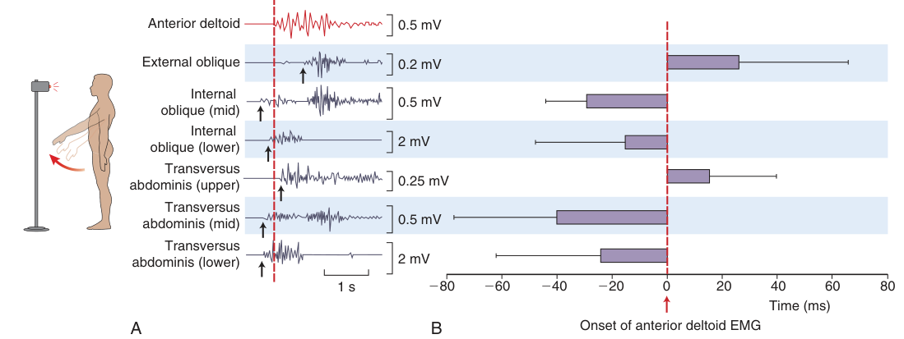
Như đã được phát hiện trước đó qua các nghiên cứu trong lĩnh vực này, các sợi dưới và sợi giữa của cơ ngang bụng và cơ chéo bụng trong luôn kích hoạt trước khi cơ delta kích hoạt. Phản ứng cơ dự đoán trước này được cho là một cơ chế tiềm ẩn, dạng dự đoán trước (feedforward), được sử dụng bởi hệ thần kinh nhằm hạn chế các phản vận động đáp lại (reactive countermovements) của thân mình. Mặc dù tinh tế và chưa được lý giải đầy đủ, phản ứng cơ dự đoán này có thể giúp bảo vệ vùng thắt lưng–chậu khỏi những lực cắt có khả năng gây tổn thương.
Điều thú vị là nhiều vùng của cơ ngang bụng và cơ chéo bụng trong được hoạt hóa vào những thời điểm khác nhau trong đáp ứng với việc cánh tay được nâng lên nhanh chóng. Cảm giác như thể các vùng khác nhau bên trong các cơ này đáp ứng như những thực thể giải phẫu riêng biệt. Mặc dù chỉ cách nhau một khoảng thời gian rất ngắn, các đáp ứng cơ tuần tự này mang lại cái nhìn sâu sắc về những chức năng ổn định phức tạp của các cơ này. Xem xét, về mặt này, các chức năng được đề xuất sau đây cho từng trong ba vùng của cơ ngang bụng. Sự co của các sợi trên của cơ ngang bụng có thể giúp ổn định lồng ngực và đường trắng (linea alba). Các sợi dưới được cho là có tác dụng nén và nhờ đó giúp ổn định các khớp cùng–chậu. Sự co của các sợi giữa của cơ ngang bụng truyền sức căng trực tiếp đến các mỏm gai thắt lưng và xương cùng thông qua các mối nối vào mạc ngực–thắt lưng (thoracolumbar fascia) (xem Chương 9). Tác động này là một phần của hiệu ứng “nịt” (“corset” effect) đã được mô tả trước đó trong chương này cho cơ này.
Hơn nữa, sự co hai bên của các sợi giữa của cơ ngang bụng đặc biệt hiệu quả (cùng với các cơ bụng khác) trong việc nén khoang bụng và nhờ đó tăng áp lực trong ổ bụng (được mô tả trước đó là thủ thuật Valsalva). Có bằng chứng cho thấy sự tăng áp lực trong ổ bụng không chỉ tạo ra một mô men duỗi khiêm tốn lên cột sống thắt lưng, mà còn ổn định vùng này. Để ổn định hiệu quả nhất, khoang bụng hình trụ cũng phải được nén đồng thời từ cả hai đầu phía đầu và phía đuôi. Điều này thường được thực hiện bằng sự hoạt hóa và hạ xuống đồng thời của cơ hoành (diaphragm) — mái của khoang bụng — cùng với sự hoạt hóa và nâng lên của các cơ sàn chậu (pelvic floor muscles) — mặt sàn tận cùng của khoang bụng. Có bằng chứng từ cả động vật lẫn người cho thấy các tương tác cơ này quả thực diễn ra theo cách phối hợp, với kết quả là độ cứng tăng lên của cột sống thắt lưng. Điều thú vị là nghiên cứu điện cơ đồ trên các đối tượng khỏe mạnh cho thấy cơ ngang bụng có một vai trò đặc biệt chuyên trách trong quá trình ổn định lõi này. Trong tất cả các cơ bụng, cơ ngang bụng là cơ đáp ứng nhất quán nhất với các sự xáo trộn tư thế nhằm làm mất ổn định trọng tâm của cơ thể khi đứng, bất kể hướng của sự xáo trộn.
Phương pháp thực nghiệm được minh họa trong Hình 10.36 cũng đã được dùng để nghiên cứu sự hoạt hóa tuần tự của các cơ bụng trong đáp ứng với việc gập nhanh chi dưới. Một cách nhất quán, các cơ bụng (gồm cả cơ thẳng bụng) đáp ứng trước khi các cơ gập hông được hoạt hóa. Điều thú vị là cơ ngang bụng và cơ chéo bụng trong luôn là những cơ thân mình đầu tiên đáp ứng, trung bình sớm hơn 50 đến 100 msec so với các cơ gập hông. Kiểu hoạt hóa này của các cơ bụng, xét như một nhóm, phản ánh nhu cầu của chúng trong việc ổn định phần dưới của thân mình trong lúc vận động chân, cũng như cố định vùng thắt lưng–chậu chống lại lực kéo của các cơ gập hông đang co. Cơ ngang bụng và các cơ bụng chéo cũng đáp ứng trước cả các vận động dang ra (abduction) và duỗi hông chủ động nhanh. Những cơ bụng này có vẻ được “chuyên trách” trong việc ổn định phần dưới thân mình, bất kể hướng của các lực do hệ cơ hông đang co tạo ra.
Hodges và các cộng sự đã dùng một quy trình thực nghiệm tương tự để nghiên cứu sự hoạt hóa cơ tuần tự ở những người bị đau thắt lưng mạn tính. Đáng chú ý, nghiên cứu này cho thấy một độ trễ ngắn, nhất quán, trong thời điểm khởi phát của tín hiệu điện cơ đồ từ cơ ngang bụng — sự hoạt hóa của cơ này thường xảy ra sau sự hoạt hóa của các cơ chủ vận (prime movers) của vận động chi nhanh. Liệu một độ trễ ngắn trong hoạt hóa cơ bụng có thể tạo ra đủ đáp ứng lực trong vùng thắt lưng–chậu để cuối cùng gây ra đau thắt lưng hay không thì vẫn chưa được biết, dù đây là một câu hỏi hấp dẫn. Các nghiên cứu trên mẫu xác chết quả thực đã cho thấy sự xoay trục chỉ với 2 đến 3 độ tại mỗi mối nối liên đốt thắt lưng cũng có thể gây tổn thương tiềm tàng cho các khớp mỏm khớp và các khớp liên thân đốt (xem Chương 9). Một sự kiện căng thẳng “không được bảo vệ” đơn lẻ có thể không đáng kể; tuy nhiên, nhiều sự kiện tích lũy qua nhiều năm có thể làm vùng này dễ bị tổn thương.
CƠ NHIỀU KHỐI THẮT LƯNG (LUMBAR MULTIFIDI)
Nghiên cứu đã cho thấy, ngoài các cơ ngang bụng và cơ chéo bụng trong, các cơ nhiều đoạn thắt lưng (lumbar multifidi) cũng được chiêu mộ một cách nhất quán vào giai đoạn sớm ở những người khỏe mạnh trong đáp ứng với các sự xáo trộn khác nhau tác động lên cơ thể. Các cơ nhiều đoạn được cho là những bộ ổn định rất có năng lực của cột sống thắt lưng, đặc biệt ở các phân đoạn dưới. Sức mạnh duỗi theo vùng của các cơ này được củng cố bởi kích thước tương đối lớn của chúng; chúng chiếm khoảng một phần ba tổng diện tích cắt ngang của tất cả các cơ cạnh sống sâu ở mức L4. Ngoài độ dày, các cơ nhiều đoạn còn có hình thái phân đoạn cao. Những đặc điểm này thuận lợi cho việc kiểm soát chính xác và, khi cần, quyết đoán sự ổn định liên phân đoạn của vùng thắt lưng.
Các cơ nhiều đoạn ở những người bị đau thắt lưng cấp hoặc mạn tính có xu hướng biểu hiện hàm lượng mỡ tăng lên cùng với teo kéo dài và ức chế thần kinh–cơ dai dẳng. Những phát hiện này đáng chú ý, xét đến tầm quan trọng được đề xuất của các cơ này trong việc ổn định vùng thắt lưng. Mức độ teo ở các cơ nhiều đoạn thắt lưng là gây kinh ngạc; đã có báo cáo về sự giảm 30% diện tích cắt ngang, ở một số trường hợp chỉ trong vòng vài ngày kể từ khi khởi phát các triệu chứng đau. Nguyên nhân của sự teo ưu tiên ở các cơ này vẫn chưa chắc chắn.
Teo nhiều và kéo dài của các cơ nhiều đoạn thắt lưng cũng đã được báo cáo ở những đối tượng khỏe mạnh, không đau, bị bắt nằm bất động nghiêm ngặt trên giường trong 8 tuần. Đặc biệt đáng quan tâm là đáp ứng của một phân nhóm đối tượng mà, trong khi vẫn phải nằm bất động nghiêm ngặt trên giường, được cho phép tập luyện hai lần mỗi ngày (thực hiện bài tập kháng lực kết hợp với việc nhận rung toàn thân). Những đối tượng này biểu hiện mức teo cơ nhiều đoạn ít hơn có ý nghĩa thống kê, và mức teo không kéo dài lâu bằng so với nhóm đối chứng không vận động. Có vẻ như các cơ nhiều đoạn thắt lưng đặc biệt nhạy cảm với bệnh lý cơ xương ở vùng thắt lưng, cũng như với việc chịu tải giảm qua bộ xương trục. Bất kể cơ chế nền tảng là gì, có cơ sở để giả định rằng teo nhiều và kéo dài của các cơ này làm giảm sự ổn định cơ học của cột sống thắt lưng, có khả năng khiến nó dễ bị tổn thương liên quan đến căng thẳng. Vì lý do này, các bài tập được thiết kế để điều trị những người bị đau thắt lưng thường kết hợp các bài tập cụ thể nhằm tăng cường các cơ nhiều đoạn thắt lưng.
KẾT NỐI LÂM SÀNG 10.2 — Bài tập trị liệu như một cách cải thiện sự ổn định thắt lưng–chậu: Tổng quan ngắn (Therapeutic Exercise as a Way to Improve Lumbopelvic Stability: A Brief Overview)
Một tỷ lệ đáng kể các bệnh lý cơ xương liên quan đến căng thẳng của thân mình xảy ra tại vùng thắt lưng–chậu. Vùng này gồm cột sống thắt lưng, mối nối thắt lưng–cùng (lumbosacral junction) và các khớp cùng–chậu (sacroiliac joints). Thuật ngữ mất vững chắc thắt lưng–chậu (lumbopelvic instability) đã dần được dùng để mô tả một tình trạng đau, thường không đặc hiệu, có liên quan đến vận động quá mức (hypermobility) tại một hoặc nhiều phân đoạn khớp. Mức vận động quá mức có thể nhẹ và thường khó xác định qua đánh giá lâm sàng thông thường. Dù vậy, người ta cho rằng tình trạng này tạo ra các mức căng thẳng có khả năng gây hại lên các cấu trúc liên quan đến cột sống, gồm các khớp liên thân đốt, khớp mỏm khớp và khớp cùng–chậu, các dây chằng cột sống và các mô thần kinh. Bức tranh lâm sàng của tình trạng này thường bị phức tạp thêm bởi sự không chắc chắn về việc mất vững chắc thắt lưng–chậu là nguyên nhân hay là hệ quả của các khiếm khuyết khác ở vùng thắt lưng, chẳng hạn bệnh thoái hóa đĩa đệm (degenerative disc disease).
Sự yếu, mệt mỏi, hay không có khả năng kiểm soát cụ thể thời điểm hoặc độ lớn của các lực do các cơ thân mình tạo ra từ lâu đã bị nghi ngờ là một nguyên nhân tiềm tàng, hay ít nhất là một yếu tố liên quan, trong cơ chế bệnh sinh của mất vững chắc thắt lưng–chậu. Vì lý do này, các bài tập dựa trên cơ cụ thể thường được coi là một thành phần thiết yếu của điều trị bảo tồn cho tình trạng này. Việc mô tả chi tiết và mức hiệu quả của nhiều kiểu bài tập được thiết kế để cải thiện sự ổn định thắt lưng–chậu dựa trên cơ nằm ngoài phạm vi của chương này; thông tin đó có thể tìm thấy trong các nguồn khác. Tuy vậy, phần thảo luận sau đây liệt kê bốn chủ đề thường được nhấn mạnh với cách tiếp cận trị liệu này. Điều quan trọng cần lưu ý là các bài tập kháng lực thuộc bất kỳ kiểu nào cũng có thể không phù hợp trong các trường hợp mất vững chắc cấu trúc cụ thể của vùng thắt lưng–chậu (chẳng hạn trượt đốt sống — spondylolisthesis — cấp hoặc đáng kể), khi có thoát vị đĩa đệm cấp, hoặc với bất kỳ tình trạng nào kèm đau nhiều hoặc các triệu chứng thần kinh xấu đi. Bốn chủ đề sau đây thường được nhấn mạnh khi thiết kế các bài tập nhằm cải thiện sự ổn định thắt lưng–chậu dựa trên cơ. Các chủ đề này chắc chắn sẽ được điều chỉnh khi nghiên cứu tiếp tục diễn ra trong lĩnh vực phức tạp nhưng quan trọng này.
KẾT NỐI LÂM SÀNG 10.3 — Vẹo cổ và tư thế ngủ: Có mối liên hệ nào không? (Torticollis and Sleeping Position: Is There a Link?)
Vẹo cổ (torticollis, từ tiếng Latin tortus nghĩa là vặn, xoắn + collum nghĩa là cổ) thường được dùng để chỉ một tình trạng bệnh lý gồm sự rút ngắn kéo dài, một bên, của cơ ức đòn chũm. Tình trạng này, thường được nhận diện ở trẻ nhỏ hoặc trẻ sơ sinh, phần lớn là bẩm sinh nhưng cũng có thể mắc phải sau khi sinh do cách đặt đầu của trẻ. Dù khởi phát theo cách nào, trẻ em hoặc trẻ sơ sinh bị vẹo cổ thường có một tư thế sọ–cổ bất đối xứng phản ánh các tác động chính của cơ bị căng co. Trẻ em được minh họa trong Hình 10.37 có cơ ức đòn chũm trái căng co (xem mũi tên), với tư thế tương ứng là nghiêng bên trái nhẹ kết hợp xoay trục sang phải của vùng sọ–cổ.
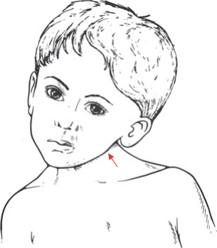
Tỉ lệ mắc vẹo cổ được báo cáo biến thiên đáng kể, do các phương pháp phát hiện tình trạng này khác nhau cũng như các định nghĩa về tình trạng này chưa thống nhất. Các ước tính về tỉ lệ vẹo cổ bẩm sinh dao động từ 0,4% đến 3,9% và có thể lên tới 16% số ca sinh.
Dù vẹo cổ phần lớn liên quan đến cơ, tình trạng này cũng có thể liên quan đến các hệ không phải cơ. Vẹo cổ bẩm sinh dựa trên nguyên nhân cơ — phổ biến hơn hẳn — thường đi kèm với một lượng mô xơ quá mức bên trong cơ ức đòn chũm. Mặc dù nguyên nhân chính xác của tình trạng này chưa được biết rõ, nó thường liên quan đến quá trình chuyển dạ khó khăn, đẻ ngược (breech delivery), hoặc tư thế bất lợi hay chật chội trong tử cung (intrauterine malpositioning or crowding). Dạng vẹo cổ không dựa trên nguyên nhân cơ, tiềm ẩn nặng nề hơn, có thể liên quan đến bệnh lý của hệ thần kinh (gồm cả thị giác) hoặc hệ xương (điển hình liên quan đến loạn sản cột sống cổ — cervical dysplasia). Tomczak và Rosman đã cung cấp một bản tổng quan kỹ lưỡng về nhiều biểu hiện lâm sàng, nguyên nhân và cách điều trị của vẹo cổ.
Khoảng một phần ba số trẻ sơ sinh bị vẹo cổ cũng phát triển chứng dẹt đầu dị dạng (plagiocephaly). Tình trạng này là sự tạo hình bất thường và sự biến dạng tiếp theo về hình dáng của hộp sọ vốn còn mềm của trẻ sơ sinh. Hình dáng bị biến dạng này điển hình do đầu trẻ nằm nghỉ kéo dài ở một tư thế duy nhất, áp sát một bề mặt khác. Một số tác giả cho rằng một trẻ sơ sinh đã bị vẹo cổ có thể phát triển một chứng dẹt đầu thứ phát (ảnh hưởng đến vùng sau–ngang của hộp sọ) trước hoặc ngay sau khi sinh, do sự tiếp xúc kéo dài và tập trung lên hộp sọ đang xoay của trẻ. Ngược lại, các tác giả khác khẳng định rằng một trẻ sơ sinh sinh ra không bị vẹo cổ cuối cùng vẫn có thể phát triển chứng dẹt đầu kèm vẹo cổ thứ phát, đơn thuần vì đầu trẻ có xu hướng giữ một tư thế xoay được ưa thích khi ngủ ở tư thế nằm ngửa. Một khi đã hình thành, chứng dẹt đầu tư thế củng cố mạnh mẽ tư thế đầu bất đối xứng (xoay) đã được thiết lập mà trẻ dùng để ngủ. Tư thế đầu xoay không đổi này làm cơ ức đòn chũm bên đối bên bị rút ngắn về mặt chiều dài một cách mạn tính, về sau phát triển thành co rút (contracture) và tạo nên biểu hiện kinh điển của vẹo cổ. Nhiều trẻ sơ sinh phát triển vẹo cổ sau chứng dẹt đầu không có các thay đổi xơ hóa trong cơ ức đòn chũm bị căng; dạng biến dạng này phát triển đơn thuần như một hệ quả của sự căng cơ gây ra bởi cách đặt sọ–cổ bất thường. Biểu hiện lâm sàng này của vẹo cổ ở trẻ sơ sinh thường được gọi là vẹo cổ tư thế (positional or postural torticollis).
Quan niệm rằng chứng dẹt đầu có thể, trong một số trường hợp, dẫn tới vẹo cổ tư thế đã được củng cố bởi một chuỗi sự kiện diễn ra trong thập niên 1990. Trong thập kỷ này, Viện Hàn lâm Nhi khoa Hoa Kỳ đã công bố các khuyến nghị rằng trẻ sơ sinh khỏe mạnh nên được đặt nằm ngửa khi ngủ như một cách để giảm tỉ lệ hội chứng đột tử ở trẻ sơ sinh (sudden infant death syndrome, SIDS). Khuyến nghị “back-to-sleep” (đặt trẻ nằm ngửa khi ngủ) đã tạo ra tác động ngoạn mục đối với kiểu ngủ của nhiều trẻ sơ sinh tại Hoa Kỳ. Tỉ lệ trẻ sơ sinh được đặt nằm sấp khi ngủ đã giảm 66% trong giai đoạn từ năm 1992 đến năm 1996. Mặc dù không thể khẳng định một cách dứt khoát có quan hệ nhân–quả trực tiếp hay không, tỉ lệ SIDS đã giảm đi khoảng 38–50% trong cùng khoảng thời gian này. Sự giảm đồng thời đáng kinh ngạc của tỉ lệ SIDS dù sao cũng củng cố mạnh mẽ tiền đề nền tảng của chiến dịch “Back-to-Sleep” (chiến dịch này đã được cập nhật, mở rộng và đổi tên thành Safe-to-Sleep vào năm 2011). Bằng chứng cho thấy mạnh mẽ rằng việc gia tăng tần suất ngủ chỉ ở tư thế nằm ngửa cũng đã dẫn đến sự gia tăng tỉ lệ chứng dẹt đầu tư thế, ảnh hưởng rõ nhất đến vùng sau–ngang của hộp sọ. Hơn nữa, các dữ liệu bổ sung cho thấy sự gia tăng ngoạn mục của chứng dẹt đầu tư thế đã kéo theo sự gia tăng song song của vẹo cổ tư thế.
Không còn nghi ngờ gì, thành công to lớn và cứu được sinh mạng của chiến dịch Back-to-Sleep trong thập niên 1990 vượt xa hậu quả tiêu cực tiềm ẩn do sự gia tăng tỉ lệ chứng dẹt đầu và vẹo cổ thứ phát gây ra. Các nỗ lực nhằm giảm thiểu tỉ lệ mắc hai tình trạng có khả năng liên quan đến nhau này đang được tiếp tục thực hiện. Các nhà lâm sàng thường khuyên cha mẹ hoặc người giám hộ nên đổi vị trí đầu của trẻ đang nằm ngửa. Các nhà lâm sàng cũng khuyến khích cha mẹ hoặc người giám hộ dành ra những khoảng thời gian ngắn chơi với trẻ trong tư thế nằm sấp có người giám sát và có tương tác (“prone-play” hay “tummy time”) nhiều lần trong các giờ trẻ thức vào ban ngày, trong khi vẫn tuân thủ nghiêm ngặt nguyên tắc Back-to-Sleep. Việc khuyến khích trẻ nằm sấp nhiều hơn trong lúc thức rất có thể làm giảm khả năng phát triển chứng dẹt đầu (và vẹo cổ thứ phát), đồng thời cũng có thể tạo điều kiện thuận lợi cho sự phát triển thần kinh–cơ tự nhiên của trẻ. Một số tác giả cho rằng thời gian quá lâu ở tư thế nằm ngửa có thể gây chậm đạt được một số mốc phát triển vận động, dù hậu quả lâu dài của những sự chậm trễ này, nếu có, vẫn chưa rõ ràng.
Dù nguyên nhân chính xác của vẹo cổ là gì, can thiệp y khoa điển hình là bảo tồn và gồm cả vật lý trị liệu (physical therapy). Liệu pháp thường bao gồm khuyến khích việc giáo dục cha mẹ, kéo giãn cơ bị ảnh hưởng trong khi tăng cường cơ đối bên tương ứng, và khuyến khích các hoạt động tạo điều kiện cho sự phát triển vận động bình thường, như lăn trở hoặc duy trì kiểm soát đầu. Cha mẹ hoặc người giám hộ của trẻ bị vẹo cổ được hướng dẫn cách kéo giãn cơ bị căng và cách đặt tư thế cũng như bế ẵm trẻ để thúc đẩy sự kéo dài (giãn) của cơ liên quan (ví dụ, khuyến khích các hoạt động đưa cằm của trẻ về phía cơ bị ảnh hưởng). Trong những trường hợp co rút nặng hơn, cơ có thể được tiêm độc tố botulinum (Botox) hoặc được phẫu thuật giải phóng.
Đáp án cho các câu hỏi nghiên cứu có trên trang web Evolve.
TẤT CẢ VIDEO của chương này có thể được truy cập bằng cách quét mã QR nằm ở bên phải.
Các video về một nam giới khỏe mạnh đang tập luyện với các bóng đèn được điều khiển bằng EMG bề mặt (surface EMG) gắn trên da, phủ lên nhiều cơ khác nhau của chi trên và thân. Các bài tập được thiết kế chủ yếu để đồng hoạt hóa (coactivate) một số cơ nhất định của chi trên và thân. Các bài tập bao gồm việc sử dụng TRX© Suspension Training (hệ thống dây treo kháng lực), Body Blade© (thanh rung kháng lực), Battle Rope© (dây kháng lực) và bóng y tế (medicine ball).